Domain 8
Software Development Security
CHAPTER
8
Software Development
Security
This chapter presents the following:
- Common software development issues
- Software development life cycles
- Secure software development approaches
- Development/operations integration (DevOps)
- Change control and configuration management
- Security of code repositories
- Programming language types
- Database concepts and security issues
- Malware types and attacks
A good programmer is someone who always looks both ways before crossing a one-way street.
—Doug Linder
Software is usually developed with a strong focus on functionality, not security. In many cases, security controls are bolted on as an afterthought (if at all). To get the best of both worlds, security and functionality would have to be designed and integrated at each phase of the development life cycle. Security should be interwoven into the core of a product and provide protection at the necessary layers. This is a better approach than trying to develop a front end or wrapper that may reduce the overall functionality and leave security holes when the software has to be integrated into a production environment.
In this chapter we will cover the complex world of secure software development and the bad things that can happen when security is not interwoven into products properly.
Building Good Code
Qualitycan be defined as fitness for purpose. In other words, quality refers to how good or bad something is for its intended purpose. A high-quality car is good for transportation. We don’t have to worry about it breaking down, failing to protect its occupants in
a crash, or being easy for a thief to steal. When we need to go somewhere, we can count on a high-quality car to get us to wherever we need to go. Similarly, we don’t have to worry about high-quality software crashing, corrupting our data under unforeseen circumstances, or being easy for someone to subvert. Sadly, many developers still think of functionality first (or only) when thinking about quality. When we look at it holistically, we see that quality is the most important concept in developing secure software. Code reviews and interface testing, discussed in Chapter 6, are key elements in ensuring software quality. We also discussed misuse case testing, the goal of which is to identify the ways in which adversaries might try to subvert our code and then allow us to identify controls that would prevent them from doing so. So, while controls are critical to our systems’ security, they need to be considered in the context of overall software quality. Software controls come in various flavors and have many different goals. They can control input, encryption, logic processing, number-crunching methods, interprocess communication, access, output, and interfacing with other software. Software controls should be developed with potential risks in mind, and many types of threat models and risk analyses should be invoked at different stages of development. The goals are to reduce vulnerabilities and the possibility of system compromise. The controls can be preventive, detective, or corrective. While security controls can be administrative and physical in nature, the controls used within software are usually more technical in nature. Which specific software controls should be used depends on the software itself, its objectives, the security goals of its associated security policy, the type of data it will process, the functionality it is to carry out, and the environment in which it will be placed. If an application is purely proprietary and will run only in closed, trusted environments, fewer security controls may be needed than those required for applications that will connect businesses over the Internet and provide financial transactions. The trick is to understand the security needs of a piece of software, implement the right controls and mechanisms, thoroughly test the mechanisms and how they integrate into the application, follow structured development methodologies, and provide secure and reliable distribution methods. Though this may all sound overwhelming, software can be developed securely. In fact, despite some catastrophic failures that occasionally show up in the news media, programmers and vendors are steadily getting better at secure development. We will walk through many of the requirements necessary to create secure software throughout this chapter.
Where Do We Place Security?
Today, many security efforts look to solve security problems through controls such as firewalls, intrusion detection systems (IDSs), content filtering, antimalware software, vulnerability scanners, and much more. This reliance on a long laundry list of security technologies occurs mainly because our software contains many vulnerabilities. Our environments are commonly referred to as hard and crunchy on the outside and soft and chewy on the inside. This means our perimeter security is fortified and solid, but our internal environment and software are easy to exploit once access has been obtained.
In reality, the flaws within the software cause a majority of the vulnerabilities in the first place. Several reasons explain why perimeter devices are more often considered than dealing with the insecurities within the software:
In the past, it was not considered crucial to implement security during the
- software development stages; thus, many programmers today do not practice these procedures.
Most security professionals are not software developers, and thus do not have
- complete insight to software vulnerability issues.
Most software developers are not security professionals and do not have security
- as a main focus. Functionality is usually considered more important than security.
Software vendors are trying to get their products to market in the quickest
- possible time and may not take the time for proper security architecture, design, and testing steps.
The computing community has gotten used to receiving software with flaws
- and then applying patches. This has become a common and seemingly acceptablepractice.
Customers cannot control the flaws in the software they purchase, so they must
- depend upon perimeter protection.
Finger-pointing and quick judgments are neither useful nor necessarily fair at this stage of our computing evolution. Twenty years ago, mainframes did not require much security because only a handful of people knew how to run them, users worked on computers (dumb terminals) that could not introduce malicious code to the mainframe, and environments were closed. The core protocols and computing framework were developed at a time when threats and attacks were not prevalent. Such stringent security wasn’t needed. Then, computer and software evolution took off, and the possibilities splintered into a thousand different directions. The high demand for computer technology and different types of software increased the demand for programmers, system designers, administrators, and engineers. This demand brought in a wave of people who had little experience pertaining to security. The lack of experience, the high change rate of technology, the focus on functionality, and the race to market vendors experience just to stay competitive have added problems to security measures that are not always clearly understood. Although it is easy to blame the big software vendors for producing flawed or buggy software, this is driven by customer demand. Since at least the turn of the century, we have been demanding more and more functionality from software vendors. The software vendors have done a wonderful job in providing these perceived necessities. Only recently have customers (especially corporate ones) started to also demand security. Meeting this demand is difficult for several reasons: programmers traditionally have not been properly educated in secure coding; operating systems and applications were not built on secure architectures from the beginning; software development procedures have not been security oriented; and integrating security as an afterthought makes the process clumsier
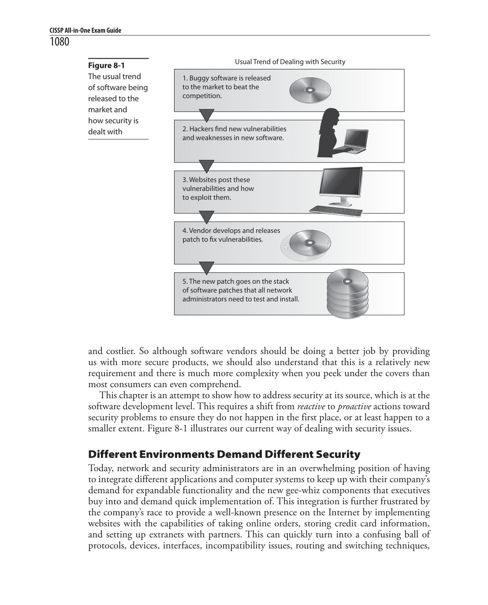
Figure 8-1
and costlier. So although software vendors should be doing a better job by providing us with more secure products, we should also understand that this is a relatively new requirement and there is much more complexity when you peek under the covers than most consumers can even comprehend. This chapter is an attempt to show how to address security at its source, which is at the software development level. This requires a shift fromreactivetoproactiveactions toward security problems to ensure they do not happen in the first place, or at least happen to a smaller extent. Figure 8-1 illustrates our current way of dealing with security issues.
Different Environments Demand Different Security
Today, network and security administrators are in an overwhelming position of having to integrate different applications and computer systems to keep up with their company’s demand for expandable functionality and the new gee-whiz components that executives buy into and demand quick implementation of. This integration is further frustrated by the company’s race to provide a well-known presence on the Internet by implementing websites with the capabilities of taking online orders, storing credit card information, and setting up extranets with partners. This can quickly turn into a confusing ball of protocols, devices, interfaces, incompatibility issues, routing and switching techniques,
telecommunications routines, and management procedures—all in all, a big enough headache to make an administrator buy some land in Montana and go raise goats instead. On top of this, security is expected, required, and depended upon. When security compromises creep in, the finger-pointing starts, liability issues are tossed like hot potatoes, and people might even lose their jobs. An understanding of the environment, what is currently in it, and how it works is required so these new technologies can be implemented in a more controlled and comprehensible fashion. The days of developing a simple web page and posting it on the Internet to illustrate your products and services are long gone. Today, the customer front end, complex middleware, and multitiered architectures must be integrated seamlessly. Networks are commonly becoming “borderless” since everything from smartphones and iPads to other mobile devices are being plugged in, and remote users are becoming more of the norm instead of the exception. As the complexity of these types of environments grows, tracking down errors and security compromises becomes an awesome task.
Environment vs. Application
Software controls can be implemented by the operating system or by the application— and usually a combination of both is used. Each approach has its strengths and weaknesses, but if they are all understood and programmed to work in a concerted manner, then many different undesirable scenarios and types of compromises can be thwarted. One downside to relying mainly on operating system controls is that although they can control a subject’s access to different objects and restrict the actions of that subject within the system, they do not necessarily restrict the subject’s actions within an application. If an application has a security vulnerability within its own programmed code, it is not always possible for the operating system to predict and control this vulnerability. An operating system is a broad environment for many applications to work within. It is unrealistic to expect the operating system to understand all the nuances of different programs and their internal mechanisms. On the other hand, application controls and database management controls are very specific to their needs and in the security compromises they understand. Although an application might be able to protect data by allowing only certain types of input and not permitting certain users to view data kept in sensitive database fields, it cannot prevent the user from inserting bogus data into the Address Resolution Protocol (ARP) table— this is the responsibility of the operating system and its network stack. Operating system and application controls have their place and limitations. The trick is to find out where one type of control stops so the next type of control can be configured to kick into action. Security has been mainly provided by security products and perimeter devices rather than controls built into applications. The security products can cover a wide range of applications, can be controlled by a centralized management console, and are further away from application control. However, this approach does not always provide the necessary level of granularity and does not approach compromises that can take place because of problematic coding and programming routines. Firewalls and access control mechanisms can provide a level of protection by preventing attackers from gaining access
to be able to exploit known vulnerabilities, but the best protection happens at the core of the problem—proper software development and coding practices must be in place.
Functionality vs. Security
Programming code is complex—the code itself, routine interaction, global and local variables, input received from other programs, output fed to different applications, attempts to envision future user inputs, calculations, and restrictions form a long list of possible negative security consequences. Many times, trying to account for all the “what-ifs” and programming on the side of caution can reduce the overall functionality of the application. As you limit the functionality and scope of an application, the market share and potential profitability of that program could be reduced. A balancing act always exists between functionality and security, and in the development world, functionality is usually deemed the most important. So, programmers and application architects need to find a happy medium between the necessary functionality of the program, the security requirements, and the mechanisms that should be implemented to provide this security. This can add more complexity to an already complex task. More than one road may lead to enlightenment, but as these roads increase in number, it is hard to know if a path will eventually lead you to bliss or to fiery doom in the underworld. Many programs accept data from different parts of the program, other programs, the system itself, and user input. Each of these paths must be followed in a methodical way, and each possible scenario and input must be thought through and tested to provide a deep level of assurance. It is important that each module be capable of being tested individually and in concert with other modules. This level of understanding and testing will make the product more secure by catching flaws that could be exploited.
Implementation and Default Issues
As many people in the technology field know, out-of-the-box implementations are usually far from secure. Most security has to be configured and turned on after installation— not being aware of this can be dangerous for the inexperienced security person. The Windows operating system has received its share of criticism for lack of security, but the platform can be secured in many ways. It just comes out of the box in an insecure state because settings have to be configured to properly integrate it into different environments, and this is a friendlier way of installing the product for users. For example, if Mike is installing a new software package that continually throws messages of “Access Denied” when he is attempting to configure it to interoperate with other applications and systems, his patience might wear thin, and he might decide to hate that vendor for years to come because of the stress and confusion inflicted upon him. Yet again, we are at a hard place for developers and architects. When a security application or device is installed, it should default to “No Access.” This means that when Laurel installs a packet-filter firewall, it should not allow any packets to pass into the network that were not specifically granted access. However, this requires Laurel to know how to configure the firewall for it to ever be useful. A fine balance exists between
security, functionality, and user friendliness. If an application is extremely user friendly, it is probably not as secure. For an application to be user friendly, it usually requires a lot of extra coding for potential user errors, dialog boxes, wizards, and step-by-step instructions. This extra coding can result in bloated code that can create unforeseeable compromises. So vendors have a hard time winning, but they usually keep making money while trying.
Later versions of Windows have services turned off and require the user to turn them on as needed. This is a step closer to “default with no access,” but we still have a ways to go.
Implementation errors and misconfigurations are common items that cause many of the security issues in networked environments. Most people do not realize that various services are enabled when a system is installed. These services can provide adversaries with information and vectors that can be used during an attack. Many services provide an actual way into the environment itself. For example, NetBIOS services, which have few, if any, security controls, can be enabled to permit sharing resources in Windows environments. Other services, such as File Transfer Protocol (FTP), Trivial File Transfer Protocol (TFTP), and older versions of the Simple Network Management Protocol (SNMP), have no real safety measures in place. Some of these services (as well as others) are enabled by default, so when an administrator installs an operating system and does not check these services to properly restrict or disable them, they are available for attackers to uncover and use. Because vendors have user friendliness and user functionality in mind, the product will usually be installed with defaults that provide no, or very little, security protection. It would be very hard for vendors to know the security levels required in all the environments the product will be installed in, so they usually do not attempt it. It is up to the person installing the product to learn how to properly configure the settings to achieve the necessary level of protection. Another problem in implementation and security is the number of unpatched systems. Once security issues are identified, vendors develop patches or updates to address and fix these security holes. However, these often do not get installed on the systems that are vulnerable in a timely manner. The reasons for this vary: administrators may not keep up to date on the recent security vulnerabilities and necessary patches, they may not fully understand the importance of these patches, or they may be afraid the patches will cause other problems. All of these reasons are quite common, but they all have the same result—insecure systems. Many vulnerabilities that are exploited today have had patches developed and released months or years ago. It is unfortunate that adding security (or service) patches can adversely affect other mechanisms within the system. The patches should be tested for these types of activities before they are applied to production servers and workstations to help prevent service disruptions that can affect network and employee productivity. Of course, the best way to reduce the need for patching is by developing the software properly in the first place, which is the issue to which we turn our attention next.
Software Development Life Cycle
The life cycle of software development deals with putting repeatable and predictable processes in place that help ensure functionality, cost, quality, and delivery schedule requirements are met. So instead of winging it and just starting to develop code for a project, how can we make sure we build the best software product possible? There have been severalsoftware development life cycle (SDLC)models developed over the years, which we will cover later in this section, but the crux of each model deals with the following phases:
Requirements gatheringDeterminewhyto create this software,whatthe
- software will do, andfor whomthe software will be created
DesignDeals withhowthe software will accomplish the goals identified, which
- are encapsulated into a functional design
DevelopmentProgramming software code to meet specifications laid out in
- the design phase and integrating that code with existing systems and/or libraries
Testing/validationVerifying and validating software to ensure that the
- software works as planned and that goals are met
Release/maintenanceDeploying the software and then ensuring that it is
- properly configured, patched, and monitored
In the following sections we will cover the different phases that make up a software development life-cycle model and some specific items about each phase that are important to understand. Keep in mind that the discussion that follows covers phases that may happen repeatedly and in limited scope depending on the development methodology being used.
Project Management
Before we get into the phases of the SDLC, let’s first introduce the glue that holds them together: project management. Many developers know that good project management keeps the project moving in the right direction, allocates the necessary resources, provides the necessary leadership, and plans for the worst yet hopes for the best. Project management processes should be put into place to make sure the software development project executes each life-cycle phase properly. Project management is an important part of product development, and security management is an important part of project management. A security plan should be drawn up at the beginning of a development project and integrated into the functional plan to ensure that security is not overlooked. The first plan is broad, covers a wide base, and refers to documented references for more detailed information. The references could include computer standards (RFCs, IEEE standards, and best practices), documents developed in previous projects, security policies, accreditation statements, incident-handling plans, and national or international guidelines. This helps ensure that the plan stays on target.
The security plan should have a lifetime of its own. It will need to be added to, subtracted from, and explained in more detail as the project continues. It is important to keep it up to date for future reference. It is always easy to lose track of actions, activities, and decisions once a large and complex project gets underway. The security plan and project management activities may likely be audited so security-related decisions can be understood. When assurance in the product needs to be guaranteed, indicating that security was fully considered in each phase of the life cycle, the procedures, development, decisions, and activities that took place during the project will be reviewed. The documentation must accurately reflect how the product was built and how it is supposed to operate once implemented into an environment. If a software product is being developed for a specific customer, it is common for a Statement of Work (SOW)to be developed, which describes the product and customer requirements. A detail-oriented SOW will help ensure that these requirements are properly understood and assumptions are not made. Sticking to what is outlined in the SOW is important so thatscope creepdoes not take place. If the scope of a project continually extends in an uncontrollable manner (creeps), the project may never end, not meet its goals, run out of funding, or all of the above. If the customer wants to modify its requirements, it is important that the SOW is updated and funding is properly reviewed. Awork breakdown structure (WBS)is a project management tool used to define and group a project’s individual work elements in an organized manner. It is a deliberate decomposition of the project into tasks and subtasks that result in clearly defined deliverables. The SDLC should be illustrated in a WBS format, so that each phase is properly addressed.
Requirements Gathering Phase
This is the phase when everyone involved attempts to understand why the project is needed and what the scope of the project entails. Either a specific customer needs a new application or a demand for the product exists in the market. During this phase, the team examines the software’s requirements and proposed functionality, engages in brainstorming sessions, and reviews obvious restrictions. A conceptual definition of the project should be initiated and developed to ensure everyone is on the right page and that this is a proper product to develop. This phase could include evaluating products currently on the market and identifying any demands not being met by current vendors. It could also be a direct request for a specific product from a current or future customer. As it pertains to security, the following items should be accomplished in this phase:
Security requirements
- Security risk assessment
- Privacy risk assessment
- Risk-level acceptance
- The security requirements of the product should be defined in the categories of availability, integrity, and confidentiality. What type of security is required for the software product and to what degree? An initial security risk assessment should be carried out to identify the potential threats and their associated consequences. This process usually involves asking many, many questions to draw up the laundry list of vulnerabilities and threats, the probability of these vulnerabilities being exploited, and the outcome if one of these threats actually becomes real and a compromise takes place. The questions vary from product to product—such as its intended purpose, the expected environment it will be implemented in, the personnel involved, and the types of businesses that would purchase and use the product. The sensitivity level of the data the software will be maintaining and processing has only increased in importance over the years. After aprivacy risk assessment, aPrivacy Impact Ratingcan be assigned, which indicates the sensitivity level of the data that will be processed or accessible. Some software vendors incorporate the following Privacy Impact Ratings in their software development assessment processes:
P1, High Privacy RiskThe feature, product, or service stores or transfers
- personally identifiable information (PII), monitors the user with an ongoing transfer of anonymous data, changes settings or file type associations, or installs software.
P2, Moderate Privacy RiskThe sole behavior that affects privacy in the
- feature, product, or service is a one-time, user-initiated anonymous data transfer (e.g., the user clicks on a link and goes out to a website).
P3, Low Privacy RiskNo behaviors exist within the feature, product, or
- services that affect privacy. No anonymous or personal data is transferred, no PII is stored on the machine, no settings are changed on the user’s behalf, and no software is installed.
The software vendor can develop its own Privacy Impact Ratings and their associated definitions. As of this writing there is no standardized approach to defining these rating types, but as privacy increases in importance, we might see more standardization in these ratings and associated metrics. A clear risk-level acceptance criteria needs to be developed to make sure that mitigation efforts are prioritized. The acceptable risks will depend upon the results of the security and privacy risk assessments. The evaluated threats and vulnerabilities are used to estimate the cost/benefit ratios of the different security countermeasures. The level of each security attribute should be focused upon so a clear direction on security controls can begin to take shape and can be integrated into the design and development phases.
Design Phase
This is the phase that starts to map theory to reality. The theory encompasses all of the requirements that were identified in previous phases, and the design outlines how the product is actually going to accomplish these requirements.
The software design phase is a process used to describe the requirements and the internal behavior of the software product. It then maps the two elements to show how the internal behavior actually accomplishes the defined requirements. Some companies skip the functional design phase, which can cause major delays down the road and redevelopment efforts because a broad vision of the product needs to be understood before looking strictly at the details. Software requirements commonly come from three models:
Informational modelDictates the type of information to be processed and
- how it will be processed
Functional modelOutlines the tasks and functions the application needs to
- carry out
Behavioral modelExplains the states the application will be in during and
- after specific transitions take place
For example, an antimalware software application may have an informational model that dictates what information is to be processed by the program, such as virus signatures, modified system files, checksums on critical files, and virus activity. It would also have a functional model that dictates that the application should be able to scan a hard drive, check e-mail for known virus signatures, monitor critical system files, and update itself. The behavioral model would indicate that when the system starts up, the antimalware software application will scan the hard drive and memory segments. The computer coming online would be the event that changes the state of the application. If a virus were found, the application would change state and deal with the virus appropriately. Each state must be accounted for to ensure that the product does not go into an insecure state and act in an unpredictable way. The informational, functional, and behavioral model data go into the software design as requirements. What comes out of the design is the data, architectural, and procedural design, as shown in Figure 8-2. From a security point of view, the following items should also be accomplished in thisphase:
Attack surface analysis
- Threat modeling
- Anattack surfaceis what is available to be used by an attacker against the product itself. As an analogy, if you were wearing a suit of armor and it covered only half of your body, the other half would be your vulnerable attack surface. Before you went into battle, you would want to reduce this attack surface by covering your body with as much protective armor as possible. The same can be said about software. The development team should reduce the attack surface as much as possible because the greater the attack surface of software, the more avenues for the attacker; and hence, the greater the likelihood of a successful compromise.
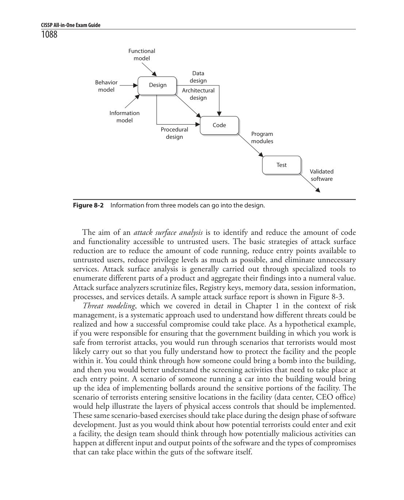
Figure 8-2Information from three models can go into the design.
The aim of anattack surface analysisis to identify and reduce the amount of code and functionality accessible to untrusted users. The basic strategies of attack surface reduction are to reduce the amount of code running, reduce entry points available to untrusted users, reduce privilege levels as much as possible, and eliminate unnecessary services. Attack surface analysis is generally carried out through specialized tools to enumerate different parts of a product and aggregate their findings into a numeral value. Attack surface analyzers scrutinize files, Registry keys, memory data, session information, processes, and services details. A sample attack surface report is shown in Figure 8-3. Threat modeling, which we covered in detail in Chapter 1 in the context of risk management, is a systematic approach used to understand how different threats could be realized and how a successful compromise could take place. As a hypothetical example, if you were responsible for ensuring that the government building in which you work is safe from terrorist attacks, you would run through scenarios that terrorists would most likely carry out so that you fully understand how to protect the facility and the people within it. You could think through how someone could bring a bomb into the building, and then you would better understand the screening activities that need to take place at each entry point. A scenario of someone running a car into the building would bring up the idea of implementing bollards around the sensitive portions of the facility. The scenario of terrorists entering sensitive locations in the facility (data center, CEO office) would help illustrate the layers of physical access controls that should be implemented. These same scenario-based exercises should take place during the design phase of software development. Just as you would think about how potential terrorists could enter and exit a facility, the design team should think through how potentially malicious activities can happen at different input and output points of the software and the types of compromises that can take place within the guts of the software itself.
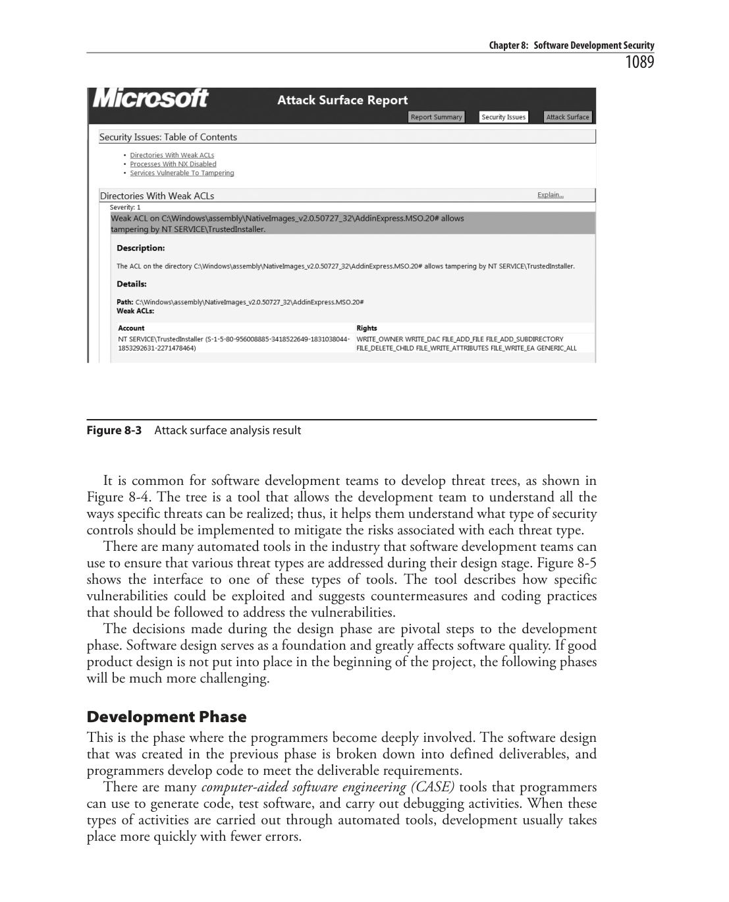
Figure 8-3Attack surface analysis result
It is common for software development teams to develop threat trees, as shown in Figure 8-4. The tree is a tool that allows the development team to understand all the ways specific threats can be realized; thus, it helps them understand what type of security controls should be implemented to mitigate the risks associated with each threat type. There are many automated tools in the industry that software development teams can use to ensure that various threat types are addressed during their design stage. Figure 8-5 shows the interface to one of these types of tools. The tool describes how specific vulnerabilities could be exploited and suggests countermeasures and coding practices that should be followed to address the vulnerabilities. The decisions made during the design phase are pivotal steps to the development phase. Software design serves as a foundation and greatly affects software quality. If good product design is not put into place in the beginning of the project, the following phases will be much more challenging.
Development Phase
This is the phase where the programmers become deeply involved. The software design that was created in the previous phase is broken down into defined deliverables, and programmers develop code to meet the deliverable requirements. There are manycomputer-aided software engineering (CASE)tools that programmers can use to generate code, test software, and carry out debugging activities. When these types of activities are carried out through automated tools, development usually takes place more quickly with fewer errors.
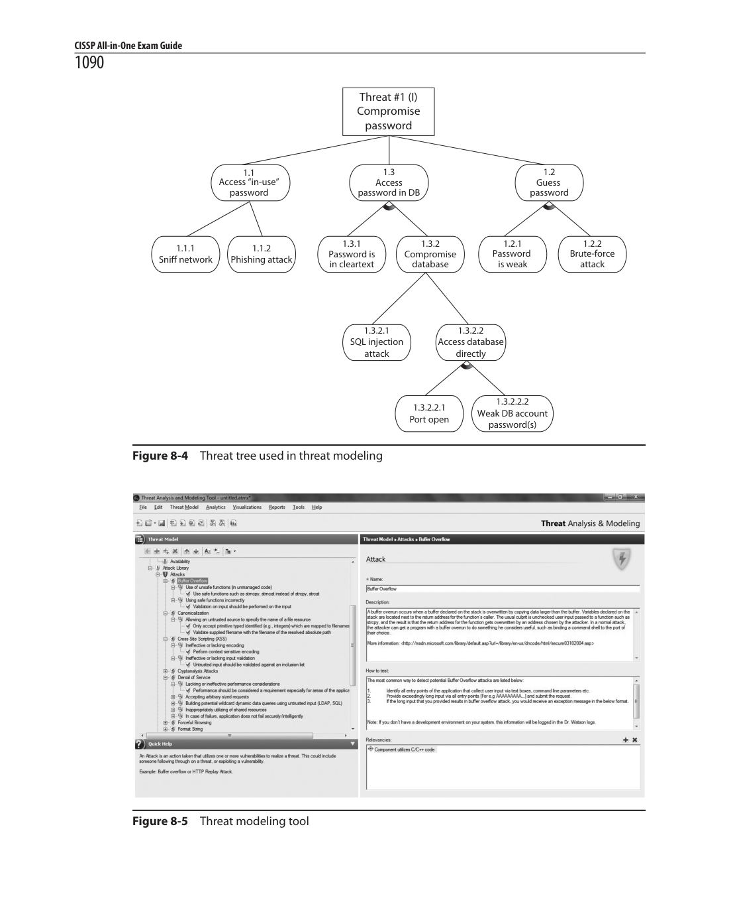
Figure 8-4Threat tree used in threat modeling
CASE refers to any type of software tool that allows for the automated development of software, which can come in the form of program editors, debuggers, code analyzers, version-control mechanisms, and more. These tools aid in keeping detailed records of requirements, design steps, programming activities, and testing. A CASE tool is aimed at supporting one or more software engineering tasks in the process of developing software. Many vendors can get their products to the market faster because they are “computer aided.” In later sections we will cover different software development models and the programming languages that can be used to create software. At this point let’s take a quick peek into the abyss of “secure coding.” As stated previously, most vulnerabilities that corporations, organizations, and individuals have to worry about reside within the programming code itself. When programmers do not follow strict and secure methods of creating programming code, the effects can be widespread and the results can be devastating. But programming securely is not an easy task. The list of errors that can lead to serious vulnerabilities in software is long. To illustrate, the MITRE organization’s Common Weakness Enumeration (CWE) initiative, which it describes as “A Community-Developed Dictionary of Software Weakness Types,” collaborates with the SANS Institute to maintain a list of the top most dangerous software errors. Figure 8-6 shows the most recent CWE/SANS Top 25 Most Dangerous Software Errors
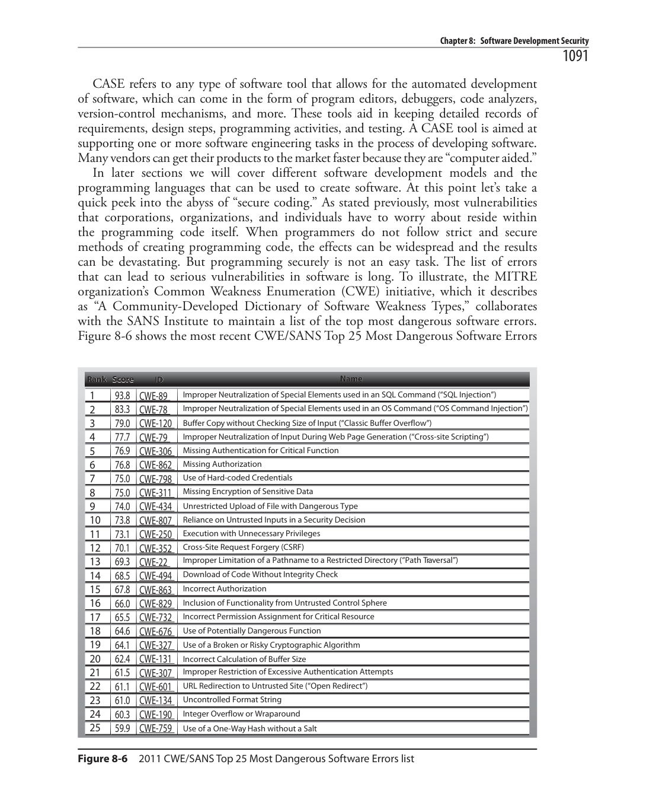
193.8
list, which can be found at http://cwe.mitre.org/top25/#Listing. Although this was last updated in 2011, sadly, it is as relevant today as it was back then. Many of these software issues are directly related to improper or faulty programming practices. Among other issues to address, the programmers need to check input lengths so buffer overflows cannot take place, inspect code to prevent the presence of covert channels, check for proper data types, make sure checkpoints cannot be bypassed by users, verify syntax, and verify checksums. Different attack scenarios should be played out to see how the code could be attacked or modified in an unauthorized fashion. Code reviews and debugging should be carried out by peer developers, and everything should be clearly documented. A particularly important area of scrutiny is input validation. Though we discuss it in detail later in this chapter, it is worthwhile pointing out that improper validation of inputs leads to serious vulnerabilities. A buffer overflow is a classic example of a technique that can be used to exploit improper input validation. Abuffer overflow(which is described in detail in Chapter 3) takes place when too much data is accepted as input to a specific process. The process’ memory buffer can be overflowed by shoving arbitrary data into various memory segments and inserting a carefully crafted set of malicious instructions at a specific memory address. Buffer overflows can also lead to illicit escalation of privileges.Privilege escalationis the process of exploiting a process or configuration setting in order to gain access to resources that would normally not be available to the process or its user. For example, an attacker can compromise a regular user account and escalate its privileges in order to gain administrator or even system privileges on that computer. This type of attack usually exploits the complex interactions of user processes with device drivers and the underlying operating system. A combination of input validation and configuring the system to run with least privilege can help mitigate the threat of escalation of privileges. Some of the most common errors (buffer overflow, injection, parameter validation) are covered later in this chapter along with organizations that provide secure software development guidelines (OWASP, DHS, MITRE). At this point we are still marching through the software development life-cycle phases, so we want to keep our focus. What is important to understand is that secure coding practices need to be integrated into the development phase of SDLC. Security has to be addressed at each phase of SDLC, with this phase being one of the most critical.
Static Analysis
Static analysisis a technique meant to help identify software defects or security policy violations and is carried out by examining the code without executing the program, and therefore is carried out before the program is compiled. The term static analysis is generally reserved for automated tools that assist analysts and developers, whereas manual inspection by humans is generally referred to as code review. Static analysis allows developers to quickly scavenge their source code for programming flaws and vulnerabilities. Additionally, static analysis provides a
scalable method of security code review and ensures that secure coding policies are being followed. There are numerous manifestations of static analysis tools, ranging from tools that simply consider the behavior of single statements to tools that analyze the entire source code at once. However, it must be remembered that static code analysis can never reveal logical errors and design flaws, and therefore must be used in conjunction with manual code review to ensure thorough evaluation.
Testing/Validation Phase
Formal and informal testing should begin as soon as possible.Unit testingis concerned with ensuring the quality of individual code modules or classes. Mature developers will develop the unit tests for their modules before they even start coding, or at least in parallel with the coding. This approach is known astest-driven developmentand tends to result in much higher-quality code with significantly fewer vulnerabilities. Unit tests are meant to simulate a range of inputs to which the code may be exposed. These inputs range from the mundanely expected, to the accidentally unfortunate, to the intentionally malicious. The idea is to ensure the code always behaves in an expected and secure manner. Once a module and its unit tests are finished, the unit tests are run (usually in an automated framework) on that code. The goal of this type of testing is to isolate each part of the software and show that the individual parts are correct. Unit testing usually continues throughout the development phase. A totally different group of people should carry out the formal testing. This is an example of separation of duties. A programmer should not develop, test, and release software. The more eyes that see the code, the greater the chance that flaws will be found before the product is released. No cookie-cutter recipe exists for security testing because the applications and products can be so diverse in functionality and security objectives. It is important to map security risks to test cases and code. Linear thinking can be followed by identifying a vulnerability, providing the necessary test scenario, performing the test, and reviewing the code for how it deals with such a vulnerability. At this phase, tests are conducted in an environment that should mirror the production environment to ensure the code does not work only in the labs. Security attacks and penetration tests usually take place during this phase to identify any missed vulnerabilities. Functionality, performance, and penetration resistance are evaluated. All the necessary functionality required of the product should be in a checklist to ensure each function is accounted for. Security tests should be run to test against the vulnerabilities identified earlier within the project. Buffer overflows should be attempted, interfaces should be hit with unexpected inputs, denial of service (DoS) situations should be tested, unusual user activity should take place, and if a system crashes, the product should react by reverting to a secure state. The product should be tested in various environments with different applications, configurations, and hardware platforms. A product may respond fine when installed on a clean Windows 10 installation on a stand-alone PC, but it may throw
unexpected errors when installed on a laptop that is remotely connected to a network and has a virtual private network (VPN) client installed.
Separation of Duties
Different environmental types (development, testing, and production) should be properly separated, and functionality and operations should not overlap. Developers should not have access to modify code used in production. The code should be tested, submitted to a library, and then sent to the production environment.
Testing Types
There are different types of tests the software should go through because there are different potential flaws the team should be looking for. The following are some of the most common testing approaches:
Unit testingTesting individual components in a controlled environment where
- programmers validate data structure, logic, and boundary conditions
Integration testingVerifying that components work together as outlined in
- design specifications
Acceptance testingEnsuring that the code meets customer requirements
- Regression testingAfter a change to a system takes place, retesting to ensure
- functionality, performance, and protection
Awell-roundedsecuritytestencompassesbothmanualandautomatictests. Automated tests help locate a wide range of flaws generally associated with careless or erroneous code implementations. Some automated testing environments run specific inputs in a scripted and repeatable manner. While these tests are the bread and butter of software testing, we sometimes want to simulate random and unpredictable inputs to supplement the scripted tests. A commonly used approach is to use programs known as fuzzers. Fuzzers use complex input to impair program execution.Fuzzingis a technique used to discover flaws and vulnerabilities in software by sending large amounts of malformed, unexpected, or random data to the target program in order to trigger failures. Attackers can then manipulate these errors and flaws to inject their own code into the system and compromise its security and stability. Fuzzing tools are commonly successful at identifying buffer overflows, DoS vulnerabilities, injection weaknesses, validation flaws, and other activities that can cause software to freeze, crash, or throw unexpected errors. A manual test is used to analyze aspects of the program that require human intuition and can usually be judged using computing techniques. Testers also try to locate design
flaws. These include logical errors, where attackers may manipulate program flow by using shrewdly crafted program sequences to access greater privileges or bypass authentication mechanisms. Manual testing involves code auditing by security-centric programmers who try to modify the logical program structure using rogue inputs and reverse-engineering techniques. Manual tests simulate the live scenarios involved in realworld attacks. Some manual testing also involves the use of social engineering to analyze the human weakness that may lead to system compromise. Dynamic analysisrefers to the evaluation of a program in real time, when it is running. Dynamic analysis is commonly carried out once a program has cleared the static analysis stage and basic programming flaws have been rectified offline. It enables developers to trace subtle logical errors in the software that are likely to cause security mayhem later on. The primary advantage of this technique is that it eliminates the need to create artificial error-inducing scenarios. Dynamic analysis is also effective for compatibility testing, detecting memory leakages, and identifying dependencies, and for analyzing software without having to access the software’s actual source code. At this stage, issues found in testing procedures are relayed to the development team in problem reports. The problems are fixed and programs retested. This is a continual process until everyone is satisfied that the product is ready for production. If there is a specific customer, the customer would run through a range of tests before formally accepting the product; if it is a generic product, beta testing can be carried out by various potential customers and agencies. Then the product is formally released to the market or customer.
Sometimes developers enter lines of code in a product that will allow them to do a few keystrokes and get right into the application. This allows them to bypass any security and access controls so they can quickly access the application’s core components. This is referred to as a “back door” or “maintenance hook” and must be removed before the code goes into production.
Release/Maintenance Phase
Once the software code is developed and properly tested, it is released so that it can be implemented within the intended production environment. The software development team’s role is not finished at this point. Newly discovered problems and vulnerabilities are commonly identified. For example, if a company developed a customized application for a specific customer, the customer could run into unforeseen issues when rolling out the product within their various networked environments. Interoperability issues might come to the surface, or some configurations may break critical functionality. The developers would need to make the necessary changes to the code, retest the code, and re-release the code.
Verification vs. Validation
Verificationdetermines if the product accurately represents and meets the specifications. After all, a product can be developed that does not match the original specifications, so this step ensures the specifications are being properly met. It answers the question: Did we build the product right? Validationdetermines if the product provides the necessary solution for the intended real-world problem. In large projects, it is easy to lose sight of the overall goal. This exercise ensures that the main goal of the project is met. It answers the question: Did we build the right product?
From a security point of view, new vulnerabilities are discovered almost daily. While the developers may have carried out extensive security testing, it is close to impossible to identify all the security issues at one point and time. Zero-day vulnerabilities may be identified, coding errors may be uncovered, or the integration of the software with another piece of software may uncover security issues that have to be addressed. The development team must develop patches, hotfixes, and new releases to address these items.
Zero-day vulnerabilitiesare vulnerabilities that do not currently have a resolution. If a vulnerability is identified and there is not a pre-established fix (patch, configuration, update), it is considered a zero day.
SDLC and Security
The main phases of a software development life cycle are shown here with some specific security tasks.
Requirements gathering: Security risk assessment
- Privacy risk assessment
- Risk-level acceptance
- Informational, functional, and behavioral requirements
- Design:
Attack surface analysis
- Threat modeling
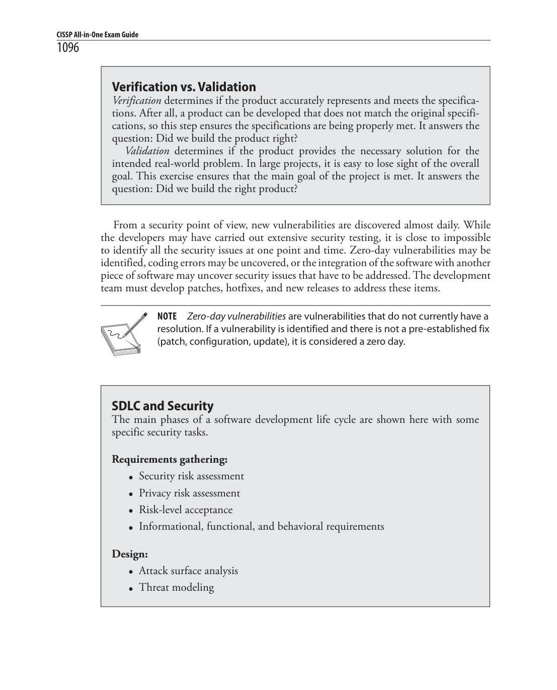
Diagram (p. 1130)
Development: Automated CASE tools
- Static analysis
- Testing/validation:
Dynamic analysis
- Fuzzing
- Manual testing
- Unit, integration, acceptance, and regression testing
- Release/maintenance:
Final security review
Secure Software Development Best Practices
TheOpen Web Application Security Project (OWASP)is an organization that deals specifically with web security issues. Along with a long list of tools, articles, and resources that developers can exploit to create secure software, OWASP also has individual member meetings (chapters) throughout the world. The group provides development guidelines, testing procedures, and code review steps, but is probably best known for its OWASP Top 10 list of web application security risks that it maintains. The following is the most recent Top 10 list as of this writing, from 2013:
A1: Injection
- A2: Broken Authentication and Session Management
- A3: Cross-Site Scripting (XSS)
- A4: Insecure Direct Object References
- A5: Security Misconfiguration
- A6: Sensitive Data Exposure
- A7: Missing Function Level Access Controls
- A8: Cross-Site Request Forgery (CSRF)
- A9: Using Components with Known Vulnerabilities
- A10: Unvalidated Redirects and Forwards
- This list represents the most common vulnerabilities that reside in web-based software and are exploited most often. You can find out more information pertaining to these vulnerabilities at https://www.owasp.org/index.php/Top_10_2013-Top_10.
The U.S. Department of Homeland Security (DHS) also provides best practices, tools, guidelines, rules, principles, and other resources that software developers, architects, and security practitioners can use to build security into software in every phase of its development. This DHS initiative is calledBuild Security In (BSI), and as with the other mentioned organizations, it is a collaborative effort that allows many entities across the industry to participate and provide useful material. DHS has a Software Assurance Program that maintains BSI. This program’s mission statement is as follows:
The Department of Homeland Security’s Software Assurance Program seeks to reduce software vulnerabilities, minimize exploitation, and address ways to improve the routine development and deployment of trustworthy software products. Together, these activities will enable more secure and reliable software that supports mission requirements across enterprises and the critical infrastructure. Because software is essential to the operation of the Nation’s critical infrastructure and it is estimated that 90 percent of reported security incidents result from exploits against defects in the design or code of software, ensuring the integrity of software is key to protecting the infrastructure from threats and vulnerabilities, and reducing overall risk to cyber attacks.
BSI provides a process-agnostic approach that deals with requirements, architecture and design, code, test, system, management, and fundamentals. This effort is tightly coupled with The MITRE organization’s CWE initiative, introduced earlier in the “Development Phase” section. As always seems to be the case in the technology world, we exist without standards and best practices for many years and just develop technology as the needs and desires arise. We create things in an ad hoc manner with no great overall vision of how they will integrate or interoperate. Once we create a whole bunch of things in this crazy manner, the industry has a collective thought of, “Hey, we should carry out these activities in a structured and controlled manner.” Then we have several organizations that come up with very similar standards and best practices to meet this void. Then we have too many standards and guidelines, and as the years march by the best ones usually prove their worth and the others fade in existence. So along with the other organizations who have created software development standards, we also have the ISO/IEC, which was covered in Chapter 1. TheISO/IEC 27034standard covers the following areas: application security overview and concepts, organization normative framework, application security management process, protocols and application security control data structure, case studies, and application security assurance prediction. It is part of the ISO/IEC 27000 series, which facilitates aligning the secure software development processes with ISO/IEC’s information security management system (ISMS) model.
Software Development Models
Several software development models have been emerged over the past 20 or so years. Each model has its own characteristics, pros, cons, SDLC phases, and best use-case scenarios. While some models include security issues in certain phases, these are not considered “security-centric development models.” These are classical approaches to building
and developing software. A brief discussion of some of the models that have been used over the years is presented next.
It is exceptionally rare to see a development methodology used in its pure form in the real world. Instead, organizations will start with a base methodology and modify it to suit their own unique environment. For purposes of the CISSP exam, however, you should focus on what differentiates each development approach.
Build and Fix Model
Basically, no architecture design is carried out in theBuild and Fix model; instead, development takes place immediately with little or no planning involved. Problems are dealt with as they occur, which is usually after the software product is released to the customer. This is not really a formal SDLC model, since SDLC is hardly involved, but it has been a common approach by many vendors over the years. There are no formal feedback mechanisms to allow for development improvements; instead, bug fixes, service packs, and upgrades are developed as soon as possible and released to the customer for “damage control.” This is not a proactive method of ensuring quality, but a reactive way of dealing with problems as they come up. There is no way to properly assess progress, quality, or risks, and many times identified issues require a major design overhaul since things were not properly thought through and planned in the beginning. While this approach gets the software product out of the door as soon as possible, the costs involved with addressing issues after the product is released will, in all likelihood, continue to increase.
Waterfall Model
TheWaterfall modeluses a linear-sequential life-cycle approach, illustrated in Figure 8-7. Each phase must be completed in its entirety before the next phase can begin. At the end of each phase, a review takes place to make sure the project is on the correct path and should continue. In this model all requirements are gathered in the initial phase and there is no formal way to integrate changes as more information becomes available or requirements change. It is hard to know everything at the beginning of a project, so waiting until the whole project is complete to integrate necessary changes can be ineffective and time consuming. As an analogy, let’s say that you are planning to landscape your backyard that is one acre in size. In this scenario, you can only go to the gardening store one time to get all of your supplies. If you identify that you need more topsoil, rocks, or pipe for the sprinkler system, you have to wait and complete the whole yard before you can return to the store for extra or more suitable supplies. This is a very rigid approach that could be useful for smaller projects that have all of the requirements fully understood, but it is a dangerous model for complex projects, which commonly contain many variables that affect the scope as the project continues.
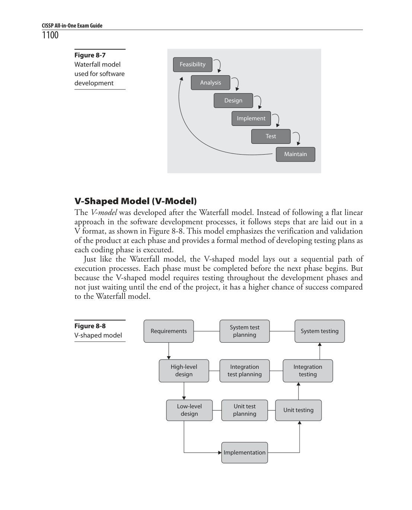
Figure 8-7
V-Shaped Model (V-Model)
TheV-modelwas developed after the Waterfall model. Instead of following a flat linear approach in the software development processes, it follows steps that are laid out in a V format, as shown in Figure 8-8. This model emphasizes the verification and validation of the product at each phase and provides a formal method of developing testing plans as each coding phase is executed. Just like the Waterfall model, the V-shaped model lays out a sequential path of execution processes. Each phase must be completed before the next phase begins. But because the V-shaped model requires testing throughout the development phases and not just waiting until the end of the project, it has a higher chance of success compared to the Waterfall model.
The V-shaped model is still very rigid, as is the Waterfall model. This level of rigidness does not allow for much flexibility; thus, adapting to changes is more difficult and expensive. This model does not allow for the handling of events concurrently, it does not integrate iterations of phases, and it does not contain risk analysis activities as later models do. This model is best used when all requirements can be understood up front and potential scope changes are small.
Prototyping
Aprototypeis a sample of software code or a model that can be developed to explore a specific approach to a problem before investing expensive time and resources. A team can identify the usability and design problems while working with a prototype and adjust their approach as necessary. Within the software development industry three main prototype models have been invented and used. These are the rapid prototype, evolutionary prototype, and operational prototype. Rapid prototypingis an approach that allows the development team to quickly create a prototype (sample) to test the validity of the current understanding of the project requirements. In a software development project, the team could quickly develop a prototype to see if their ideas are feasible and if they should move forward with their current solution. The rapid prototype approach (also called throwaway) is a “quick and dirty” method of creating a piece of code and seeing if everyone is on the right path or if another solution should be developed. The rapid prototype is not developed to be built upon, but to be discarded after serving its purposes. Whenevolutionary prototypesare developed, they are built with the goal of incremental improvement. Instead of being discarded after being developed, as in the rapid prototype approach, the prototype in this model is continually improved upon until it reaches the final product stage. Feedback that is gained through each development phase is used to improve the prototype and get closer to accomplishing the customer’s needs. Theoperational prototypesare an extension of the evolutionary prototype method. Both models (operational and evolutionary) improve the quality of the prototype as more data is gathered, but the operational prototype is designed to be implemented within a production environment as it is being tweaked. The operational prototype is updated as customer feedback is gathered, and the changes to the software happen within the working site. So the rapid prototype is developed to give a quick understanding of the suggested solution, the evolutionary prototype is created and improved upon within a lab environment, and an operational prototype is developed and improved upon within a production environment.
Incremental Model
If a development team follows theIncremental model, this allows them to carry out multiple development cycles on a piece of software throughout its development stages. This would be similar to “multi-Waterfall” cycles taking place on one piece of software as it matures through the development stages. A version of the software is created in the first
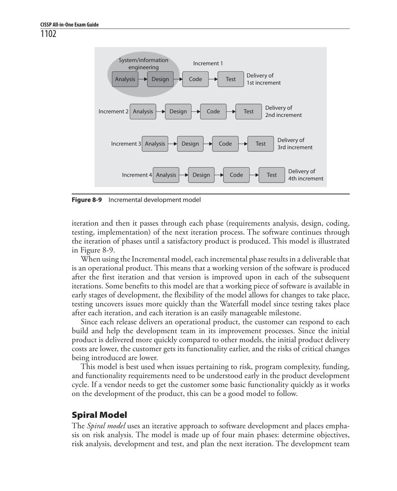
Figure 8-9Incremental development model
iteration and then it passes through each phase (requirements analysis, design, coding, testing, implementation) of the next iteration process. The software continues through the iteration of phases until a satisfactory product is produced. This model is illustrated in Figure 8-9. When using the Incremental model, each incremental phase results in a deliverable that is an operational product. This means that a working version of the software is produced after the first iteration and that version is improved upon in each of the subsequent iterations. Some benefits to this model are that a working piece of software is available in early stages of development, the flexibility of the model allows for changes to take place, testing uncovers issues more quickly than the Waterfall model since testing takes place after each iteration, and each iteration is an easily manageable milestone. Since each release delivers an operational product, the customer can respond to each build and help the development team in its improvement processes. Since the initial product is delivered more quickly compared to other models, the initial product delivery costs are lower, the customer gets its functionality earlier, and the risks of critical changes being introduced are lower. This model is best used when issues pertaining to risk, program complexity, funding, and functionality requirements need to be understood early in the product development cycle. If a vendor needs to get the customer some basic functionality quickly as it works on the development of the product, this can be a good model to follow.
Spiral Model
TheSpiral modeluses an iterative approach to software development and places emphasis on risk analysis. The model is made up of four main phases: determine objectives, risk analysis, development and test, and plan the next iteration. The development team
starts with the initial requirements and goes through each of these phases, as shown in Figure 8-10. Think about starting a software development project at the center of this graphic. You have your initial understanding and requirements of the project, develop specifications that map to these requirements, carry out a risk analysis, build prototype specifications, test your specifications, build a development plan, integrate newly discovered information, use the new information to carry out a new risk analysis, create a prototype, test the prototype, integrate resulting data into the process, etc. As you gather more information about the project, you integrate it into the risk analysis process, improve your prototype, test the prototype, and add more granularity to each step until you have a completed product. The iterative approach provided by the Spiral model allows new requirements to be addressed as they are uncovered. Each prototype allows for testing to take place early in the development project, and feedback based upon these tests is integrated into the following iteration of steps. The risk analysis ensures that all issues are actively reviewed and analyzed so that things do not “slip through the cracks” and the project stays on track.
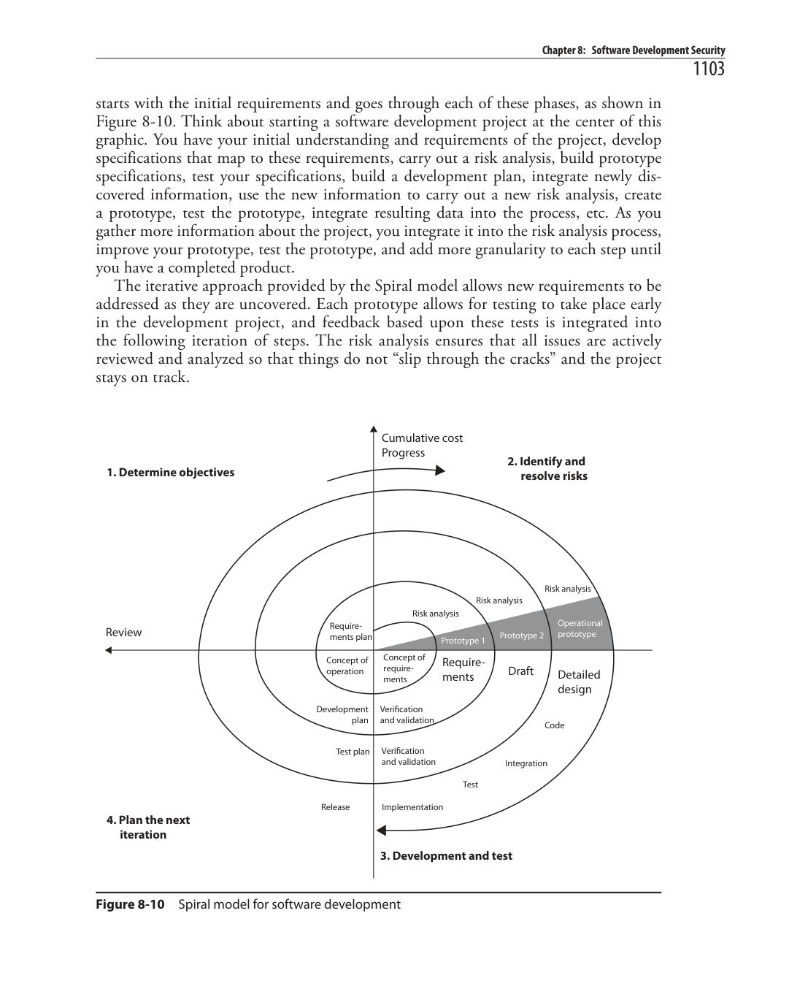
Figure 8-10Spiral model for software development
In the Spiral model the last phase allows the customer to evaluate the product in its current state and provide feedback, which is an input value for the next spiral of activity. This is a good model for complex projects that have fluid requirements.
Within this model the angular aspect represents progress and the radius of the spirals represents cost.
Rapid Application Development
TheRapid Application Development (RAD)model relies more on the use of rapid prototyping than on extensive upfront planning. In this model, the planning of how to improve the software is interleaved with the processes of developing the software, which allows for software to be developed quickly. The delivery of a workable piece of software can take place in less than half the time compared to the Waterfall model. The RAD model combines the use of prototyping and iterative development procedures with the goal of accelerating the software development process. The development process begins with creating data models and business process models to help define what the end-result software needs to accomplish. Through the use of prototyping, these data and process models are refined. These models provide input to allow for the improvement of the prototype, and the testing and evaluation of the prototype allow for the improvement of the data and process models. The goal of these steps is to combine business requirements and technical design statements, which provide the direction in the software development project. Figure 8-11 illustrates the basic differences between traditional software development approaches and RAD. As an analogy, let’s say that the development team needs you to tell them what it is you want so that they can build it for you. You tell them that the thing you want has four wheels and an engine. They draw a picture of a two-seat convertible on a piece of paper and ask, “Is this what you want?” You say no, so they throw away that piece of paper (prototype). They ask for more information from you, and you tell them the thing must be able to seat four adults. They draw a picture of a four-seat convertible and show it to you and you tell them they are getting closer, but are still wrong. They throw away that piece of paper, and you tell them the thing must have four doors. They draw a picture of a sedan, and you nod your head in agreement. That back and forth is what is taking place in the circle portion of Figure 8-11. The main reason that the RAD model was developed was that by the time software was completely developed following other models, the requirements changed and the developers had to “go back to the drawing board.” If a customer needs you to develop a software product and it takes you a year to do so, by the end of that year the customer’s needs for the software have probably advanced and changed. The RAD model allows for the customer to be involved during the development phases so that the end result maps to their needs in a more realistic manner.
S NT
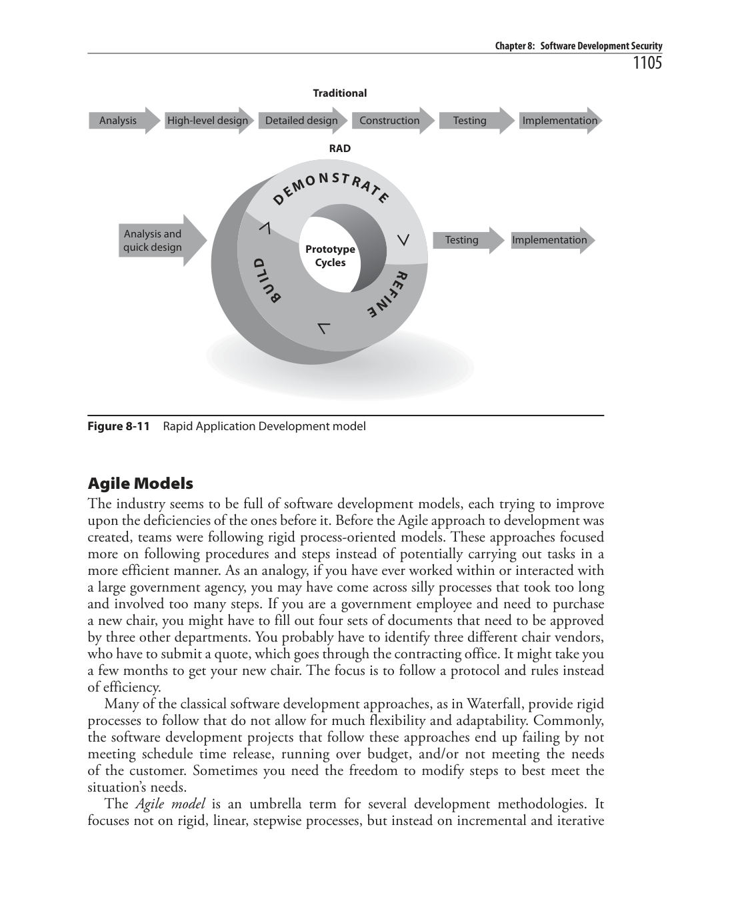
R
Agile Models
The industry seems to be full of software development models, each trying to improve upon the deficiencies of the ones before it. Before the Agile approach to development was created, teams were following rigid process-oriented models. These approaches focused more on following procedures and steps instead of potentially carrying out tasks in a more efficient manner. As an analogy, if you have ever worked within or interacted with a large government agency, you may have come across silly processes that took too long and involved too many steps. If you are a government employee and need to purchase a new chair, you might have to fill out four sets of documents that need to be approved by three other departments. You probably have to identify three different chair vendors, who have to submit a quote, which goes through the contracting office. It might take you a few months to get your new chair. The focus is to follow a protocol and rules instead of efficiency. Many of the classical software development approaches, as in Waterfall, provide rigid processes to follow that do not allow for much flexibility and adaptability. Commonly, the software development projects that follow these approaches end up failing by not meeting schedule time release, running over budget, and/or not meeting the needs of the customer. Sometimes you need the freedom to modify steps to best meet the situation’s needs. TheAgile modelis an umbrella term for several development methodologies. It focuses not on rigid, linear, stepwise processes, but instead on incremental and iterative
development methods that promote cross-functional teamwork and continuous feedback mechanisms. This model is considered “lightweight” compared to the traditional methods that are “heavyweight,” which just means this model is not confined to a tunneled vision and overly structured approach. It is nimble and flexible enough to adapt to each project’s needs. The industry found out that even an exhaustive library of defined processes cannot handle every situation that could arise during a development project. So instead of investing time and resources into big upfront design analysis, this model focuses on small increments of functional code that are created based upon business need. The model focuses on individual interaction instead of processes and tools. It emphasizes developing the right software product over comprehensive and laborious documentation. It promotes customer collaboration instead of contract negotiation, and abilities to respond to change instead of strictly following a plan. A notable element of many Agile methodologies is their focus on user stories. A user storyis a sentence that describes what a user wants to do and why. For instance, a user story could be “As a customer, I want to search for products so that I can buy some.” Notice the structure of the story is: As a <user role>, I want to <accomplish some goal> so that <reason for accomplishing the goal>. This method of documenting user requirements is very familiar to the customers and enables their close collaboration with the development team. Furthermore, by keeping this user focus, validation of the features is simpler because the “right system” is described up front by the users in their own words.
The Agile models do not use prototypes to represent the full product, but break the product down into individual features that are constantly being delivered. Another important characteristic of the Agile model is that the development team can take pieces and parts of all of the available SDLC methods and combine them in a manner that best meets the specific project needs. These various combinations have resulted in many methodologies that fall under the Agile model.
Scrum
Scrum is one of the most widely adopted agile methodologies in use today. It lends itself to projects of any size and complexity and is very lean and customer focused. Scrum is a methodology that acknowledges the fact that customer needs cannot be completely understood and will change over time. It focuses on team collaboration, customer involvement, and continuous delivery. The termscrumoriginates from the sport of rugby. Whenever something interrupts play (e.g., a penalty or the ball goes out of bounds) and the game needs to be restarted, all players come together in an organized mob that is resolved when one team or the other gains possession of the ball, allowing the game to continue. Extending this analogy, the Scrum methodology allows the project to be reset by allowing product features to be added, changed, or removed at clearly defined points. Since the customer is intimately involved in the development process, there should be no surprises, cost overruns, or
schedule delays. This allows a product to be iteratively developed and changed even as it is being built. The change points happen at the conclusion of eachsprint, a fixed-duration development interval that is usually (but not always) two weeks in length and promises delivery of a very specific set of features. These features are chosen by the team, but with a lot of input from the customer. There is a process for adding features at any time by inserting them in the feature backlog. However, these features can be considered for actual work only at the beginning of a new sprint. This shields the development team from changes during a sprint, but allows for them in between sprints.
Extreme Programming
If you take away the regularity of Scrum’s sprints and backlogs and add a lot of code reviewing, you get our next agile model. Extreme Programming (XP) is a development methodology that takes code reviews (discussed in Chapter 6) to the extreme (hence the name) by having them take place continuously. These continuous reviews are accomplished using an approach calledpair programming, in which one programmer dictates the code to her partner, who then types it. While this may seem inefficient, it allows two pairs of eyes to constantly examine the code as it is being typed. It turns out that this approach significantly reduces the incidence of errors and improves the overall quality of the code. Another characteristic of XP is its reliance on test-driven development, in which the unit tests are written before the code. The programmer first writes a new unit test case, which of course fails because there is no code to satisfy it. The next step is to add just enough code to get the test to pass. Once this is done, the next test is written, which fails, and so on. The consequence is that only the minimal amount of code needed to pass the tests is developed. This extremely minimal approach reduces the incidence of errors because it weeds out complexity.
Kanban
Kanban is a production scheduling system developed by Toyota to more efficiently support just-in-time delivery. Over time, it was adopted by IT and software systems developers. In this context, theKanbandevelopment methodology is one that stresses visual tracking of all tasks so that the team knows what to prioritize at what point in time in order to deliver the right features right on time. Kanban projects used to be very noticeable because entire walls in conference rooms would be covered in sticky notes representing the various tasks that the team was tracking. Nowadays, many Kanban teams opt for virtual walls on online systems. The Kanban wall is usually divided vertically by production phase. Typical columns are labeled Planned, In Progress, and Done. Each sticky note can represent a user story as it moves through the development process, but more importantly, the sticky note can also be some other work that needs to be accomplished. For instance, suppose that one of the user stories is the search feature described earlier in this section. While it is being developed, the team realizes that the searches are very slow. This could result in a task being added to change the underlying data or network architecture or to upgrade hardware. This sticky note then gets added to the Planned column and starts being prioritized
and tracked together with the rest of the remaining tasks. This process highlights how Kanban allows the project team to react to changing or unknown requirements, which is a common feature among all Agile models.
Review of Development Methodologies
A quick review of the various models we have covered up to this point is providedhere:
Break and FixNo real planning up front. Flaws are reactively dealt with
- after release with the creation of patches and updates.
WaterfallVery rigid, sequential approach that requires each phase to
- complete before the next one can begin. Difficult to integrate changes. Inflexible model.
V-modelEmphasizes verification and validation at each phase and testing
- to take place throughout the project, not just at the end.
PrototypingCreating a sample or model of the code for proof-of-concept
- purposes.
IncrementalMultiple development cycles are carried out on a piece of
- software throughout its development stages. Each phase provides a usable version of software.
SpiralIterative approach that emphasizes risk analysis per iteration.
- Allows for customer feedback to be integrated through a flexible evolutionary approach.
Rapid Application DevelopmentCombines prototyping and iterative
- development procedures with the goal of accelerating the software development process.
AgileIterative and incremental development processes that encourage
- team-based collaboration. Flexibility and adaptability are used instead of a strict process structure.
Other Models
There seems to be no shortage of SDLC and software development models in the industry. The following is a quick summary of a few others that can also be used:
Exploratory modelA method that is used in instances where clearly defined
- project objectives have not been presented. Instead of focusing on explicit tasks, the exploratory model relies on covering a set of specifications likely to affect the final product’s functionality. Testing is an important part of exploratory development, as it ascertains that the current phase of the project is compliant with likely implementation scenarios.
Joint Application Development (JAD)A method that uses a team approach
- in application development in a workshop-oriented environment. This model is distinguished by its inclusion of members other than coders in the team. It is common to find executive sponsors, subject matter experts, and end users spending hours or days in collaborative development workshops.
Reuse modelA model that approaches software development by using
- progressively developed models. Reusable programs are evolved by gradually modifying pre-existing prototypes to customer specifications. Since the reuse model does not require programs to be built from scratch, it drastically reduces both development cost and time.
CleanroomAn approach that attempts to prevent errors or mistakes by
- following structured and formal methods of developing and testing. This approach is used for high-quality and mission-critical applications that will be put through a strict certification process.
We only covered the most commonly used models in this section, but there are many more that exist. New models have evolved as technology and research have advanced and various weaknesses of older models have been addressed. Most of the models exist to meet a specific software development need, and choosing the wrong model for a certain project could be devastating to its overall success.
Integrated Product Team
Anintegrated product team (IPT)is a multidisciplinary development team with representatives from many or all the stakeholder populations. The idea makes a lot of sense when you think about it. Why should programmers learn or guess the manner in which the accounting folks handle accounts payable? Why should testers and quality control personnel wait until a product is finished before examining it? Why should the marketing team wait until the project (or at least the prototype) is finished before determining how best to sell it? A comprehensive IPT includes business executives and end users and everyone in between. The Joint Application Development (JAD) methodology, in which users join developers during extensive workshops, works well with the IPT approach. IPTs extend this concept by ensuring that the right stakeholders are represented in every phase of the development as formal team members. In addition, whereas JAD is focused on involving the user community, IPT is typically more inward facing and focuses on bringing in the business stakeholders. An IPT is not a development methodology. Instead, it is a management technique. When project managers decide to use IPTs, they still have to select a methodology. These days, IPTs are often associated with Agile methodologies.
DevOps
Traditionally, the software development team and the IT team are two separate (and sometimes antagonistic) groups within an organization. Many problems stem from poor
collaboration between these two teams during the development process. It is not rare to have the IT team berating the developers because a feature push causes the IT team to have to stay late or work on a weekend or simply drop everything they were doing in order to “fix” something that the developers “broke.” This friction makes a lot of sense when you consider that each team is incentivized by different outcomes. Developers want to push out finished code, usually under strict schedules. The IT staff, on the other hand, wants to keep the IT infrastructure operating effectively. Many project managers who have managed software development efforts will attest to having received complaints from developers that the IT team was being unreasonable and uncooperative, while the IT team was simultaneously complaining about buggy code being tossed over the fence at them at the worst possible times and causing problems on the rest of the network. A good way to solve this friction is to have both developers and members of the operations staff (hence the term DevOps) on the software development team.DevOps is the practice of incorporating development, IT, and quality assurance (QA) staff into software development projects to align their incentives and enable frequent, efficient, and reliable releases of software products. This relationship is illustrated in Figure 8-12. Ultimately, DevOps is about changing the culture of an organization. It has a huge positive impact on security, because in addition to QA, the IT teammates will be involved at every step of the process. Multifunctional integration allows the team to identify potential defects, vulnerabilities, and friction points early enough to resolve them proactively. This is one of the biggest selling points for DevOps. According to multiple surveys, there are a few other, perhaps more powerful benefits: DevOps increases trust within an organization and increases job satisfaction among developers, IT staff, and QA personnel. Unsurprisingly, it also improves the morale of project managers.
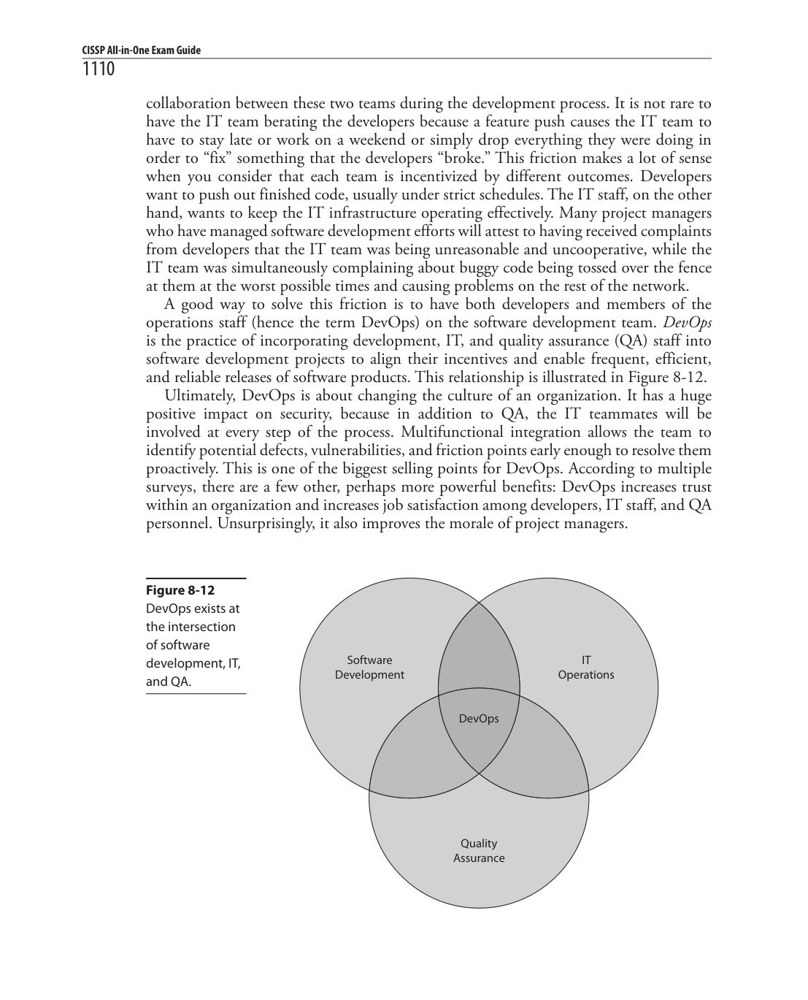
Figure 8-12
Capability Maturity Model Integration
Capability Maturity Model Integration (CMMI)is a comprehensive, integrated set of guidelines for developing products and software. It addresses the different phases of a software development life cycle, including concept definition, requirements analysis, design, development, integration, installation, operations, and maintenance, and what should happen in each phase. It can be used to evaluate security engineering practices and identify ways to improve them. It can also be used by customers in the evaluation process of a software vendor. Ideally, software vendors would use the model to help improve their processes, and customers would use the model to assess the vendors’ practices. CMMIdescribesprocedures,principles,andpracticesthatunderliesoftware development process maturity. This model was developed to help software vendors improve their development processes by providing an evolutionary path from an ad hoc “fly by the seat of your pants” approach to a more disciplined and repeatable method that improves software quality, reduces the life cycle of development, provides better project management capabilities, allows for milestones to be created and met in a timely manner, and takes a more proactive approach than the less effective reactive approach. It provides best practices to allow an organization to develop a standardized approach to software development that can be used across many different groups. The goal is to continue to review and improve upon the processes to optimize output, increase capabilities, and provide higher-quality software at a lower cost through the implementation of continuous improvement steps. If the company Stuff-R-Us wants a software development company, Software-R-Us, to develop an application for it, it can choose to buy into the sales hype about how wonderful Software-R-Us is, or it can ask Software-R-Us whether it has been evaluated against the CMMI model. Third-party companies evaluate software development companies to certify their product development processes. Many software companies have this evaluation done so they can use this as a selling point to attract new customers and provide confidence for their current customers. The five maturity levels of the CMMI model are
1.InitialDevelopment process is ad hoc or even chaotic. The company does not use effective management procedures and plans. There is no assurance of consistency, and quality is unpredictable. Success is usually the result of individual heroics. 2.RepeatableA formal management structure, change control, and quality assurance are in place. The company can properly repeat processes throughout each project. The company does not have formal process models defined. 3.DefinedFormal procedures are in place that outline and define processes carried out in each project. The organization has a way to allow for quantitative process improvement. 4.ManagedThe company has formal processes in place to collect and analyze quantitative data, and metrics are defined and fed into the processimprovementprogram.
5.OptimizingThe company has budgeted and integrated plans for continuous process improvement.
Each level builds upon the previous one. For example, a company that accomplishes a Level 5 CMMI rating must meet all the requirements outlined in Levels 1–4 along with the requirements of Level 5. If a software development vendor is using the Build and Fix model that was discussed earlier in this chapter, the vendor would most likely only achieve a CMMI Level 1, because their practices are ad hoc, not consistent, and the level of the quality that their software products contain is questionable. If this company practiced a strict Agile SDLC model consistently and carried out development, testing, and documentation precisely, they would have a higher chance of obtaining a higher CMMI level. Capability maturity models (CMMs)are used for many different purposes, software development processes being one of them. They are general models that allow for maturity-level identification and maturity improvement steps. We showed how CMM integration can be used for organizational security program improvement processes in Chapter 1. The software industry ended up with several different CMMs, which led to confusion. CMMI was developed to bring many of these different maturity models together and allow them to be used in one framework. CMMI was developed by industry experts, government entities, and the Software Engineering Institute at Carnegie Mellon University. So CMMI has replaced CMM in the software engineering world, but you
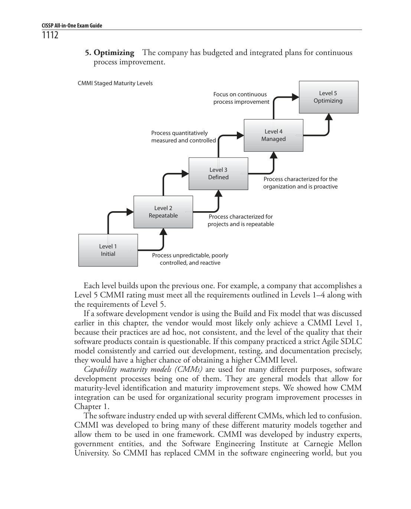
Diagram (p. 1146)
may still see CMM referred to within the industry and even on the CISSP exam. Their ultimate goals are the same, which is process improvement.
The CMMI is continually being updated and improved upon. The latest copy can be viewed at https://resources.sei.cmu.edu/library/assetview.cfm?assetID=9661.
Change Control
One of the key processes on which to focus for improvement is change control. Changes during a product’s life cycle can cause a lot of havoc if not done properly and in a controlled manner. Changes could take place for several reasons. During the development phases, a customer may alter requirements and ask that certain functionalities be added, removed, or modified. In production, changes may need to happen because of other changes in the environment, new requirements of a software product or system, or newly released patches or upgrades. These changes should be controlled to make sure they are approved, incorporated properly, and do not affect any original functionality in an adverse way.Change controlis the process of controlling the changes that take place during the life cycle of a system and documenting the necessary change control activities. A process for dealing with changes needs to be in place at the beginning of a project so everyone knows how changes are dealt with and what is expected of each entity when a change request is made. Some projects have been doomed from the start because proper change control was not put into place and enforced. Many times in development, the customer and vendor agree on the design of the product, the requirements, and the specifications. The customer is then required to sign a contract confirming this is the agreement and that if they want any further modifications, they will have to pay the vendor for that extra work. If this is not put into place, then the customer can continually request changes, which requires the development team to put in the extra hours to provide these changes, the result of which is that the vendor loses money, the product does not meet its completion deadline, and scope creep occurs. Other reasons exist to have change control in place. These reasons deal with organization, standard procedures, and expected results. If a product is in the last phase of development and a change request comes in, the team should know how to deal with it. Usually, the team leader must tell the project manager how much extra time will be required to complete the project if this change is incorporated and what steps need to be taken to ensure this change does not affect other components within the product. If these processes are not controlled, one part of a development team could implement the change without another part of the team being aware of it. This could break some of the other development team’s software pieces. When the pieces of the product are integrated and it is found that some pieces are incompatible, some jobs may be in jeopardy, because management never approved the change in the first place. The change must be approved, documented, and tested. Some tests may need to be rerun to ensure the change does not affect the product’s capabilities. When a programmer
makes a change to source code, it should be done on the test version of the code. Under no conditions should a programmer change the code that is already in production. The changes to the code should be made and tested, and then the new code should go to the librarian. Production code should come only from the librarian and not from a programmer or directly from a test environment. Change control processes should be evaluated during system audits. It is possible to overlook a problem that a change has caused in testing, so the procedures for how change control is implemented and enforced should be examined during a system audit. The following are some necessary steps for a change control process:
1.Make a formal request for a change. 2.Analyze the request. a.Develop the implementation strategy. b.Calculate the costs of this implementation. c.Review security implications. 3.Record the change request. 4.Submit the change request for approval. 5.Develop the change. a.Recode segments of the product and add or subtract functionality. b.Link these changes in the code to the formal change control request. c.Submit software for testing and quality control. d.Repeat until quality is adequate. e.Make version changes. 6.Report results to management.
The changes to systems may require another round of certification and accreditation. If the changes to a system are significant, then the functionality and level of protection may need to be reevaluated (certified), and management would have to approve the overall system, including the new changes (accreditation).
Software Configuration Management
When changes take place to a software product during its development life cycle, a configuration management system can be put into place that allows for change control processes to take place through automation. A product that providessoftware configuration management (SCM)identifies the attributes of software at various points in time, and performs a methodical control of changes for the purpose of maintaining software integrity and traceability throughout the software development life cycle. It defines the need to track changes and provides the ability to verify that the final delivered software has all of the approved changes that are supposed to be included in the release.
During a software development project, the centralized code repositories are often kept in systems that can carry out SCM functionality, which manage and track revisions made by multiple people against a single master set. These SCM systems should provide concurrency management, versioning, and synchronization. Concurrency management deals with the issues that arise when multiple people extract the same file from a central repository and make their own individual changes. If they submit their updated files in an uncontrolled manner, the files would just write over each other and changes would be lost. Many SCM systems use algorithms to version, fork, and merge the changes as files are checked back into the repository. Versioningdeals with keeping track of file revisions, which makes it possible to “roll back” to a previous version of the file. An archive copy of every file can be made when it is checked into the repository, or every change made to a file can be saved to a transaction log. Versioning systems should also create log reports of who made changes, when they were made, and what the changes were. Some SCM systems allow individuals to check out complete or partial copies of the repositories and work on the files as needed. They can then commit their changes back to the master repository as needed, and update their own personal copies to stay up to date with changes other people have made. This process is calledsynchronization.
Software Escrow
If a company pays another company to develop software for it, it should have some type ofsoftware escrowin place for protection. We covered this topic in Chapter 7 from a business continuity perspective, but since it directly deals with software development, we will mention it here also. In a software escrow framework, a third party keeps a copy of the source code, and possibly other materials, which it will release to the customer only if specific circumstances arise, mainly if the vendor who developed the code goes out of business or for some reason is not meeting its obligations and responsibilities. This procedure protects the customer, because the customer pays the vendor to develop software code for it, and if the vendor goes out of business, the customer otherwise would no longer have access to the actual code. This means the customer code could never be updated or maintained properly. A logical question would be, “Why doesn’t the vendor just hand over the source code to the customer, since the customer paid for it to be developed in the first place?” It does not always work that way. The code may be the vendor’s intellectual property. The vendor employs and pays people with the necessary skills to develop that code, and if the vendor were to just hand it over to the customer, it could be giving away its intellectual property, its secrets. The customer oftentimes gets compiled code instead of source code.Compiled codeis code that has been put through a compiler and is unreadable to humans. Most software profits are based on licensing, which outlines what customers can do with the compiled code. For an added fee, of course, most custom software developers will also provide the source, which could be useful in sensitive applications.
Security of Code Repositories
The code repository, which is typically a version control system, is the vault containing the crown jewels of any organization involved in software development. If we put on our adversarial hats for a few minutes, we could come up with all kinds of nefarious scenarios involving these repositories. Perhaps the simplest is that someone could steal our source code, which embodies not only many staff hours of work, but more significantly, our intellectual property. An adversary could also use our source code to look for vulnerabilities to exploit later, once the code is in production. Finally, adversaries could deliberately insert vulnerabilities into our software, perhaps after it has undergone all testing and is trusted, so that it can be exploited later at a time of their choosing. Clearly, securing our source code is critical. Perhaps the most secure way of managing security for your code repositories is to implement them on an isolated (or “air-gaped”) network that includes the development, test, and QA environments. The development team would have to be on this network to do their work, and the code, once verified, could be exported to the production servers using removable storage media. The challenge with this approach is that it severely limits the manner in which the development team can connect to the code. It also makes it difficult to collaborate with external parties, and for developers to work from remote or mobile locations. A pretty good alternative would be to host the repository on the intranet, which would require developers to either be on the local network or connect to it using a VPN connection. As an added layer of security, the repositories can be configured to require the use of Secure Shell (SSH), which would ensure all traffic is encrypted even inside the intranet to mitigate the risk of sniffing. Finally, SSH can be configured to use public key infrastructure (PKI), which allows us to implement not only confidentiality and integrity, but also nonrepudiation. If you have to allow remote access to your repository, this would be a good way to go about it. Finally, if you are operating on a limited budget or have limited security expertise in this area, you can choose one of the many web-based repository service providers and let them take care of the security for you. While this may mitigate the basic risks for small organizations, it is probably not an acceptable course of action for projects with significant investments of intellectual property.
Programming Languages and Concepts
All software is written in some type of programming language. Programming languages have gone through several generations over time, each generation building on the next, providing richer functionality and giving the programmers more powerful tools as theyevolve. The main categories of languages are machine language, assembly language, and high-level languages.Machine languageis in a format that the computer’s processor can understand and work with directly. Every processor family has its own machine code instruction set, as we covered in Chapter 3. Machine code is represented in a binary format (1 and 0) and is considered to be the most primitive form of programming
language and the first generation of programming languages. Machine languages were used as the sole method of programming in the early 1950s. Early computers used only basic binary instructions because compilers and interpreters were nonexistent at the time. Programmers had to manually calculate and allot memory addresses and instructions had to be sequentially fed, as there was no concept of abstraction. Not only was programming in binary extremely time consuming, it was also highly prone to errors. (If you think about writing out thousands of 1’s and 0’s to represent what you want a computer to do, this puts this approach into perspective.) This forced programmers to keep a tight rein on their program lengths, resulting in programs that were very rudimentary. Anassembly languageis considered a low-level programming language and is the symbolic representation of machine-level instructions. It is “one step above” machine language. It uses symbols (called mnemonics) to represent complicated binary codes. Programmers using assembly language could use commands like ADD, PUSH, POP, etc., instead of the binary codes (1001011010, etc.). Assembly languages use programs calledassemblers, which automatically convert these assembly codes into the necessary machine-compatible binary language. To their credit, assembly languages drastically reduced programming and debugging times, introduced the concept of variables, and freed programmers from manually calculating memory addresses. But like machine code, programming in an assembly language requires extensive knowledge of a computer’s architecture. It is easier than programming in binary format, but more challenging compared to the high-level languages most programmers use today. Programs written in assembly language are also hardware specific, so a program written for an ARM-based processor would be incompatible with Intel-based systems; thus, these types of languages are not portable.
Assembly language allows for direct control of very basic activities within a computer system, as in pushing data on a memory stack and popping data off a stack. Attackers commonly use these languages to tightly control how malicious instructions are carried out on victim systems. The third generation of programming languages started to emerge in the early 1960s. Third-generation programming languages are known ashigh-level languagesdue to their refined programming structures. High-level languages use abstract statements. Abstraction naturalized multiple assembly language instructions into a single high-level statement, e.g., the IF – THEN – ELSE. This allowed programmers to leave low-level (system architecture) intricacies to the programming language and focus on their programming objectives. In addition, high-level languages are easier to work with compared to machine and assembly languages, as their syntax is similar to human languages. The use of mathematical operators also simplified arithmetic and logical operations. This drastically reduced program development time and allowed for more simplified debugging. This means the programs are easier to write and mistakes (bugs) are easier to identify. Highlevel languages are processor independent. Code written in a high-level language can be converted to machine language for different processor architectures using compilers and interpreters. When code is independent of a specific processor type, the programs are portable and can be used on many different system types.
Fourth-generation languages (very high-level languages) were designed to further enhance the natural language approach instigated within the third-generation language. Fourth-generation languages are meant to take natural language–based statements one step further. Fourth-generation programming languages focus on highly abstract algorithms that allow straightforward programming implementation in specific environments. The most remarkable aspect of fourth-generation languages is that the amount of manual coding required to perform a specific task may be ten times less than for the same task on a third-generation language. This is especially important as these languages have been developed to be used by inexpert users and not just professional programmers. As an analogy, let’s say that you need to pass a calculus exam. You need to be very focused on memorizing the necessary formulas and applying the formulas to the correct word problems on the test. Your focus is on how calculus works, not on how the calculator you use as a tool works. If you had to understand how your calculator is moving data from one transistor to the other, how the circuitry works, and how the calculator stores and carries out its processing activities just to use it for your test, this would be overwhelming. The same is true for computer programmers. If they had to worry about how the operating system carries out memory management functions, input/output activities, and how processor-based registers are being used, it would be difficult for them to also focus on real-world problems they are trying to solve with their software. High-level languages hide all of this background complexity and take care of it for the programmer. The early 1990s saw the conception of the fifth generation of programming languages (natural languages). These languages approach programming from a completely different perspective. Program creation does not happen through defining algorithms and function statements, but rather by defining the constraints for achieving a specified result. The goal is to create software that can solve problems by itself instead of a programmer having to develop code to deal with individual and specific problems. The applications work more like a black box—a problem goes in and a solution comes out. Just as the introduction of assembly language eliminated the need for binary-based programming, the full impact of fifth-generation programming techniques may bring to an end the traditional programming approach. The ultimate target of fifth-generation languages is to eliminate the need for programming expertise and instead use advanced knowledgebased processing and artificial intelligence. The industry has not been able to fully achieve all the goals set out for these fifthgeneration languages. The human insight of programmers is still necessary to figure out the problems that need to be solved, and the restrictions of the structure of a current computer system do not allow software to “think for itself ” yet. We are getting closer to achieving artificial intelligence within our software, but we still have a long way to go. The following lists the basic software programming language generations:
Generation oneMachine language
- Generation twoAssembly language
- Generation threeHigh-level language
- Generation fourVery high-level language
- Generation fiveNatural language
Language Levels
The “higher” the language, the more abstraction that is involved.Abstractionmeans that the details of something are far away and/or hidden. A programming language that provides a high level of abstraction means that the programmer does not need to worry about the intricate details of the computer system itself, as in registers, memory addresses, complex Boolean expressions, thread management, etc. The programmer can use simple statements such as “print” and does not need to worry about how the computer will actually get the data over to the printer. Instead, the programmer can focus on the core functionality that the application is supposed to provide and not be bothered with the complex things taking place in the belly of the operating system and motherboard components. As an analogy, you do not need to understand how your engine or brakes work in your car—there is a level of abstraction. You just turn the steering wheel and step on the pedal when necessary, and you can focus on getting to your destination. There are so many different programming languages today, it is hard to fit them neatly in the five generations described in this chapter. These generations are the classical way of describing the differences in software programming approaches and what you will see on the CISSP exam.
Assemblers, Compilers, Interpreters
No matter what type or generation of programming language is used, all of the instructions and data have to end up in a binary format for the processor to understand and work with. Just like our food has to be broken down into molecules for our body to be able to process it, all code must end up in a format that is consumable for specific systems. Each programming language type goes through this transformation through the use of assemblers, compilers, or interpreters. Assemblersare tools that convert assembly language source code into machine code. Assembly language consists of mnemonics, which are incomprehensible to processors and therefore need to be translated into operation instructions. Compilersare tools that convert high-level language statements into the necessary machine-level format (.exe, .dll, etc.) for specific processors to understand. The compiler transforms instructions from a source language (high-level) to a target language (machine), which allows the code to be executable. A programmer may develop an application in the C++ language, but when you purchase this application you do not receive the source code, but you will receive the executable code that will run on your type of computer. The source code was put through a compiler, which resulted in an executable file that can run on your specific processor type. Compilers allow developers to create software code that can be developed once in a high-level language and compiled for various platforms. So you could develop one piece of software, which is then compiled by five different compilers to allow it to be able to run on five different systems.
If a programming language is considered “interpreted,” then a tool called aninterpreter does the last step of transforming high-level code to machine-level code. For example, applications that are developed to work in a .NET environment are translated into an intermediate, platform-independent format. The applications are deployed, and upon runtime the applications’ code is interpreted into processor-specific code. The goal is to improve portability. The same is true for the Java programming language. Programs written in Java have their source code compiled into an intermediate code, called bytecode. When the instructions of the application need to run, they are executed in a Java Virtual Machine (JVM). The JVM has an interpreter specific for the platform it is installed on, as illustrated in Figure 8-13. The interpreter converts the bytecode into a machine-level format for execution. The greatest advantage of executing a program in an interpreted environment is that the platform independence and memory management functions are part of an interpreter. The major disadvantage with this approach is that the program cannot run as a standalone application, but requires the interpreter to be installed on the local machine. From a security point of view, it is important to understand vulnerabilities that are inherent in specific programming languages. For example, programs written in the C language could be vulnerable to buffer overrun and format string errors. The issue is that some of the C standard software libraries do not check the length of the strings of data they manipulate by default. Consequently, if a string is obtained from an untrusted source (i.e., the Internet) and is passed to one of these library routines, parts of memory
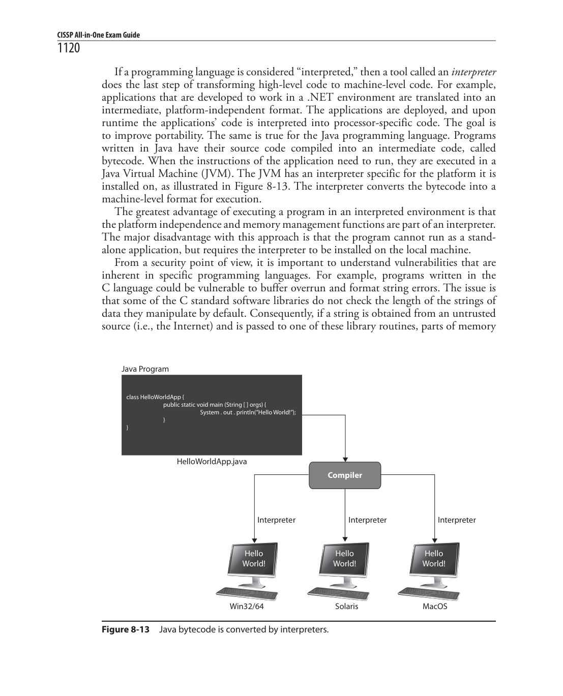
Figure 8-13Java bytecode is converted by interpreters.
may be unintentionally overwritten with untrustworthy data—this vulnerability can potentially be used to execute arbitrary and malicious software. Some programming languages, such as Java, perform automatic garbage collection; others, such as C, require the developer to perform it manually, thus leaving opportunity for error. Garbage collection is an automated way for software to carry out part of its memory management tasks. Agarbage collectoridentifies blocks of memory that were once allocated but are no longer in use and deallocates the blocks and marks them as free. It also gathers scattered blocks of free memory and combines them into larger blocks. It helps provide a more stable environment and does not waste precious memory. If garbage collection does not take place properly, not only can memory be used in an inefficient manner, an attacker could carry out a denial-of-service attack specifically to artificially commit all of a system’s memory rendering it unable to function.
Nothing in technology seems to be getting any simpler, which makes learning this stuff much harder as the years go by. Ten years ago assembly, compiled, and interpreted languages were more clear-cut and their definitions straightforward. For the most part, only scripting languages required interpreters, but as languages have evolved they have become extremely flexible to allow for greater functionality, efficiency, and portability. Many languages can have their source code compiled or interpreted depending upon the environment and user requirements.
Object-Oriented Concepts
Software development used to be done by classic input-processing-output methods. This development used an information flow model from hierarchical information structures. Data was input into a program, and the program passed the data from the beginning to end, performed logical procedures, and returned a result. Object-oriented programming (OOP)methods perform the same functionality, but with different techniques that work in a more efficient manner. First, you need to understand the basic concepts of OOP. OOP works with classes and objects. A real-world object, such as a table, is a member (or an instance) of a larger class of objects called “furniture.” The furniture class will have a set of attributes associated with it, and when an object is generated, it inherits these attributes. The attributes may be color, dimensions, weight, style, and cost. These attributes apply if a chair, table, or loveseat object is generated, also referred to as instantiated. Because the table is a member of the class furniture, the table inherits all attributes defined for the class (see Figure 8-14). The programmer develops the class and all of its characteristics and attributes. The programmer does not develop each and every object, which is the beauty of this approach. As an analogy, let’s say you developed an advanced coffee maker with the goal of putting Starbucks out of business. A customer punches the available buttons on your coffee maker interface, ordering a large latte, with skim milk, vanilla and raspberry flavoring, and an extra shot of espresso, where the coffee is served at 250 degrees. Your coffee maker
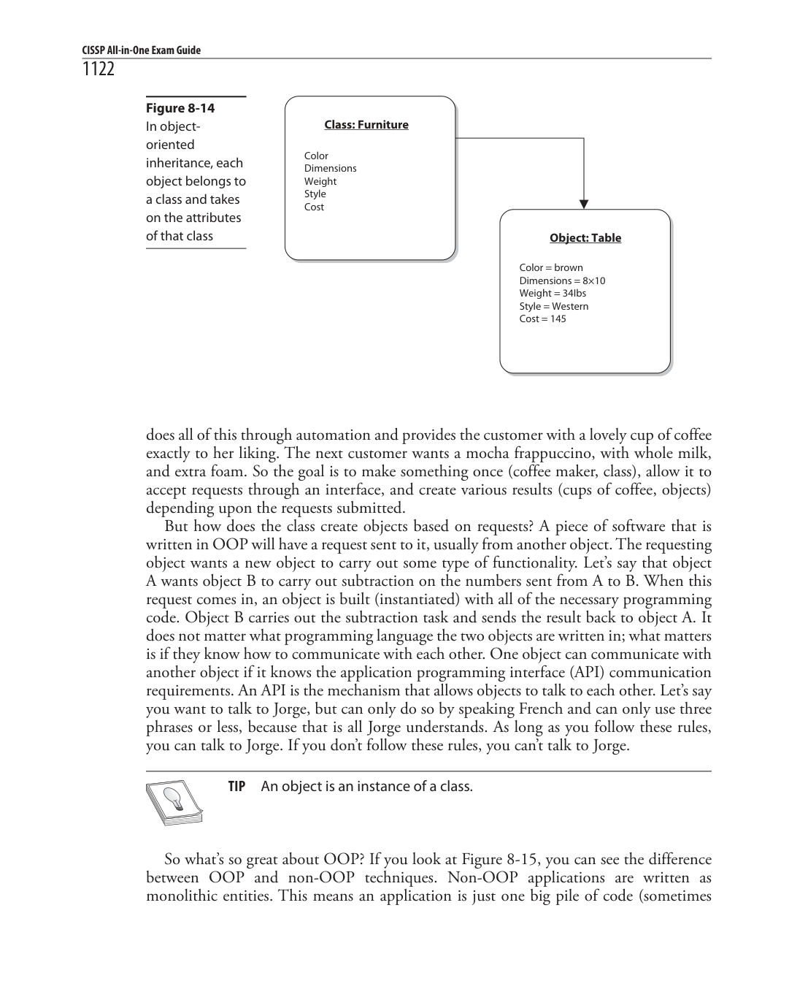
Figure 8-14
does all of this through automation and provides the customer with a lovely cup of coffee exactly to her liking. The next customer wants a mocha frappuccino, with whole milk, and extra foam. So the goal is to make something once (coffee maker, class), allow it to accept requests through an interface, and create various results (cups of coffee, objects) depending upon the requests submitted. But how does the class create objects based on requests? A piece of software that is written in OOP will have a request sent to it, usually from another object. The requesting object wants a new object to carry out some type of functionality. Let’s say that object A wants object B to carry out subtraction on the numbers sent from A to B. When this request comes in, an object is built (instantiated) with all of the necessary programming code. Object B carries out the subtraction task and sends the result back to object A. It does not matter what programming language the two objects are written in; what matters is if they know how to communicate with each other. One object can communicate with another object if it knows the application programming interface (API) communication requirements. An API is the mechanism that allows objects to talk to each other. Let’s say you want to talk to Jorge, but can only do so by speaking French and can only use three phrases or less, because that is all Jorge understands. As long as you follow these rules, you can talk to Jorge. If you don’t follow these rules, you can’t talk to Jorge.
An object is an instance of a class.
So what’s so great about OOP? If you look at Figure 8-15, you can see the difference between OOP and non-OOP techniques. Non-OOP applications are written as monolithic entities. This means an application is just one big pile of code (sometimes
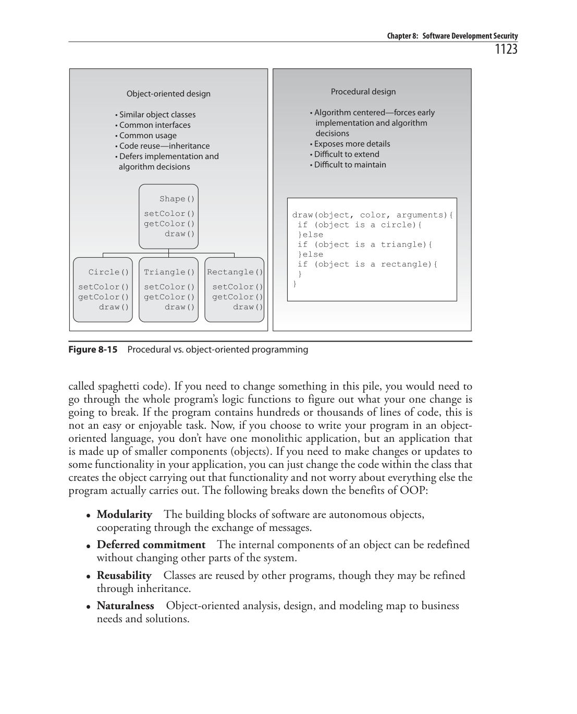
Figure 8-15Procedural vs. object-oriented programming
called spaghetti code). If you need to change something in this pile, you would need to go through the whole program’s logic functions to figure out what your one change is going to break. If the program contains hundreds or thousands of lines of code, this is not an easy or enjoyable task. Now, if you choose to write your program in an objectoriented language, you don’t have one monolithic application, but an application that is made up of smaller components (objects). If you need to make changes or updates to some functionality in your application, you can just change the code within the class that creates the object carrying out that functionality and not worry about everything else the program actually carries out. The following breaks down the benefits of OOP:
ModularityThe building blocks of software are autonomous objects,
- cooperating through the exchange of messages.
Deferred commitmentThe internal components of an object can be redefined
- without changing other parts of the system.
ReusabilityClasses are reused by other programs, though they may be refined
- through inheritance.
NaturalnessObject-oriented analysis, design, and modeling map to business
- needs and solutions.
Most applications have some type of functionality in common. Instead of developing the same code to carry out the same functionality for ten different applications, using OOP allows you to just create the object only once and let it be reused in other applications. This reduces development time and saves money. Now that we’ve covered the concepts of OOP, let’s clarify the terminology used. A methodis the functionality or procedure an object can carry out. An object may be constructed to accept data from a user and to reformat the request so a back-end server can understand and process it. Another object may perform a method that extracts data from a database and populates a web page with this information. Or an object may carry out a withdrawal procedure to allow the user of an ATM to extract money from her account. The objectsencapsulatethe attribute values, which means this information is packaged under one name and can be reused as one entity by other objects. Objects need to be able to communicate with each other, and this happens by usingmessagesthat are sent to the receiving object’s API. If object A needs to tell object B that a user’s checking account must be reduced by $40, it sends object B a message. The message is made up of the destination, the method that needs to be performed, and the corresponding arguments. Figure 8-16 shows this example. Messaging can happen in several ways. A given object can have a single connection (one-to-one) or multiple connections (one-to-many). It is important to map these communication paths to identify if information can flow in a way that is not intended. This will help ensure that sensitive data cannot be passed to objects of a lower securitylevel. An object can have a shared portion and a private portion. Thesharedportion is the interface (API) that enables it to interact with other components. Messages enter through the interface to specify the requested operation, or method, to be performed. Theprivate portion of an object is how it actually works and performs the requested operations. Other components need not know how each object works internally—only that it does the job requested of it. This is howdata hidingis possible. The details of the processing are hidden from all other program elements outside the object. Objects communicate through well-defined interfaces; therefore, they do not need to know how each other works internally.
Data hiding is provided by encapsulation, which protects an object’s private data from outside access. No object should be allowed to, or have the need to, access another object’s internal data or processes.
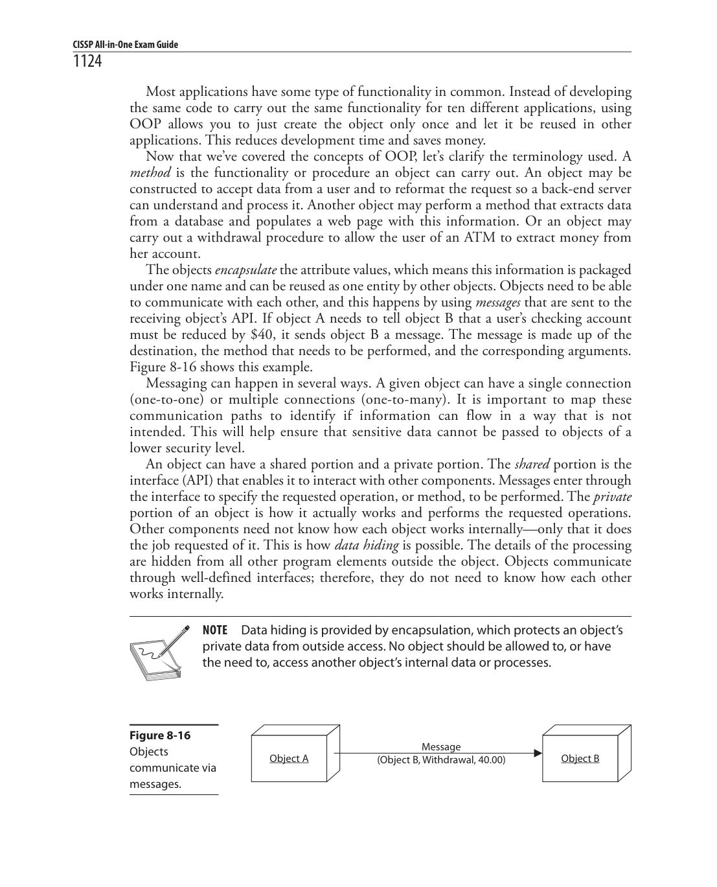
Figure 8-16
These objects can grow to great numbers, so the complexity of understanding, tracking, and analyzing can get a bit overwhelming. Many times, the objects are shown in connection to a reference or pointer in documentation. Figure 8-17 shows how related objects are represented as a specific piece, or reference, in a bank ATM system. This enables analysts and developers to look at a higher level of operation and procedures without having to view each individual object and its code. Thus, this modularity provides for a more easily understood model. Abstraction, as discussed earlier, is the capability to suppress unnecessary details so the important, inherent properties can be examined and reviewed. It enables the separation of conceptual aspects of a system. For example, if a software architect needs to understand how data flows through the program, she would want to understand the big pieces of the program and trace the steps the data takes from first being input into the program all the way until it exits the program as output. It would be difficult to understand this concept if the small details of every piece of the program were presented. Instead, through abstraction, all the details are suppressed so the software architect can understand a crucial part of the product. It is like being able to see a forest without having to look at each and every tree.
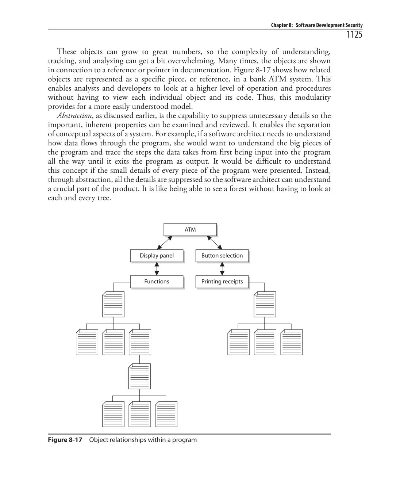
Figure 8-17Object relationships within a program
Each object should have specifications it adheres to. This discipline provides cleaner programming and reduces programming errors and omissions. The following list is an example of what should be developed for each object:
Object name
- Attribute descriptions
- Attribute name
- Attribute content
- Attribute data type
- External input to object
- External output from object
- Operation descriptions
- Operation name
- Operation interface description
- Operation processing description
- Performance issues
- Restrictions and limitations
- Instance connections
- Message connections
- The developer creates a class that outlines these specifications. When objects are instantiated, they inherit these attributes. Each object can be reused as stated previously, which is the beauty of OOP. This enables a more efficient use of resources and the programmer’s time. Different applications can use the same objects, which reduces redundant work, and as an application grows in functionality, objects can be easily added and integrated into the original structure. The objects can be catalogued in a library, which provides an economical way for more than one application to call upon the objects (see Figure 8-18). The library provides an index and pointers to where the objects actually live within the system or on another system. When applications are developed in a modular approach, like object-oriented methods, components can be reused, complexity is reduced, and parallel development can be done. These characteristics allow for fewer mistakes, easier modification, resource efficiency, and more timely coding than the classic programming languages. OOP also provides functional independence, which means each module addresses a specific subfunction of requirements and has an interface that is easily understood by other parts of the application. An object isencapsulated, meaning the data structure (the operation’s functionality) and the acceptable ways of accessing it are grouped into one entity. Other objects, subjects, and applications can use this object and its functionality by accessing it through controlled and standardized interfaces and sending it messages (see Figure 8-19).
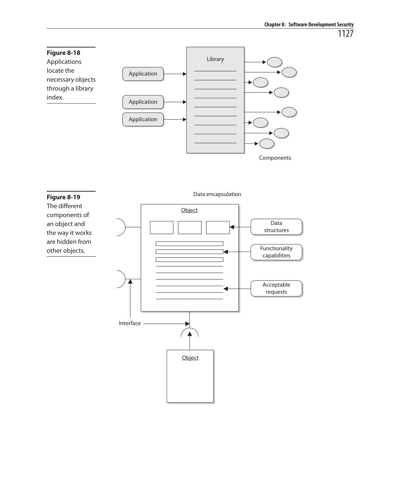
Figure 8-18
Polymorphism
Polymorphismcomes from the Greek, meaning “having multiple forms.” This concept usually confuses people, so let’s jump right into an example. If you develop a program in an OOP language, you can create a variable that can be used in different forms. The application will determine what form to use at the time of execution (run time). So if your variable is named USERID and you develop the object so the variable can accept either an integer or letters, this provides flexibility. This means the user ID can be accepted as a number (account number) or name (characters). If application A uses this object, it can choose to use integers for the user IDs, while application B can choose to use characters. What confuses people about the term polymorphism is that the International , commonly Information Systems Security Certification Consortium, known as (ISC) uses the following definition or description: “Two objects can receive the same input and have different outputs.” Clear as mud. As a simplistic example of polymorphism, suppose three different objects receive the input “Bob.” Object A would process this input and produce the output “43-year-old white male.” Object B would receive the input “Bob” and produce the output “Husband of Sally.” Object C would produce the output “Member of User group.” Each object received the same input, but responded with a different output. Polymorphism can also take place in the following example: Object A and Object B are created from the same parent class, but Object B is also under a subclass. Object B would have some different characteristics from Object A because of this inheritance from the parent classandthe subclass. When Object A and Object B receive the same input, they would result in different outputs because only one of them inherited characteristics from the subclass.
Polymorphism takes place when different objects respond to the same command, input, or message in different ways.
OOA vs. OOD
Object-oriented analysis (OOA)is the process of classifying objects that will be appropriate for a solution. A problem is analyzed to determine the classes of objects to be used in the application. Object-oriented design (OOD)creates a representation of a real-world problem and maps it to a software solution using OOP. The result of an OOD is a design that modularizes data and procedures. The design interconnects data objects and processing operations.
Other Software Development Concepts
Regardless of the approach to software development, there are some concepts that are universal in this field. Data modeling, data structures, and the concepts of cohesion and coupling are important when developing quality software. Quality is focused on minimizing the number of errors, which in turn means the software will have fewer vulnerabilities and be more secure.
Data Modeling
Data modelingconsiders data independently of both the way the data is processed and the components that process the data. A data model follows an input value from beginning to end and verifies that the output is correct. OOA is an example of a structured analysis approach. If an analyst is reviewing the OOA of an application, she will make sure all relationships are set up correctly, that the inheritance flows in a predictable and usable manner, that the instances of objects are practical and provide the necessary functionality, and that the attributes of each class cover all the necessary values used by the application. When another analyst does a data model review of the same application, he will follow the data and the returned values after processing takes place. An application can have a perfect OOA structure, but when 1 + 1 is entered and it returns –3, something is wrong. This is one aspect that data modeling looks at. Another example of data modeling deals with databases. Data modeling can be used to provide insight into the data and the relationships that govern it. A data item in one file structure, or data store, might be a pointer to another file structure or to a different data store. These pointers must actually point to the right place. Data modeling would verify this, not OOA structure analysis.
Data Structures
Adata structureis a representation of the logical relationship between elements of data. It dictates the degree of association among elements, methods of access, processing alternatives, and the organization of data elements. The structure can be simple in nature, like the scalar item, which represents a single element that can be addressed by an identifier and accessed by a single address in storage. The scalar items can be grouped in arrays, which provide access by indexes. Other data structures include hierarchical structures by using multilinked lists that contain scalar items, vectors, and possibly arrays. The hierarchical structure provides categorization and association. If a user can make a request of an application to find all computer books written on security, and that application returns a list, then this application is using a hierarchical data structure of some kind. Figure 8-20 shows simple and complex datastructures. So from a security perspective, not only do you need to understand the vulnerabilities related to a poorly architected and designed piece of software, but you need to understand the complexity issues of how the software components communicate with each other and the type of data format that is used.
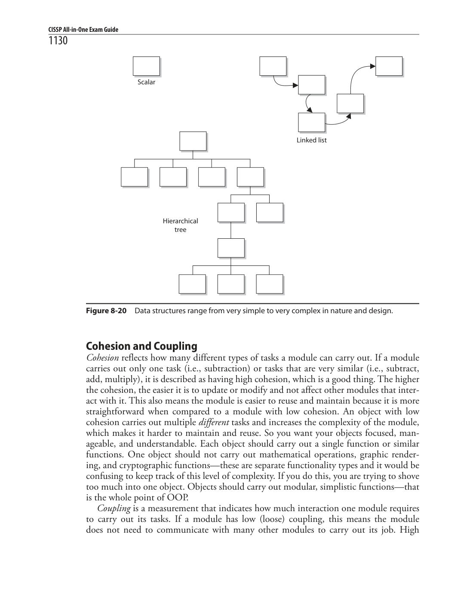
Figure 8-20Data structures range from very simple to very complex in nature and design.
Cohesion and Coupling
Cohesionreflects how many different types of tasks a module can carry out. If a module carries out only one task (i.e., subtraction) or tasks that are very similar (i.e., subtract, add, multiply), it is described as having high cohesion, which is a good thing. The higher the cohesion, the easier it is to update or modify and not affect other modules that interact with it. This also means the module is easier to reuse and maintain because it is more straightforward when compared to a module with low cohesion. An object with low cohesion carries out multipledifferenttasks and increases the complexity of the module, which makes it harder to maintain and reuse. So you want your objects focused, manageable, and understandable. Each object should carry out a single function or similar functions. One object should not carry out mathematical operations, graphic rendering, and cryptographic functions—these are separate functionality types and it would be confusing to keep track of this level of complexity. If you do this, you are trying to shove too much into one object. Objects should carry out modular, simplistic functions—that is the whole point of OOP. Couplingis a measurement that indicates how much interaction one module requires to carry out its tasks. If a module has low (loose) coupling, this means the module does not need to communicate with many other modules to carry out its job. High
(tight) coupling means a module depends upon many other modules to carry out its tasks. Low coupling is more desirable because the modules are easier to understand and easier to reuse, and changes can take place and not affect many modules around it. Low coupling indicates that the programmer created a well-structured module. As an analogy, a company would want its employees to be able to carry out their individual jobs with the least amount of dependencies on other workers. If Joe has to talk with five other people just to get one task done, too much complexity exists, it’s too time-consuming, and more places are created where errors can take place. If modules are tightly coupled, the ripple effect of changing just one module can drastically affect the other modules. If they are loosely coupled, this level of complexity reduces. An example oflow couplingwould be one module passing a variable value to another module. As an example ofhigh coupling, Module A would pass a value to Module B, another value to Module C, and yet another value to Module D. Module A could not complete its tasks until Modules B, C, and D completed their tasks and returned results back to Module A.
Objects should be self-contained and perform a single logical function, which is high cohesion. Objects should not drastically affect each other, which is low coupling. The level of complexity involved with coupling and cohesion can have a direct relationship on the security level of a program. The more complex something is, the harder it is to secure. Developing “tight code” not only allows for efficiencies and effectiveness, but also reduces the software’s attack surface. Decreasing complexity where possible reduces the number of potential holes a bad guy can sneak through. As an analogy, if you were responsible for protecting a facility, it would be easier if the facility had a small number of doors, windows, and people coming in and out of it. The smaller number of variables and moving pieces would help you keep track of things and secure them.
Application Programming Interfaces
When we discussed some of the attributes of object-oriented development, we spent a bit of time on the concept of abstraction. Essentially, it is all about definingwhata class or object does with no regard tohowthat is accomplished internally. Anapplication programming interface (API)specifies the manner in which a software component interacts with other software components. Not only does this encourage software reuse, but it also makes the software more maintainable by localizing the changes that need to be made while eliminating (or at least reducing) cascading effects of fixes or changes. APIs are perhaps most familiar to us in the context of software libraries. A software library is a collection of components that do specific things that are useful to many other components. For example, there are software libraries for various encryption algorithms, managing network connections, and displaying graphics. These allow software developers to work on whatever makes their program unique, while leveraging known-good code
for the things that similar programs routinely do. All the programmer needs to do is understand the API for the libraries she intends to use. This reduces the amount of new code that needs to be developed, which in turn makes it easier to secure and maintain. Besides the advantages of reduced effort and improved maintainability, APIs are oftentimes required in order to employ the underlying operating system’s functionality. Apple Mac OS X and iOS, Google Android, and Microsoft Windows all require developers to use standard APIs for access to operating system functionality such as opening and closing files and network connections, among many others. This is also true of many disturbed computing frameworks, which is a topic we discuss next.
Distributed Computing
Many of our applications work in a client/server model, which means the smaller part (client) of the application can run on different systems and the larger piece (server) of the application runs on a single, and commonly more powerful, back-end system. The server portion carries out more functionality and has more horsepower compared to the clients. The clients will send the server requests, and the server will respond with results. Simple enough, but how do the client and server pieces actually carry out communication with each other? A distributed object computing model needs toregisterthe client and server components, which means to find out where they live on the network, what their names or IDs are, and what type of functionality the different components carry out. So the first step is basically, “Where are all the pieces, how do I call upon them when I need them, and what do they do?” This organization must be put in place because the coordination between the components should be controlled and monitored, and requests and results must be able to pass back and forth between the correct components. Life might be easier if we had just one intercomponent communication architecture for developers to follow, but what fun would that be? The various architectures work a little differently from each other and are necessary to work in specific production environments. Nevertheless, they all perform the basic function of allowing components on the client and server sides to communicate with each other.
Distributed Computing Environment
Distributed Computing Environment (DCE)is a standard developed by the Open Software Foundation (OSF), also called Open Group. It is a client/server framework that is available to many vendors to use within their products. This framework illustrates how various capabilities can be integrated and shared between heterogeneous systems. DCE provides a Remote Procedure Call (RPC) service, security service, directory service, time service, and distributed file support. It was one of the first attempts at distributed computing in the industry. DCE is a set of management services with a communications layer based on RPC. It is a layer of software that sits on the top of the network layer and provides services to the applications above it. DCE and Distributed Component Object Model (DCOM) offer
much of the same functionality. DCOM, however, was developed by Microsoft and is more proprietary in nature. DCE’s time service provides host clock synchronization and enables applications to determine sequencing and to schedule events based on this clock synchronization. This time synchronization is for applications. Users cannot access this functionality directly. The directory service enables users, servers, and resources to be contacted anywhere on the network. When the directory service is given the name, it returns the network address of the resource along with other necessary information. DCOM uses aglobally unique identifier (GUID), while DCE uses auniversal unique identifier (UUID). They are both used to uniquely identify users, resources, and components within an environment. DCE is illustrated in Figure 8-21. The RPC function collects the arguments and commands from the sending program and prepares them for transmission over the network. RPC determines the network transport protocol to be used and finds the receiving host’s address in the directory service. The thread service provides real-time priority scheduling in a multithreading environment. The security services support authentication and authorization services. DCE was the first attempt at standardizing heterogeneous system communication through a client/server model. Though one would be hard-pressed to find it running as such on any production system, it provided many of the foundational concepts for distributed computing technologies that followed it, as in CORBA, DCOM, and J2EE, which we will cover next. Microsoft DCOM, in particular, relies extensively on DCE and RPC.
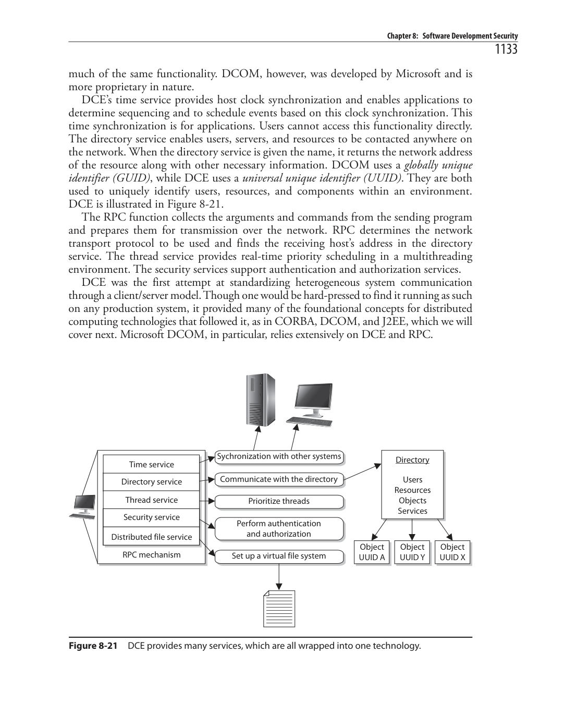
Figure 8-21DCE provides many services, which are all wrapped into one technology.
CORBA and ORBs
If we want software components to be able to communicate with each other, this means standardized interfaces and communication methods must be used. This is the only way interoperability can take place. Common Object Request Broker Architecture (CORBA)is an open object-oriented standardarchitecturedevelopedbytheObjectManagementGroup(OMG).It provides interoperability among the vast array of software, platforms, and hardware in environments today. CORBA enables applications to communicate with one another no matter where the applications are located or who developed them. ThisstandarddefinestheAPIs,communicationprotocol,andclient/server communication methods to allow heterogeneous applications written in different programming languages and run on various platforms to work together. The model defines object semantics so the external visible characteristics are standard and are viewed the same by all other objects in the environment. This standardization enables many different developers to write hundreds or thousands of components that can interact with other components in an environment without having to know how the components actually work. The developers know how to communicate with the components because the interfaces are uniform and follow the rules of the model. In this model, clients request services from objects. The client passes the object a message that contains the name of the object, the requested operation, and any necessary parameters. The CORBA model provides standards to build a complete distributed environment. It contains two main parts: system-oriented components (object request brokers [ORBs] and object services) and application-oriented components (application objects and common facilities). The ORB manages all communications between components and enables them to interact in a heterogeneous and distributed environment, as shown in Figure 8-22. The ORB works independently of the platforms where the objects reside, which provides greater interoperability.
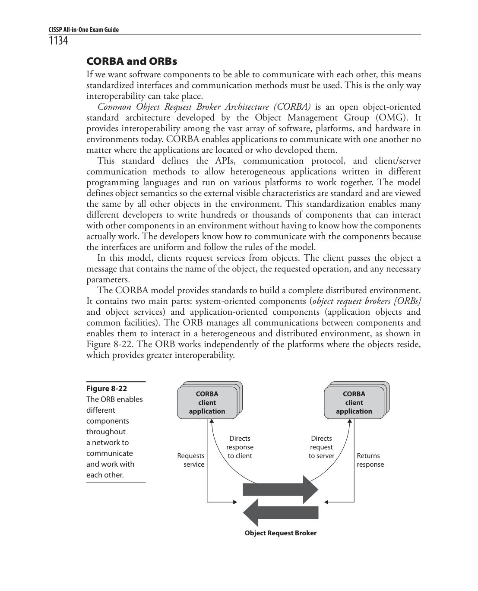
Figure 8-22
ORB is the middleware that allows the client/server communication to take place between objects residing on different systems. When a client needs some type of functionality to be carried out, the ORB receives the request and is responsible for locating the necessary object for that specific task. Once the object is found, the ORB invokes a method (or operation), passes the parameters, and returns the result to the client. The client software does not need to know where the object resides or go through the trouble of finding it. That is the ORB’s job. As an analogy, when you call someone on your mobile phone, you do not have to worry about physically locating that person so your data can be passed back and forth. The mobile phones and the telecommunications network take care of that for you. Software that works within the CORBA model can use objects that are written in different programming languages and that reside on different operating systems and platforms, as long as the software follows all the rules to allow for such interoperability (see Figure 8-23). ORBs provide communications between distributed objects. If an object on a workstation must have an object on a server process data, it can make a request through the ORB, which will track down the needed object and facilitate the communication path between these two objects until the process is complete. ORBs are mechanisms that enable objects to communicate locally or remotely. They enable objects to make requests to objects and receive responses. This happens transparently to the client and provides a type of pipeline between all corresponding objects. Using CORBA enables an application to be usable with many different types of ORBs. It provides portability for applications and tackles many of the interoperability
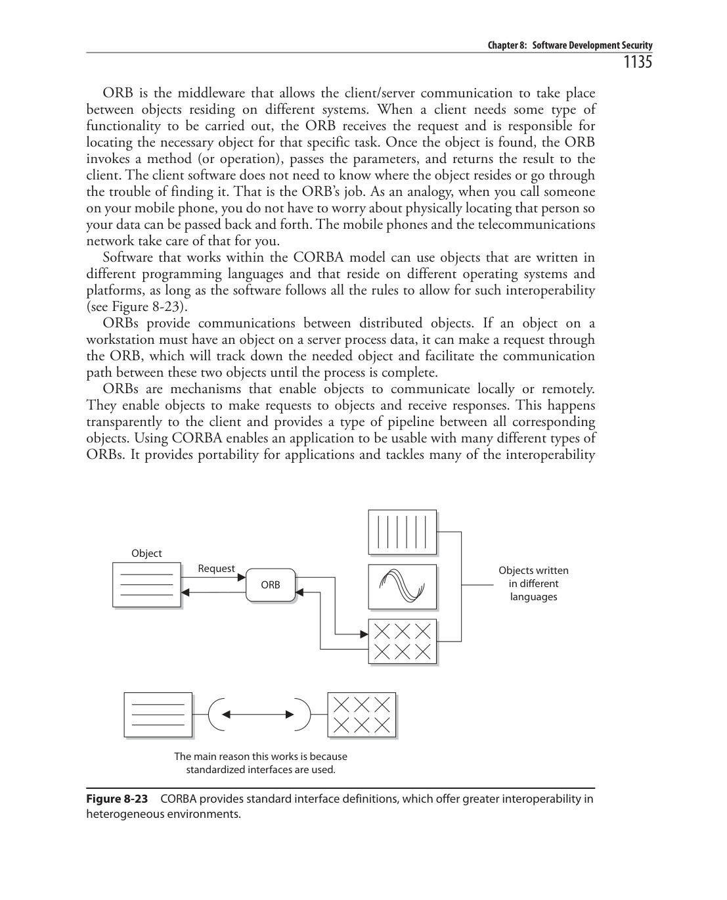
Figure 8-23CORBA provides standard interface definitions, which offer greater interoperability in
issues that many vendors and developers run into when their products are implemented into different environments.
COM and DCOM
TheComponent Object Model (COM)allows for interprocess communication within one application or between applications on the same computer system. The model was created by Microsoft and outlines standardized APIs, component naming schemes, and communication standards. So if you are a developer and you want your application to be able to interact with the Windows operating system and the different applications developed for this platform, you will follow the COM outlined standards. TheDistributed Component Object Model (DCOM)supports the same model for component interaction, and also supportsdistributedinterprocess communication (IPC). COM enables applications to use components on the same systems, while DCOM enables applications to access objects that reside in different parts of a network. So this is how the client/server-based activities are carried out by COM-based operating systems and/or applications. Without DCOM, programmers would have to write much more complicated code to find necessary objects, set up network sockets, and incorporate the services necessary to allow communication. DCOM takes care of these issues (and more), and enables the programmer to focus on his tasks of developing the necessary functionality within his application. DCOM has a library that takes care of session handling, synchronization, buffering, fault identification and handling, and data format translation. DCOM works as the middleware that enables distributed processing and provides developers with services that support process-to-process communications across networks (see Figure 8-24). Other types of distributed interprocessing technologies provide similar functionality: ORB, message-oriented middleware (MOM), Open Database Connectivity (ODBC), and so on. DCOM provides ORB-like services, data connectivity services, distributed
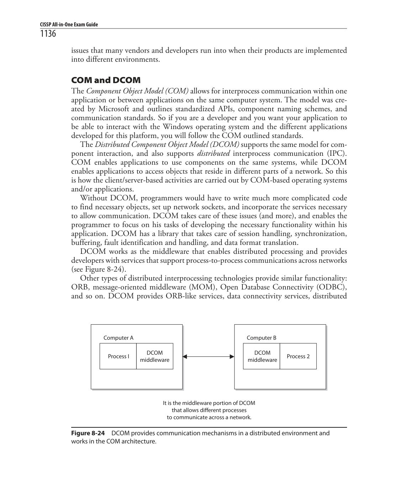
Figure 8-24DCOM provides communication mechanisms in a distributed environment and
messaging services, and distributed transaction services layered over its RPC mechanism. DCOM integrates all of these functionalities into one technology that uses the same interface as COM. Although DCOM is still in use on many systems, it has been largely replaced with the.NET framework, which is mainly used for applications that run in Windows environments. The framework has a large library that different applications can call upon. The libraries provide functions as in data access, database connectivity, network communication, etc. Programs that are written to work in this framework execute in application virtual machines, which provide memory management, exception handling, and many types of security services. A program that is written to work in this type of environment is compiled to an intermediate code type (Common Language Runtime), and then when the code is executed at run time, this happens within the application virtual machine, as illustrated in Figure 8-25.
Object Linking and Embedding
Object Linking and Embedding (OLE)provides a way for objects to be shared on a local personal computer and to use COM as their foundation. OLE enables objects—such as graphics, clipart, and spreadsheets—to be embedded into documents. The capability for
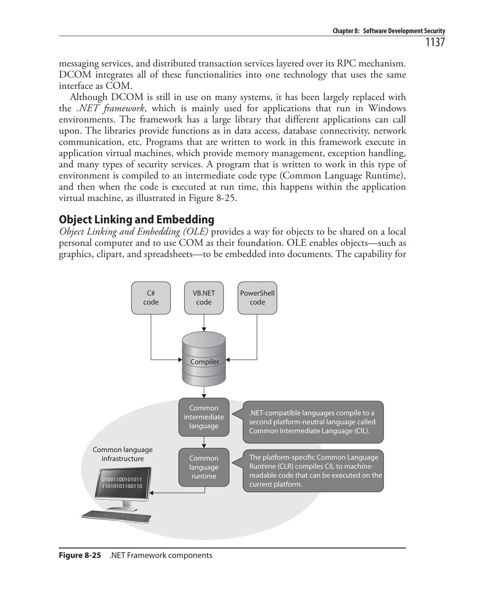
Figure 8-25.NET Framework components
one program to call another program is calledlinking. The capability to place a piece of data inside a foreign program or document is calledembedding. OLE also allows for linking different objects and documents. For example, when Chrissy creates a document that contains a Uniform Resource Locator (URL), that URL turns blue and is underlined, indicating a user can just double-click it to be taken to the appropriate website. This is an example of linking capabilities. If Chrissy inserts a spreadsheet into her document, this is also an instance of embedding. If she needs to edit the spreadsheet, she can double-click the spreadsheet, and the operating system will open the correct environment (which might be Excel) to let her make her changes. This technology was evolved to work on the World Wide Web and is called ActiveX, which we cover later in this chapter. The components are meant to be portable. ActiveX components can run on any platform that supports DCOM (using the COM model) or that communicates using DCOM services.
Java Platform, Enterprise Edition
Another distributed computing model is based upon the Java programming language, which is theJava Platform, Enterprise Edition (Java EE). Just as the COM and CORBA models were created to allow a modular approach to programming code with the goal of interoperability, Java EE defines a client/server model that is object oriented and platform independent. Java EE is an enterprise Java computing platform. This means it is a framework that is used to develop enterprise software written mainly in the Java programming language. It provides APIs for networking services, fault tolerance, security, and web services for large-scale, multitiered network applications. It takes advantage of the “Write Once, Run Anywhere” capability of Java; it provides a Java-based, database-access API; and its interprocess communications are based upon CORBA. The main goal is to have a standardized method of implementing back-end code that carries out business logic for enterprise-wide applications. The Java EE application server can handle scalability, concurrency, transactions, and various security services for the client. The goal is to allow the developers to be able to concentrate on the business logic functionality instead of the “plumbing” that is under the covers.
Service-Oriented Architecture
While many of the previously described distributed computing technologies are still in use, the industry has moved toward and integrated another approach in providing commonly needed application functionality and procedures across various environments. Aservice-oriented architecture (SOA)provides standardized access to the most needed services to many different applications at one time. Application functionality is separated into distinct units (services) and offered up through well-defined interfaces and datasharing standardization. This means that individual applications do not need to possess the same redundant code and functionality. The functionality can be offered by an individual entity and then all other applications can just call upon and use the one instance.
This is really the crux of all distributed computing technologies and approaches—SOA is just a more web-based approach. As an analogy, every home does not have its own electrical power grid. A geographical area has a power grid, and all homes and offices tap into that one resource. There is a standardized method of each home accessing the power grid and obtaining the energy it needs. The same concept applies with SOA: applications access one centralized place that provides the functionality they require. A simple interface abstracts (hides) the underlying complexity, which allows for applications to call upon the services without needing to understand the service provider’s programming language or its platform implementation. For services to be able to be used (and reused) in an interoperable manner, they must be modular in nature, autonomous, loosely coupled, follow standardized service identification and categorization, and provide provisioning and delivery. The entity that will provide a service in an SOA environment sends a servicedescription document to a service broker. Theservice brokeris basically a map of all the services available within a specific environment. When an application needs a specific service, it makes a call to the broker, which points the application to the necessary service provider, as shown in Figure 8-26. Services within an SOA are usually provided through web services. Aweb service allows for web-based communication to happen seamlessly using web-based standards, as in Simple Object Access Protocol (SOAP), HTTP, Web Services Description Language (WSDL), Universal Description, Discovery and Integration (UDDI), and Extensible Markup Language (XML). WSDL provides a machine-readable description of the specific operations provided by the service. UDDI is an XML-based registry that lists available services. It provides a method for services to be registered by service providers and located by service consumers. UDDI provides the mechanisms to allow businesses around the world to publish their services and others to discover and use these services. When a service consumer needs to know what service is available and where it is located, it sends a message to the service broker. Through its UDDI approach, the broker can provide access to the WSDL document that describes the requirements for interacting with the requested service. The service consumer now knows how to locate the service provider and how to communicate with it. The consumer then requests and accesses the
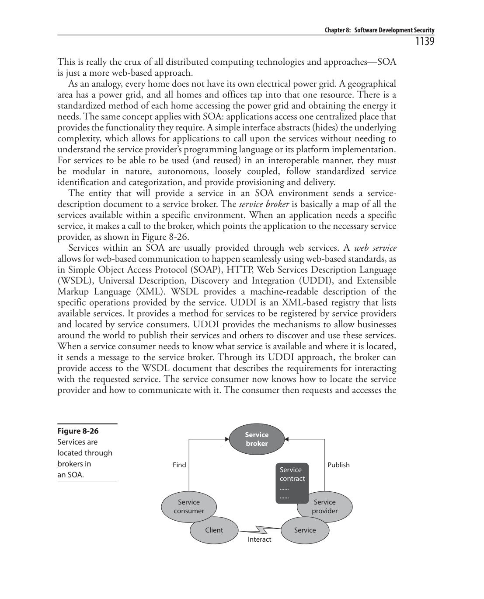
Figure 8-26
service using SOAP, which is an XML-based protocol that is used to exchange messages between a requester and provider of a web service. Figure 8-27 illustrates how these different components work together. Web services commonly provide the functional building blocks for an SOA. New services are represented in this format using these standards, and/or existing applications are wrapped within a web service structure to allow for legacy systems to participate in SOA environments also. There has been controversy and confusion on the distinction and similarities among SOA, mashups, Web 2.0, Software as a Service (SaaS), and cloud computing. The evolution of Web 1.0 toWeb 2.0pertains to the move from static websites that provide content and some functionality to an Internet where everyone can basically be a content provider and consumer. Through the use of Facebook, YouTube, Twitter, Flickr, and other sites, normal users can provide content to the digital world without having to understand HTML, JavaScript, web server software, and other technologies. Websites provide intricate functionality instead of just static content. The extensive manner in which information sharing, collaboration, and interaction can happen through social networking sites, blogs, wikis, hosted services, mashups, and video sharing really embodies the essence of the concept of Web 2.0. This makes for a more exciting Internet, but increased complexity for security professionals, who are responsible for understanding and securing software that maintains sensitive information. Amashupis the combination of functionality, data, and presentation capabilities of two or more sources to provide some type of new service or functionality. Open APIs and data sources are commonly aggregated and combined to provide a more useful and powerful resource. For example, the site http://popurls.com combines the functionality of APIs provided by sites like Digg, Del.icio.us, Flickr, and YouTube to provide integrated social news.
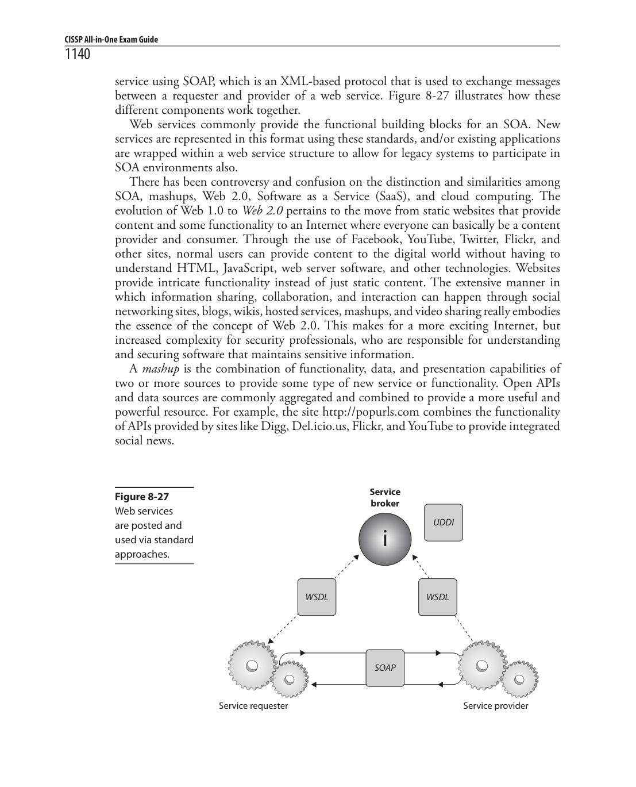
Figure 8-27
i
SOAP
What if we need applications running on different operating systems, which were written in different programming languages, to communicate over web-based communication methods? We would useSimple Object Access Protocol (SOAP). SOAP is an XML-based protocol that encodes messages in a web service environment. It actually defines an XML schema of how communication is going to take place. The SOAP XML schema defines how objects communicate directly. So SOAP is a component that helps provide distributed computing through the use of web applications. A request for an application comes from one computer (client) and is transmitted over a web-based environment (i.e., Internet) toanother computer (server). While there are various distributed computing technologies,SOAP makes it easy by using XML and HTTP, which are already standard webformats. One advantage of SOAP is that the program calls will most likely get through firewalls because HTTP communication is commonly allowed. This helps ensure that the client/server model is not broken by getting denied by a firewall in between the communicating entities.
Cloud computingis a method of providing computing as a service rather than as a physical product. It provides processing computation capabilities, storage, and software without the end user needing to know or worry about the physical location and/ or configuration of the devices and software that provide this functionality. Cloud computing extends technical capabilities through a subscription-based or pay-per-use service structure. Scalable resources are consolidated and commonly used in a virtualized manner. This technology is covered more in depth in Chapter 3, but it is being presented here to illustrate the differences and similarities pertaining to the outgrowth of Internet capabilities and the use of distributed computing technologies. Software as a Service (SaaS)is a cloud computing model that allows applications and data to be centrally hosted and accessed by thin clients, commonly web browsers. It is similar to the old centralized mainframe model, but commonly takes place over the Internet. SaaS delivers many business applications providing functionality, as in customer relationship management (CRM), enterprise resource planning (ERP), human resource management (HRM), content management (CM), and more. Most people are familiar with Salesforce.com, which was one of the first SaaS products to become available. So DCE was the first attempt at providing client/server distributed computing capabilities and worked mainly in Unix-based environments. CORBA is a model that allows for interoperability and distributed computing for mostly non-Microsoft applications. Software that needed to work in a distributed computing environment of mostly Microsoft products first followed the DCOM model, which evolved into the .NET framework. Large enterprise-wide applications that are based upon Java can carry out distributed computing by following the Java EE model. And web-based distributed computing happens through web services and SOA frameworks. Each of these has the
same basic goal, which is to allow a client application component on one computer to be able to communicate with a server application on another computer. The biggest difference between these models pertains to the environment the applications will be working within: Unix, Windows, heterogeneous, or web-based. While distributed computing technologies allow for various systems and applications to communicate and share functionality, this can add layers of complexity when it comes to security. The client and server portions need to carry out mutual authentication to ensure that hackers do not introduce rogue applications and carry out man-in-themiddle attacks. Each communicating component needs to share similar cryptographic functionality so that the necessary encryption can take place. The integrity of the data and messages that are passed between communicating components needs to be protected. End-to-end secure transmission channels might be necessary to protect communication data. The list of security requirements can go on and on, but the point is that just getting software components to be able to communicate in a heterogeneous environment can be challenging—but securing these complex communication methods can prove to be maddening. As a security professional, you really need to understand how software talks to other software under the covers. You can patch systems, implement access control lists (ACLs), harden operating systems, and more but still have unprotected RPC traffic taking place between applications that are totally insecure. Security has to be integrated ateverylevel, including interprocess communication channels.
Mobile Code
Code that can be transmitted across a network, to be executed by a system or device on the other end, is calledmobile code. There are many legitimate reasons to use mobile code—for example, web browser applets that may execute in the background to download additional content for the web page, such as plug-ins that allow you to view a video. The cautions arise when a website downloads code intended to do malicious or compromising actions, especially when the recipient is unaware that the compromising activity is taking place. If a website is compromised, it can be used as a platform from which to launch attacks against anyone visiting the site and just browsing. Some of the common types of mobile code are covered in the next sections.
Mobile code has been a regular vector for attacks for years. Except in carefully controlled environments, it should be considered risky.
Java Applets
Java is an object-oriented, platform-independent programming language. It is employed as a full-fledged programming language and is used to write complete programs and small components, calledapplets, which commonly run in a user’s web browser.
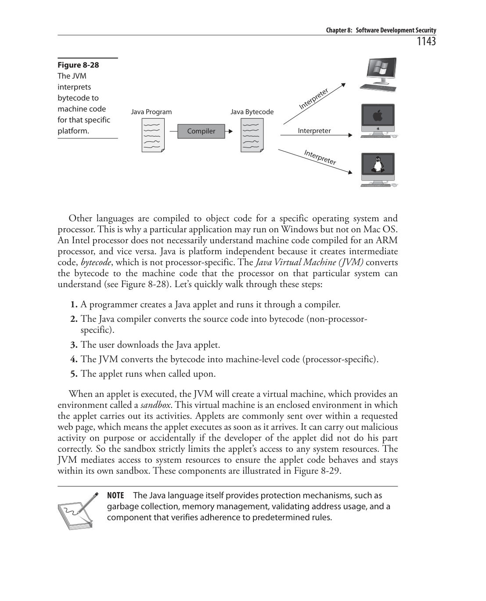
Figure 8-28
Other languages are compiled to object code for a specific operating system and processor. This is why a particular application may run on Windows but not on Mac OS. An Intel processor does not necessarily understand machine code compiled for an ARM processor, and vice versa. Java is platform independent because it creates intermediate code,bytecode, which is not processor-specific. TheJava Virtual Machine (JVM)converts the bytecode to the machine code that the processor on that particular system can understand (see Figure 8-28). Let’s quickly walk through these steps:
1.A programmer creates a Java applet and runs it through a compiler. 2.The Java compiler converts the source code into bytecode (non-processorspecific). 3.The user downloads the Java applet. 4.The JVM converts the bytecode into machine-level code (processor-specific). 5.The applet runs when called upon.
When an applet is executed, the JVM will create a virtual machine, which provides an environment called asandbox. This virtual machine is an enclosed environment in which the applet carries out its activities. Applets are commonly sent over within a requested web page, which means the applet executes as soon as it arrives. It can carry out malicious activity on purpose or accidentally if the developer of the applet did not do his part correctly. So the sandbox strictly limits the applet’s access to any system resources. The JVM mediates access to system resources to ensure the applet code behaves and stays within its own sandbox. These components are illustrated in Figure 8-29.
The Java language itself provides protection mechanisms, such as garbage collection, memory management, validating address usage, and a component that verifies adherence to predetermined rules.
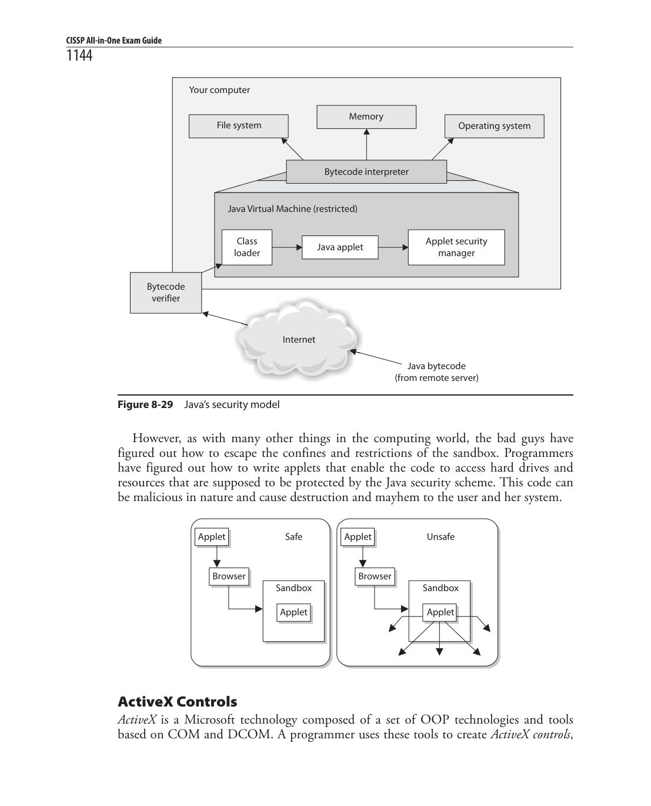
Figure 8-29Java’s security model
However, as with many other things in the computing world, the bad guys have figured out how to escape the confines and restrictions of the sandbox. Programmers have figured out how to write applets that enable the code to access hard drives and resources that are supposed to be protected by the Java security scheme. This code can be malicious in nature and cause destruction and mayhem to the user and her system.
ActiveX Controls
ActiveXis a Microsoft technology composed of a set of OOP technologies and tools based on COM and DCOM. A programmer uses these tools to createActiveX controls,
which are self-sufficient programs (similar to Java applets) that can be executed in the Windows environment. ActiveX controls can be reused by many applications within one system or different systems within an environment. These controls can be downloaded from websites to add extra functionality (as in providing animations for web pages), but they are also components of Windows operating systems themselves (dynamic link libraries [DLLs]) and carry out common operating system tasks. ActiveX allow web browsers to execute other software applications within the browser that can play media files, open Portable Document Files (PDF) documents, etc. An ActiveX control can be automatically downloaded and executed by a web browser. Once downloaded, an ActiveX control in effect becomes part of the operating system. Initially ActiveX controls were intended to work on individual systems only, and hence there weren’t many security issues. Security issues started emerging only after OLE began to be used to embed ActiveX controls in web pages. The problem lay in the fact that ActiveX controls shared the privilege levels of the current user on a system, and since these controls could be built by anyone, a malicious ActiveX control would have sufficient privilege to compromise the system security and other systems connected through it. This was worsened by the fact that ActiveX controls were able to download further ActiveX components without user authentication, creating a very favorable environment for worm propagation. ActiveX comes with acomponent containerfeature that allows multiple applications and networked computers to reuse active components. This drastically reduced the program development time. This feature too has been exploited by attackers to gain access to critical files on networked systems. Numerous patches have been released to counter reported ActiveX exploits. ActiveX technology provides security levels and authentication settings, letting users control the security of the ActiveX components they download. Unlike Java applets, ActiveX components are downloaded to a user’s hard drive when he chooses to add the functionality the component provides. This means the ActiveX component has far greater access to the user’s system compared to Java applets. The security-level setting of the user’s browser dictates whether an ActiveX component is downloaded automatically or whether the user is first prompted with a warning. The security level is configurable by the user via his browser controls. As the security level increases, so, too, does the browser’s sensitivity level to digitally signed and unsigned components and controls, and to the initialization of ActiveX scripts. The main security difference between Java applets and ActiveX controls is that Java sets up a sandbox for the applet code to execute in, and this restricts the code’s access to resources within the user’s computer. ActiveX uses Authenticode technology, which relies on digital certificates and trusting certificate authorities. Although both are extremely important and highly used technologies, they have inherent flaws. Java has not been able to ensure that all code stays within the sandbox, which has caused several types of security compromises. Authenticode doesn’t necessarily provide security— in fact, it often presents annoying dialog boxes to users. Since most users do not understand this technology, they continually click OK because they don’t understand the risks involved.
Microsoft now longer supports ActiveX in its Edge web browser.
Web Security
When it comes to the Internet and web-based applications, many security situations are unique to this area. Companies use the Internet to expose products or services to the widest possible audience; thus, they need to allow an uncontrollable number of entities on the Internet to access their web servers. In most situations companies must open up the ports related to the web-based traffic (80 and 443) on their firewalls, which are commonly used avenues for a long list of attacks. The web-based applications themselves are somewhat mysterious to the purveyors of the Internet as well. If you want to sell your homemade pies via the Internet, you’ll typically need to display them in graphic form and allow some form of communication for questions (via e-mail or online chat). You’ll need some sort of shopping cart if you want to actually collect money for your pies, and typically you’ll have to deal with interfacing with shipping and payment processing channels. If you are a master baker, you probablyaren’ta webmaster, so now you’ll have to rely on someone else to set up your website and load the appropriate applications on it. Should you develop your own PHP- or Java-based application, the benefits could be wonderful, having a customized application that would further automate your business, but the risks of developing an in-house application (especially if it’s your first time) are great if you haven’t developed the methodology, development process, quality assurance, and change control, as well as identified the risks and vulnerabilities. The alternative to developing your own web application is using an off-the-shelf variety instead. Many commercial and free options are available for nearly every e-commerce need. These are written in a variety of languages, by a variety of entities, so now the issue is, “Whom should we trust?” Do these developers have the same processes in place that you would have used yourself? Have these applications been developed and tested with the appropriate security in mind? Will these applications introduce any vulnerabilities along with the functionality they provide? Does your webmaster understand the security implications associated with the web application he suggests you use on your site for certain functionality? These are the problems that plague not only those wanting to sell homemade pies on the Internet, but also financial institutions, auction sites, and everyone who is involved in e-commerce. With these issues in mind, let’s try to define the most glaring threats associated with web-based applications and transactions.
Specific Threats for Web Environments
The most common types of vulnerabilities, threats, and complexities are covered in the following sections, which we will explore one at a time:
Administrative interfaces
- Authentication and access control
- Input validation
- Parameter validation
- Session management
Administrative Interfaces
Everyone wants to work from the coffee shop or at home in their pajamas. Webmasters and web developers are particularly fond of this concept. Although some systems mandate that administration be carried out from a local terminal, in most cases, there is an interface to administer the systems remotely, even over the Web. While this may be convenient to the webmaster, it also provides an entry point into the system for an unauthorized user. Since we are talking about the Web, using a web-based administrative interface is, in most opinions, a bad idea. If we are willing to accept the risk, the administrative interface should be at least as secure as (if not more than) the web application or service we are hosting. Abadhabitthat’sfoundeveninhigh-securityenvironmentsishard-coding authentication credentials into the links to the management interfaces, or enabling the “remember password” option. This does make it easier on the administrator but offers up too much access to someone who stumbles across the link, regardless of their intentions. Mostcommercialsoftwareandwebapplicationserversinstallsometypeof administrative console by default. Knowing this and being cognizant of the informationgathering techniques previously covered should be enough for organizations to take this threat seriously. If the management interface is not needed, it should be disabled. When custom applications are developed, the existence of management interfaces is less known, so consideration should be given to this in policy and procedures. The simple countermeasure for this threat requires that the management interfaces be removed, but this may upset your administrators. Using a stronger authentication mechanism would be better than the standard username/password scenario. Controlling which systems are allowed to connect and administer the system is another good technique. Many systems allow specific IP addresses or network IDs to be defined that only allow administrative access from these stations. Ultimately, the most secure management interface for a system would be one that isout-of-band, meaning a separate channel of communication is used to avoid any vulnerabilities that may exist in the environment that the system operates in. An example of out-of-band would be using a modem connected to a web server to dial in directly and configure it using a local interface, as opposed to connecting via the Internet and using a web interface. This should only be done through an encrypted channel, as in Secure Shell (SSH).
Authentication and Access Control
If you’ve used the Internet for banking, shopping, registering for classes, or working from home, you most likely logged in through a web-based application. From the consumer side or the provider side, the topic of authentication and access control is an obvious issue. Consumers want an access control mechanism that provides the security
and privacy they would expect from a trusted entity, but they also don’t want to be too burdened by the process. From the service providers’ perspective, they want to provide the highest amount of security to the consumer that performance, compliance, and cost will allow. So, from both of these perspectives, typically usernames and passwords are still used to control access to most web applications. Passwords do not provide much confidence when it comes to truly proving the identity of an entity. They are used because they are cheap, already built into existing software, and users are comfortable with using them. But passwords don’t prove conclusively that the user “jsmith” isreallyJohn Smith; they just prove that the person using the account jsmith has typed in the correct password. Systems that hold sensitive information (medical, financial, and so on) are commonly identified as targets for attackers. Mining usernames via search engines or simply using common usernames (like jsmith) and attempting to log in to these sites is very common. If you’ve ever signed up at a website for access to download a “free” document or file, what username did you use? Is it the same one you use for other sites? Maybe even the same password? Crafty attackers might be mining information via other websites that seem rather friendly, offering to evaluate your IQ and send you the results, or enter you into a sweepstakes. Remember that untrained, unaware users are an organization’s biggest threat. Manyfinancialorganizationsthatprovideonlinebankingfunctionalityhave implemented multifactor authentication requirements. A user may need to provide a username, password, and then a one-time password value that was sent to their cell phone or e-mail during the authentication process. Finally, a best practice is to exchange all authentication information (and all authenticated content) via a secure mechanism. This will typically mean to encrypt the credential and the channel of communication through Transport Layer Security (TLS). Some sites, however, still don’t use encrypted authentication mechanisms and have exposed themselves to the threat of attackers sniffing usernames and passwords.
Input Validation
Web servers are just like any other software applications; they can only carry out the functionality their instructions dictate. They are designed to process requests via a certain protocol. When a person searches on Google for the term “cissp,” the browser sends a request of the formhttps://www.google.com/?q=cisspusing a protocol called Hypertext Transfer Protocol (HTTP). It passes the parameter “q=cissp” to the web application on the host called www in the domain google.com. A request in this form is called a Uniform Resource Locator (URL). Like many situations in our digital world, there is more than one way to request something because computers speak several different “languages”—such as binary, hexadecimal, and many encoding mechanisms—each of which is interpreted and processed by the system as valid commands. Validating that these requests are allowed is part ofinput validationand is usually tied to coded validation rules within the web server software. Attackers have figured out how to bypass some of these coded validation rules.
Some input validation attack examples follow:
Path or directory traversalThis attack is also known as the “dot dot slash”
- because it is perpetrated by inserting the characters “../” several times into a URL to back up or traverse into directories that weren’t supposed to be accessible from the Web. The command “../” at the command prompt tells the system to back up to the previous directory (i.e., “cd ../”). If a web server’s default directory is c:\inetpub\www, a URL requesting http://www.website.com/scripts/../../../../../ windows/system32/cmd.exe?/c+dir+c:\ would issue the command to back up several directories to ensure it has gone all the way to the root of the drive and then make the request to change to the operating system directory (windows\ system32) and run the cmd.exe listing the contents of the C: drive. Access to the command shell allows extensive access for the attacker.
Unicode encodingUnicode is an industry-standard mechanism developed
- to represent the entire range of over 100,000 textual characters in the world as a standard coding format. Web servers support Unicode to support different character sets (for different languages), and, at one time, many web server software applications supported it by default. So, even if we told our systems to not allow the “../” directory traversal request previously mentioned, an attacker using Unicode could effectively make the same directory traversal request without using “/” but with any of the Unicode representations of that character (three exist: %c1%1c, %c0%9v, and %c0%af ). That request may slip through unnoticed and be processed.
URL encodingEver notice a “space” that appears as “%20” in a URL in a web
- browser? The “%20” represents the space because spaces aren’t allowed characters in a URL. Much like the attacks using Unicode characters, attackers found that they could bypass filtering techniques and make requests by representing characters differently.
Almost every web application is going to have to accept some input. When you use the Web, you are constantly asked to input information such as usernames, passwords, and credit card information. To a web application, this input is just data that is to be processed like the rest of the code in the application. Usually, this input is used as a variable and fed into some code that will process it based on its logic instructions, such as IF [username input field]=X AND [password input field]=Y THEN Authenticate. This will function well assuming there is always correct information put into the input fields. But what if the wrong information is input? Developers have to cover all the angles. They have to assume that sometimes the wrong input will be given, and they have to handle that situation appropriately. To deal with this, a routine is usually coded in that will tell the system what to do if the input isn’t what was expected. Client-side validationis when the input validation is done at the client before it is even sent back to the server to process. If you’ve missed a field in a web form and before clicking Submit, you immediately receive a message informing you that you’ve forgotten to fill in one of the fields, you’ve experienced client-side validation. Client-side validation
is a good idea because it avoids incomplete requests being sent to the server and the server having to send back an error message to the user. The problem arises when the client-side validation is theonlyvalidation that takes place. In this situation, the server trusts that the client has done its job correctly and processes the input as if it is valid. In normal situations, accepting this input would be fine, but when an attacker can intercept the traffic between the client and server and modify it or just directly make illegitimate requests to the server without using a client, a compromise is more likely. In an environment where input validation is weak, an attacker will try to input specific operating system commands into the input fields instead of what the system is expecting (such as the username and password) in an effort to trick the system into running the rogue commands. Remember that software can only do what it’s programmed to do, and if an attacker can get it to run a command, the software will execute the command just as it would if the command came from a legitimate application. If the web application is written to access a database, as most are, there is the threat ofSQL injection, where instead of valid input, the attacker puts actual database commands into the input fields, which are then parsed and run by the application. SQL (Structured Query Language) statements can be used by attackers to bypass authentication and reveal all records in a database. Remember that different layers of a system (see Figure 8-30) all have their own vulnerabilities that must be identified and fixed. A similar type of attack iscross-site scripting (XSS), in which an attacker discovers and exploits a vulnerability on a website to inject malicious code into a web application. XSS attacks enable an attacker to inject their malicious code (in client-side scripting languages, such as JavaScript) into vulnerable web pages. When an unsuspecting user visits the infected page, the malicious code executes on the victim’s browser and may lead to stolen cookies, hijacked sessions, malware execution, or bypassed access control, or aid in exploiting browser vulnerabilities. There are three different XSS vulnerabilities:
Nonpersistent XSSvulnerabilities, or reflected vulnerabilities, occur when an
- attacker tricks the victim into processing a URL programmed with a rogue script to steal the victim’s sensitive information (cookie, session ID, etc.). The principle behind this attack lies in exploiting the lack of proper input or output validation on dynamic websites.
Persistent XSSvulnerabilities, also known as stored or second-order
- vulnerabilities, are generally targeted at websites that allow users to input data that is stored in a database or any other such location, e.g., forums, message boards, guest books, etc. The attacker posts some text that contains some malicious JavaScript, and when other users later view the posts, their browsers render the page and execute the attacker’s JavaScript.
DOM (Document Object Model)–based XSS vulnerabilities are also referred to
- as local cross-site scripting. DOM is the standard structure layout to represent HTML and XML documents in the browser. In such attacks the document components such as form fields and cookies can be referenced through JavaScript. The attacker uses the DOM environment to modify the original client-side JavaScript. This causes the victim’s browser to execute the resulting abusive JavaScript code.
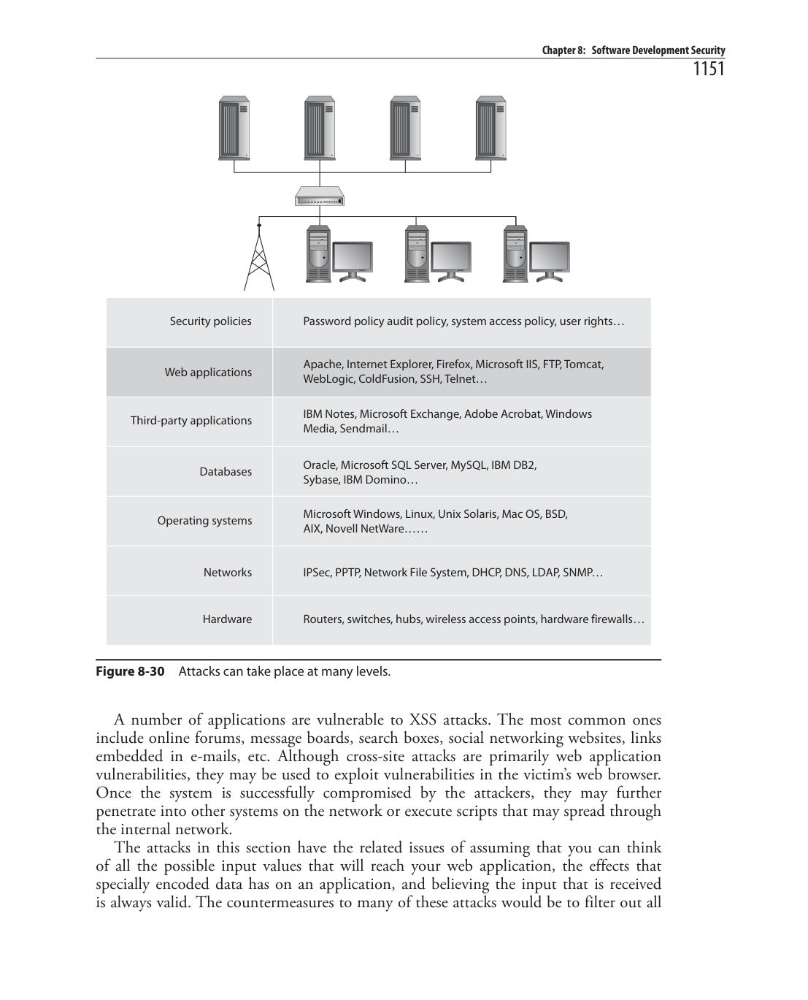
Figure 8-30Attacks can take place at many levels.
A number of applications are vulnerable to XSS attacks. The most common ones include online forums, message boards, search boxes, social networking websites, links embedded in e-mails, etc. Although cross-site attacks are primarily web application vulnerabilities, they may be used to exploit vulnerabilities in the victim’s web browser. Once the system is successfully compromised by the attackers, they may further penetrate into other systems on the network or execute scripts that may spread through the internal network. The attacks in this section have the related issues of assuming that you can think of all the possible input values that will reach your web application, the effects that specially encoded data has on an application, and believing the input that is received is always valid. The countermeasures to many of these attacks would be to filter out all
“known” malicious requests, never trust information coming from the client without first validating it, and implement a strong policy to include appropriate parameter checking in all applications.
Parameter Validation
The issue of parameter validation is akin to the issue of input validation mentioned earlier.Parameter validationis where the values that are being received by the application are validated to be within defined limits before the server application processes them within the system. The main difference between parameter validation and input validation would have to be whether the application was expecting the user to input a value as opposed to an environment variable that is defined by the application. Attacks in this area deal with manipulating values that the system would assume are beyond the client being able to configure, mainly because there isn’t a mechanism provided in the interface to do so. In an effort to provide a rich end-user experience, web application designers have to employ mechanisms to keep track of the thousands of different web browsers that could be connected at any given time. The HTTP protocol by itself doesn’t facilitate managing the state of a user’s connection; it just connects to a server, gets whatever objects (the .htm file, graphics, and so forth) are requested in the HTML code, and then disconnects. If the browser disconnects or times out, how does the server know how to recognize this? Would you be irritated if you had to re-enterallof your informationagainbecause you spent too long looking at possible flights while booking a flight online? Since most people would, web developers employ the technique of passing a cookie to the client to help the server remember things about the state of the connection. A cookie isn’t a program, but rather just data passed and stored in memory (called asession cookie), or locally as a file (called apersistent cookie), to pass state information back to the server. An example of how cookies are employed would be a shopping cart application used on a commercial website. As you put items into your cart, they are maintained by updating a session cookie on your system. You may have noticed the “Cookies must be enabled” message that some websites issue as you enter their site. Since accessing a session cookie in memory is usually beyond the reach of most users, most web developers didn’t think about this as a serious threat when designing their systems. It is not uncommon for web developers to enable account lockout after a certain number of unsuccessful login attempts have occurred. If a developer is using a session cookie to keep track of how many times a client has attempted to log in, there may be a vulnerability here. If an application didn’t want to allow more than three unsuccessful logins before locking a client out, the server might pass a session cookie to the client, setting a value such as “number of allowed logins = 3.” After each unsuccessful attempt, the server would tell the client to decrement the “number of allowed logins” value. When the value reaches 0, the client would be directed to a “Your account has been locked out” page. Aweb proxyis a piece of software installed on a system that is designed to intercept all traffic between the local web browser and the web server. Using freely available web proxy software (such as Paros Proxy or Burp Suite), an attacker could monitor and modify
any information as it travels in either direction. In the preceding example, when the server tells the client via a session cookie that the “number of allowed logins = 3,” if that information is intercepted by an attacker using one of these proxies and he changes the value to “number of allowed logins = 50000,” this would effectively allow a brute-force attack on the system if it has no other validation mechanism in place. Using a web proxy can also exploit the use of hidden fields in web pages. As its name indicates, a hidden field is not shown in the user interface, but contains a value that is passed to the server when the web form is submitted. The exploit of using hidden values can occur when a web developer codes the prices of items on a web page as hidden values instead of referencing the items and their prices on the server. The attacker uses the web proxy to intercept the submitted information from the client and changes the value (the price) before it gets to the server. This is surprisingly easy to do and, assuming no other checks are in place, would allow the perpetrator to see the new values specified in the e-commerce shopping cart. The countermeasure that would lessen the risk associated with these threats would beadequate parameter validation, which may include pre-validation and post-validation controls. In a client/server environment, pre-validation controls may be placed on the client side prior to submitting requests to the server. Even when these are employed, the server should perform parallel pre-validation of input prior to application submission because a client will have fewer controls than a server, and may have been compromised or bypassed.
Pre-validationInput controls verifying data is in appropriate format and
- compliant with application specifications prior to submission to the application. An example of this would be form field validation, where web forms do not allow letters in a field that is expecting to receive a number (currency) value.
Post-validationEnsuring an application’s output is consistent with
- expectations (that is, within predetermined constraints of reasonableness).
Session Management
As highlighted earlier, managing several thousand different clients connecting to a webbased application is a challenge. The aspect ofsession managementrequires consideration before delivering applications via the Web. The most commonly used method of managing client sessions is to assign unique session IDs to every connection. Asession IDis a value sent by the client to the server with every request that uniquely identifies the client to the server or application. In the event that an attacker were able to acquire or even guess an authenticated client’s session ID and render it to the server as its own session ID, the server would be fooled and the attacker would have access to the session. The old “never send anything in cleartext” rule certainly applies here. HTTP traffic is unencrypted by default and does nothing to combat an attacker sniffing session IDs off the wire. Because session IDs are usually passed in, and maintained, via HTTP, they should be protected in some way. An attacker being able to predict or guess the session IDs would also be a threat in this type of environment. Using sequential session IDs for clients would be a mistake.
Random session IDs of an appropriate length would counter session ID prediction. Building in some sort of timestamp or time-based validation will combatreplay attacks, a simple attack in which an attacker captures the traffic from a legitimate session and replays it to authenticate his session. Finally, any cookies that are used to keep state on the connection should also be encrypted.
Web Application Security Principles
Considering their exposed nature, websites are primary targets during an attack. It is, therefore, essential for web developers to abide by the time-honored and time-tested principles to provide the maximum level of deterrence to attackers. Web application security principles are meant to govern programming practices to regulate programming styles and strategically reduce the chances of repeating known software bugs and logical flaws. A good number of websites are exploited on the basis of vulnerabilities arising from reckless programming. With the forever growing number of websites out there, the possibility of exploiting the exploitable code is vast. The first pillar of implementing security principles is analyzing the website architecture. The clearer and simpler a website is, the easier it is to analyze its various security aspects. Once a website has been strategically analyzed, the user-generated input fed into the website also needs to be critically scrutinized. As a rule, all input must be considered unsafe, or rogue, and ought to be sanitized before being processed. Likewise, all output generated by the system should also be filtered to ensure private or sensitive data is not being disclosed. In addition, using encryption helps secure the input/output operations of a web application. Though encrypted data may be intercepted by malicious users, it should only be readable, or modifiable, by those with the secret key used to encrypt it. In the event of an error, websites ought to be designed to behave in a predictable and noncompromising manner. This is also generally referred to asfailing securely. Systems that fail securely display friendly error messages without revealing internal system details. An important element in designing security functionality is keeping in perspective the human element. Though programmers may be tempted to prompt users for passwords on every mouse click, to keep security effective, web developers must maintain a state of equilibrium between functionality and security. Tedious authentication techniques usually do not stay in practice for too long. Experience has shown that the best security measures are those that are simple, intuitive, and psychologically acceptable. A common but ineffective approach to security implementation is the use of “security through obscurity.” Security through obscurity assumes that creating overly complex or perplexing programs can reduce the chances of interventions in the software. Though obscure programs may take a tad longer to dissect, this does not guarantee protection from resolute and determined attackers. Protective measures, hence, cannot consist solely of obfuscation. At the end, it is important to realize that the implementation of even the most beefy security techniques, without tactical considerations, will cause a website to remain as weak as its weakest link. That link could very well allow adversaries to reach the crown jewels of most organizations: their data.
Database Management
Databases have a long history of storing important intellectual property and items that are considered valuable and proprietary to companies. Because of this, they usually live in an environment of mystery to all but the database and network administrators. The less anyone knows about the databases, the better. Users generally access databases indirectly through a client interface, and their actions are restricted to ensure the confidentiality, integrity, and availability of the data held within the database and the structure of the database itself. The risks are increasing as companies run to connect their networks to the Internet, allow remote user access, and provide more and more access to external entities. A large risk to understand is that these activities can allow indirect access to a back-end database. In the past, employees accessed customer information held in databases instead of allowing customers to access it themselves. Today, many companies allow their customers to access data in their databases through a browser. The browser makes a connection to the company’s middleware, which then connects them to the back-end database. This adds levels of complexity, and the database is accessed in new and unprecedented ways. One example is in the banking world, where online banking is all the rage. Many financial institutions want to keep up with the times and add the services they think their customers will want. But online banking is not just another service like being able to order checks. Most banks work in closed (or semiclosed) environments, and opening their environments to the Internet is a huge undertaking. The perimeter network needs to be secured, middleware software has to be developed or purchased, and the database should be behind one or, preferably, multiple firewalls. Many times, components in the business application tier are used to extract data from the databases and process the customer requests. Access control can be restricted by only allowing roles to interact with the database. The database administrator can define specific roles that are allowed to access the database. Each role has assigned rights and permissions, and customers and employees are then ported into these roles. Any user who is not within one of these roles is denied access. This means that if an attacker compromises the firewall and other perimeter network protection mechanisms, and then is able to make requests to the database, if he is not in one of the predefined roles, the database is still safe. This process streamlines access control and ensures that no users or evildoers can access the database directly, but must access it indirectly through a role account. Figure 8-31 illustrates these concepts.
Database Management Software
Adatabaseis a collection of data stored in a meaningful way that enables multiple users and applications to access, view, and modify that data as needed. Databases are managed with software that provides these types of capabilities. It also enforces access control restrictions, provides data integrity and redundancy, and sets up different procedures for data manipulation. This software is referred to as adatabase management system (DBMS) and is usually controlled by database administrators. Databases not only store data, but may also process data and represent it in a more usable and logical form. DBMSs
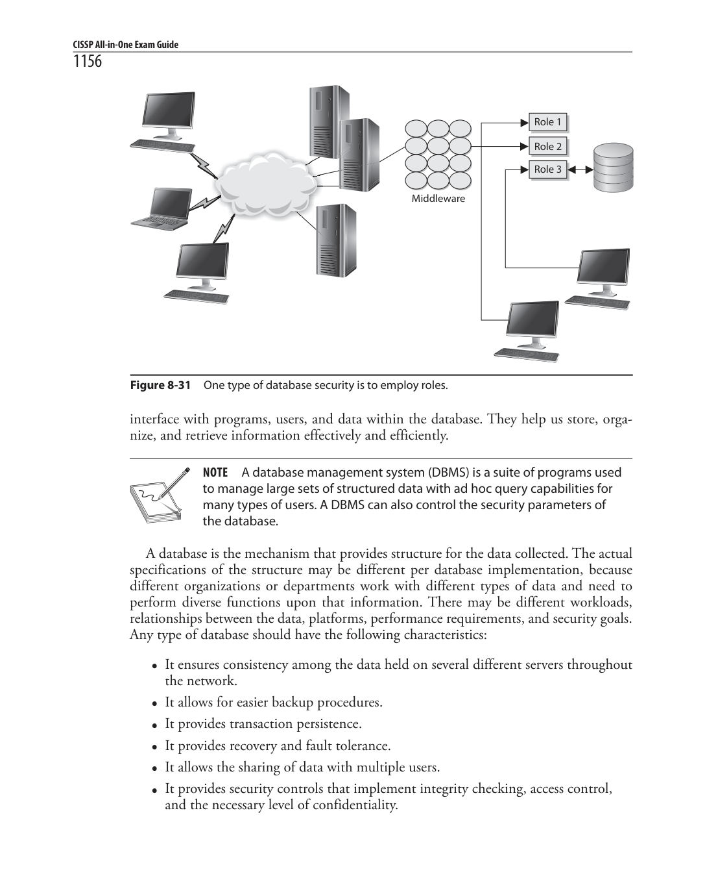
Figure 8-31One type of database security is to employ roles.
interface with programs, users, and data within the database. They help us store, organize, and retrieve information effectively and efficiently.
A database management system (DBMS) is a suite of programs used to manage large sets of structured data with ad hoc query capabilities for many types of users. A DBMS can also control the security parameters of thedatabase. A database is the mechanism that provides structure for the data collected. The actual specifications of the structure may be different per database implementation, because different organizations or departments work with different types of data and need to perform diverse functions upon that information. There may be different workloads, relationships between the data, platforms, performance requirements, and security goals. Any type of database should have the following characteristics: It ensures consistency among the data held on several different servers throughout
- the network.
It allows for easier backup procedures.
- It provides transaction persistence.
- It provides recovery and fault tolerance.
- It allows the sharing of data with multiple users.
- It provides security controls that implement integrity checking, access control,
- and the necessary level of confidentiality.
Transaction persistencemeans the database procedures carrying out transactions are durable and reliable. The state of the database’s security should be the same after a transaction has occurred, and the integrity of the transaction needs to be ensured. Because the needs and requirements for databases vary, different data models can be implemented that align with different business and organizational needs.
Database Models
The database model defines the relationships between different data elements; dictates how data can be accessed; and defines acceptable operations, the type of integrity offered, and how the data is organized. A model provides a formal method of representing data in a conceptual form and provides the necessary means of manipulating the data held within the database. Databases come in several types of models, as listed next:
Relational
- Hierarchical
- Network
- Object-oriented
- Object-relational
- Arelational database modeluses attributes (columns) and tuples (rows) to contain and organize information (see Figure 8-32). The relational database model is the most widely used model today. It presents information in the form of tables. A relational database is composed of two-dimensional tables, and each table contains unique rows, columns, and cells (the intersection of a row and a column). Each cell contains only one data value that represents a specific attribute value within a given tuple. These data entities are linked by relationships. The relationships between the data entities provide the framework for organizing data. Aprimary keyis a field that links all the data within a record to a unique value. For example, in the table in Figure 8-32, the primary keys are Product G345 and
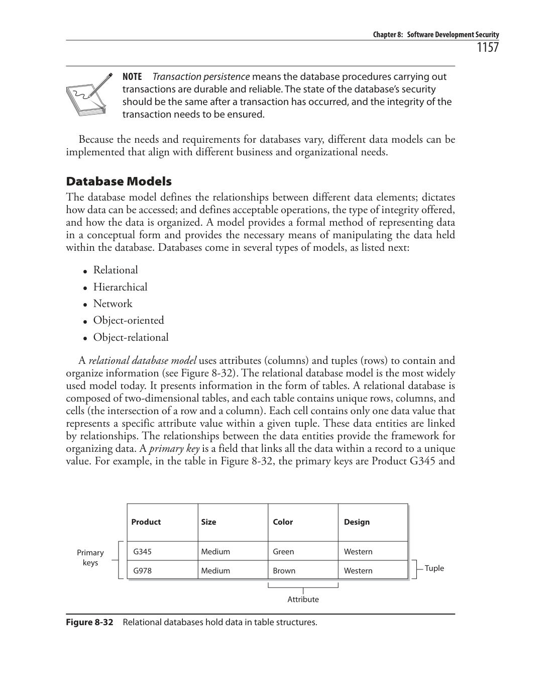
Figure 8-32Relational databases hold data in table structures.
Product G978. When an application or another record refers to this primary key, it is actually referring to all the data within that given row. Ahierarchical data model(see Figure 8-33) combines records and fields that are related in a logical tree structure. The structure and relationship between the data elements are different from those in a relational database. In the hierarchical database the parents can have one child, many children, or no children. The tree structure contains branches, and each branch has a number of leaves, or data fields. These databases have well-defined, prespecified access paths, but are not as flexible in creating relationships between data elements as a relational database. Hierarchical databases are useful for mapping one-tomany relationships. The hierarchical structured database is one of the first types of database model created, but is not as common as relational databases. To be able to access a certain data entity within a hierarchical database requires the knowledge of which branch to start with and which route to take through each layer until the data is reached. Unlike relational databases, it does not use indexes to search procedures, and links (relationships) cannot be created between different branches and leaves on different layers.
The hierarchical model is almost always employed when building indexes for relational databases. An index can be built on any attribute and allows for very fast searches of the data over that attribute.
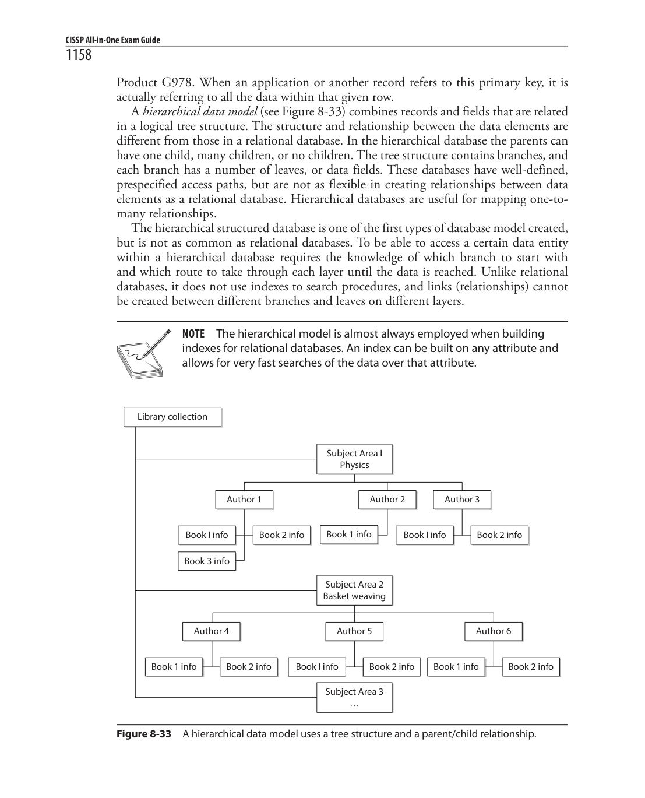
Figure 8-33A hierarchical data model uses a tree structure and a parent/child relationship.
The most commonly used implementation of the hierarchical model is in the Lightweight Directory Access Protocol (LDAP) model. This model is used in the Windows Registry structure and different file systems, but it is not commonly used in newer database products. Thenetwork database modelis built upon the hierarchical data model. Instead of being constrained by having to know how to go from one branch to another and then from one parent to a child to find a data element, the network database model allows each data element to have multiple parent and child records. This forms a redundant networklike structure instead of a strict tree structure. (The name does not indicate it is on or distributed throughout a network; it just describes the data element relationships.) Figure 8-34 shows how a network database model sets up a structure that is similar to a mesh network topology for the sake of redundancy and allows for quick retrieval of data compared to the hierarchical model. The network database model uses the constructs of records and sets. A record contains fields, which may lay out in a hierarchical structure. Sets define the one-tomany relationships between the different records. One record can be the “owner” of any number of sets, and the same “owner” can be a member of different sets. This means that one record can be the “top dog” and have many data elements underneath it, or
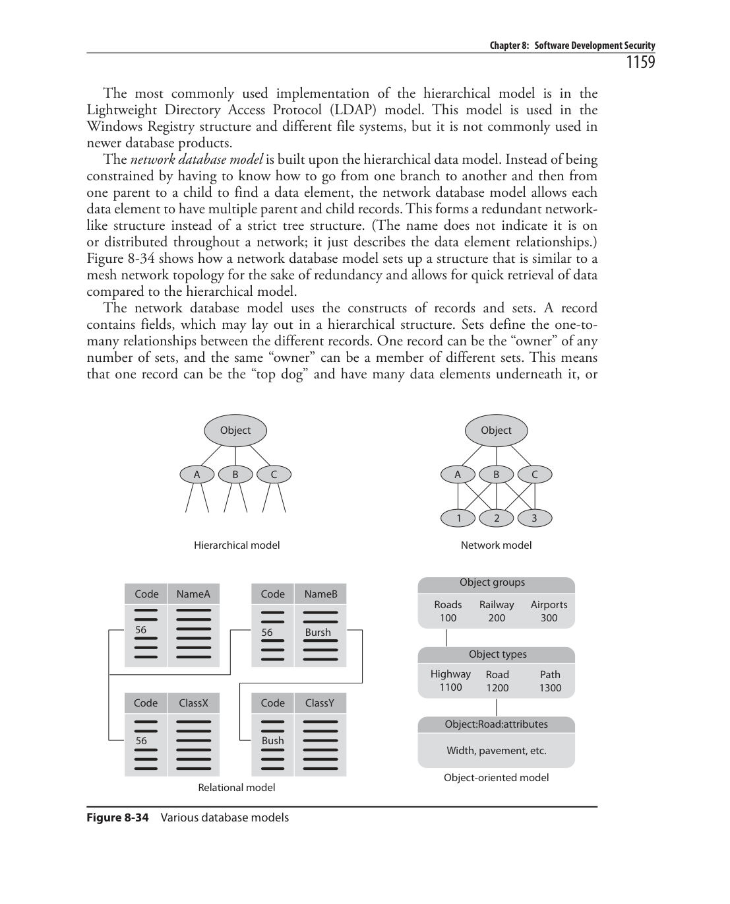
Figure 8-34Various database models
that record can be lower on the totem pole and be beneath a different field that isits “top dog.” This allows for a lot of flexibility in the development of relationships between dataelements. Anobject-oriented databaseis designed to handle a variety of data types (images, audio, documents, video). An object-oriented database management system (ODBMS) is more dynamic in nature than a relational database, because objects can be created when needed and the dataandprocedure (called method) go with the object when it is requested. In a relational database, the application has to use its own procedures to obtain data from the database and then process the data for its needs. The relational database does not actually provide procedures, as object-oriented databases do. The object-oriented database has classes to define the attributes and procedures of its objects. As an analogy, let’s say two different companies provide the same data to their customer bases. If you go to Company A (relational), the person behind the counter will just give you a piece of paper that contains information. Now you have to figure out what to do with that information and how to properly use it for your needs. If you go to Company B (object-oriented), the person behind the counter will give you a box. Within this box is a piece of paper with information on it, but you will also be given a couple of tools to process the data for your needs instead of you having to do it yourself. So in objectoriented databases, when your application queries for some data, what is returned is not only the data, but also the code to carry out procedures on this data. The goal of creating this type of model was to address the limitations that relational databases encountered when large amounts of data must be stored and processed. An object-oriented database also does not depend upon SQL for interactions, so applications that are not SQL clients can work with these types of databases.
Structured Query Language (SQL) is a standard programming language used to allow clients to interact with a database. Many database products support SQL. It allows clients to carry out operations such as inserting, updating, searching, and committing data. When a client interacts with a database, it is most likely using SQL to carry out requests.
Database Jargon
The following are some key database terms:
RecordA collection of related data items.
- FileA collection of records of the same type.
- DatabaseA cross-referenced collection of data.
- DBMSManages and controls the database.
- TupleA row in a two-dimensional database.
- AttributeA column in a two-dimensional database.
- Primary keyColumns that make each row unique. (Every row of a table
- must include a primary key.)
ViewA virtual relation defined by the database administrator in order to
- keep subjects from viewing certain data.
Foreign keyAn attribute of one table that is related to the primary key of
- another table.
CellAn intersection of a row and a column.
- SchemaDefines the structure of the database.
- Data dictionaryCentral repository of data elements and their relationships.
- Anobject-relational database (ORD)or object-relational database management system (ORDBMS) is a relational database with a software front end that is written in an objectoriented programming language. Why would we create such a silly combination? Well, a relational database just holds data in static two-dimensional tables. When the data is accessed, some type of processing needs to be carried out on it—otherwise, there is really no reason to obtain the data. If we have a front end that provides the procedures (methods) that can be carried out on the data, then each and every application that accesses this database does not need to have the necessary procedures. This means that each and every application does not need to contain the procedures necessary to gain what it really wants from this database. Different companies will have different business logic that needs to be carried out on the stored data. Allowing programmers to develop this front-end software piece allows the business logic procedures to be used by requesting applications and the data within the database. For example, if we had a relational database that contains inventory data for our company, we might want to be able to use this data for different business purposes. One application can access that database and just check the quantity of widget A products we have in stock. So a front-end object that can carry out that procedure will be created, the data will be grabbed from the database by this object, and the answer will be provided to the requesting application. We also have a need to carry out a trend analysis, which will indicate which products were moved the most from inventory to production. A different object that can carry out this type of calculation will gather the necessary data and present it to our requesting application. We have many different ways we need to view the data in that database: how many products were damaged during transportation, how fast did each vendor fulfill our supply requests, how much does it cost to ship the different products based on their weights, and so on. The data objects in Figure 8-35 contain these different business logic instructions.
Database Programming Interfaces
Data is useless if you can’t access it and use it. Applications need to be able to obtain and interact with the information stored in databases. They also need some type of interface
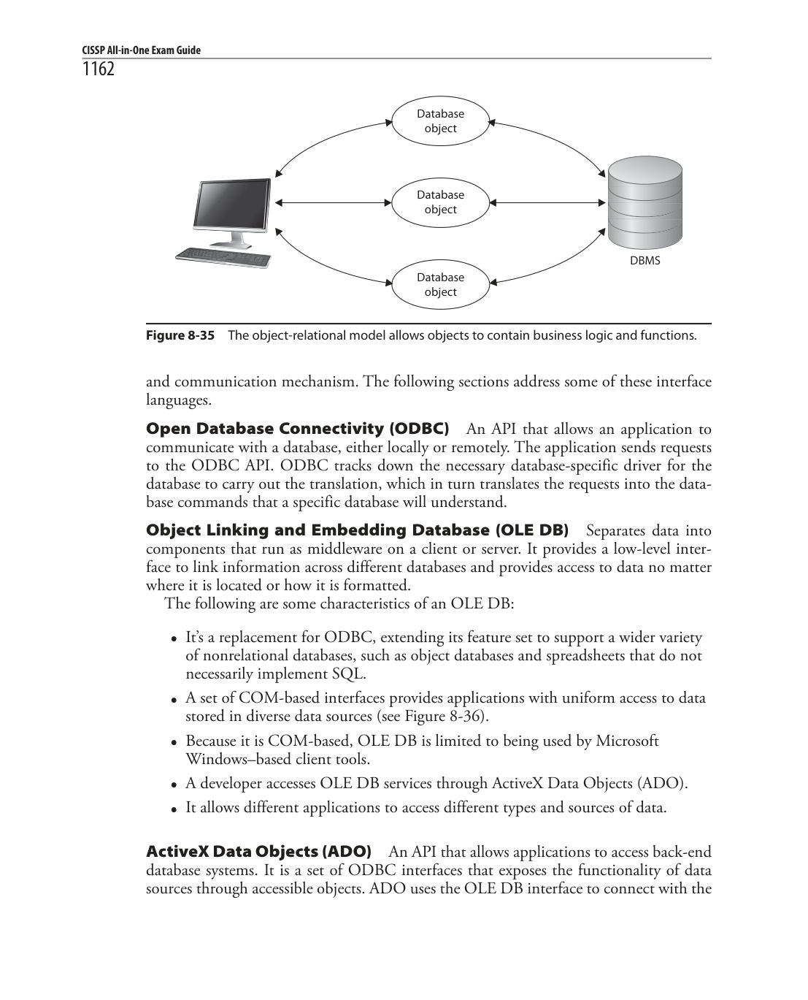
Figure 8-35The object-relational model allows objects to contain business logic and functions.
and communication mechanism. The following sections address some of these interface languages.
Open Database Connectivity (ODBC)An API that allows an application to communicate with a database, either locally or remotely. The application sends requests to the ODBC API. ODBC tracks down the necessary database-specific driver for the database to carry out the translation, which in turn translates the requests into the database commands that a specific database will understand.
Object Linking and Embedding Database (OLE DB)Separates data into components that run as middleware on a client or server. It provides a low-level interface to link information across different databases and provides access to data no matter where it is located or how it is formatted. The following are some characteristics of an OLE DB:
It’s a replacement for ODBC, extending its feature set to support a wider variety
- of nonrelational databases, such as object databases and spreadsheets that do not necessarily implement SQL.
A set of COM-based interfaces provides applications with uniform access to data
- stored in diverse data sources (see Figure 8-36).
Because it is COM-based, OLE DB is limited to being used by Microsoft
- Windows–based client tools.
A developer accesses OLE DB services through ActiveX Data Objects (ADO).
- It allows different applications to access different types and sources of data.
- ActiveX Data Objects (ADO)An API that allows applications to access back-end database systems. It is a set of ODBC interfaces that exposes the functionality of data sources through accessible objects. ADO uses the OLE DB interface to connect with the
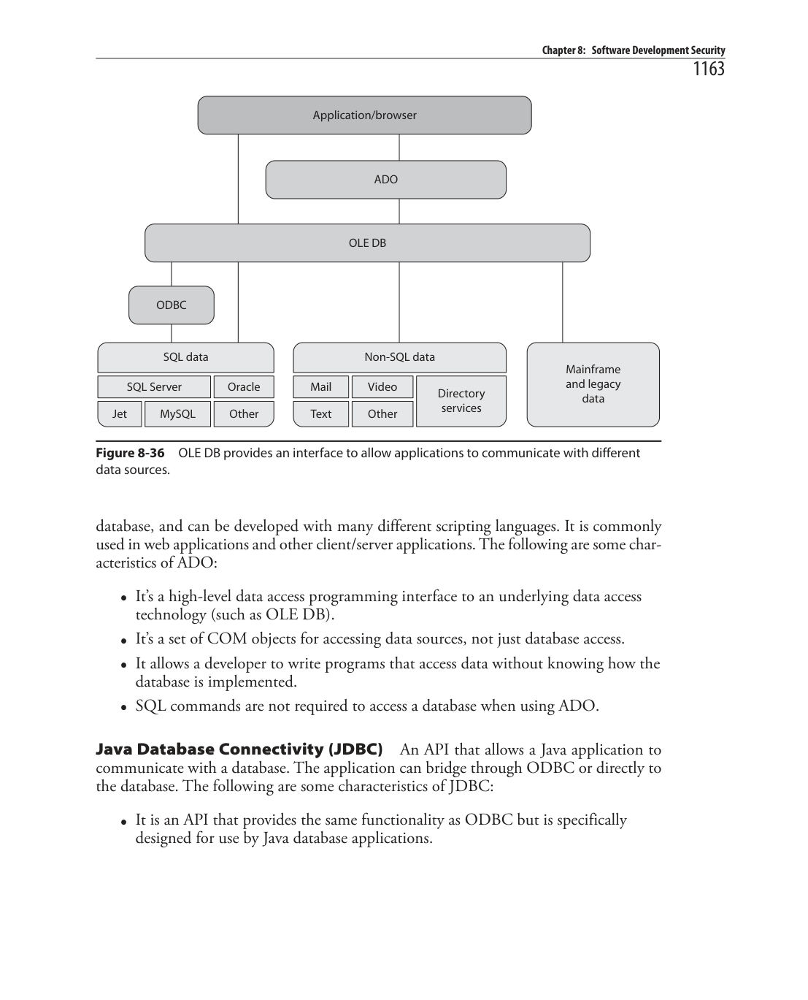
Figure 8-36OLE DB provides an interface to allow applications to communicate with different
database, and can be developed with many different scripting languages. It is commonly used in web applications and other client/server applications. The following are some characteristics of ADO:
It’s a high-level data access programming interface to an underlying data access
- technology (such as OLE DB).
It’s a set of COM objects for accessing data sources, not just database access.
- It allows a developer to write programs that access data without knowing how the
- database is implemented.
SQL commands are not required to access a database when using ADO.
- Java Database Connectivity (JDBC)An API that allows a Java application to communicate with a database. The application can bridge through ODBC or directly to the database. The following are some characteristics of JDBC:
It is an API that provides the same functionality as ODBC but is specifically
- designed for use by Java database applications.
It has database-independent connectivity between the Java platform and a wide
- range of databases.
It is a Java API that enables Java programs to execute SQL statements.
Relational Database Components
Like all software, databases are built with programming languages. Most database languages include adata definition language (DDL), which defines the schema; adata manipulation language (DML), which examines data and defines how the data can be manipulated within the database; adata control language (DCL), which defines the internal organization of the database; and anad hoc query language (QL), which defines queries that enable users to access the data within the database. Each type of database model may have many other differences, which vary from vendor to vendor. Most, however, contain the following basic core functionalities:
Data definition language (DDL)Defines the structure and schema of the
- database. Thestructurecould mean the table size, key placement, views, and data element relationship. Theschemadescribes the type of data that will be held and manipulated, and their properties. It defines the structure of the database, access operations, and integrity procedures.
Data manipulation language (DML)Contains all the commands that enable
- a user to view, manipulate, and use the database (view, add, modify, sort, and delete commands).
Query language (QL)Enables users to make requests of the database.
- Report generatorProduces printouts of data in a user-defined manner.
Data Dictionary
Adata dictionaryis a central collection of data element definitions, schema objects, and reference keys. The schema objects can contain tables, views, indexes, procedures, functions, and triggers. A data dictionary can contain the default values for columns, integrity information, the names of users, the privileges and roles for users, and auditing information. It is a tool used to centrally manage parts of a database by controlling data about the data (referred to asmetadata) within the database. It provides a cross-reference between groups of data elements and the databases. The database management software creates and reads the data dictionary to ascertain what schema objects exist and checks to see if specific users have the proper access rights to view them (see Figure 8-37). When users look at the database, they can be restricted by specific views. The different view settings for each user are held within the data dictionary. When new tables, new rows, or new schemas are added, the data dictionary is updated to reflect this.
Primary vs. Foreign Key
Theprimary keyis an identifier of a row and is used for indexing in relational databases. Each row must have a unique primary key to properly represent the row as one entity.
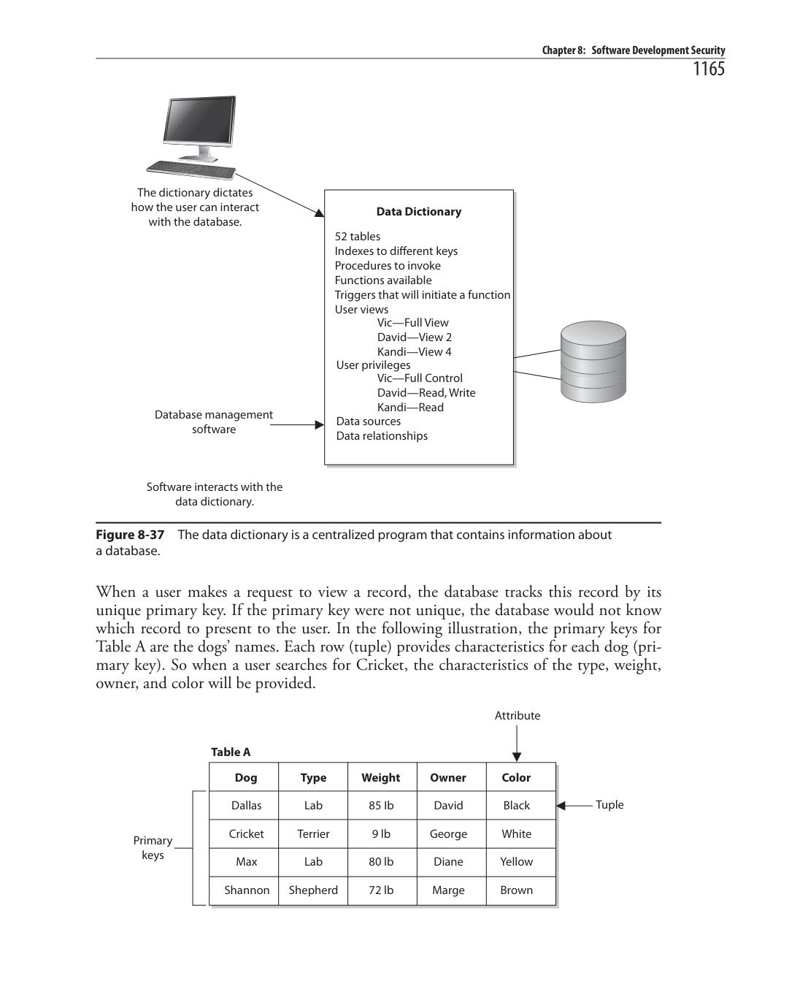
Figure 8-37The data dictionary is a centralized program that contains information about
When a user makes a request to view a record, the database tracks this record by its unique primary key. If the primary key were not unique, the database would not know which record to present to the user. In the following illustration, the primary keys for Table A are the dogs’ names. Each row (tuple) provides characteristics for each dog (primary key). So when a user searches for Cricket, the characteristics of the type, weight, owner, and color will be provided.
A primary key is different from a foreign key, although they are closely related. If an attribute in one table has a value matching the primary key in another table and there is a relationship set up between the two of them, this attribute is considered aforeign key. This foreign key is not necessarily the primary key in its current table. It only has to contain the same information that is held in another table’s primary key and be mapped to the primary key in this other table. In the following illustration, a primary key for Table A is Dallas. Because Table B has an attribute that contains the same data as this primary key and there is a relationship set up between these two keys, it is referred to as a foreign key. This is another way for the database to track relationships between the data that it houses.
We can think of being presented with a web page that contains the data on Table B. If we want to know more about this dog named Dallas, we double-click that value and the browser presents the characteristics about Dallas that are in Table A. This allows us to set up our databases with the relationship between the different data elements as we see fit.
Integrity
Like other resources within a network, a database can run intoconcurrencyproblems. Concurrency issues come up when there is data that will be accessed and modified at the
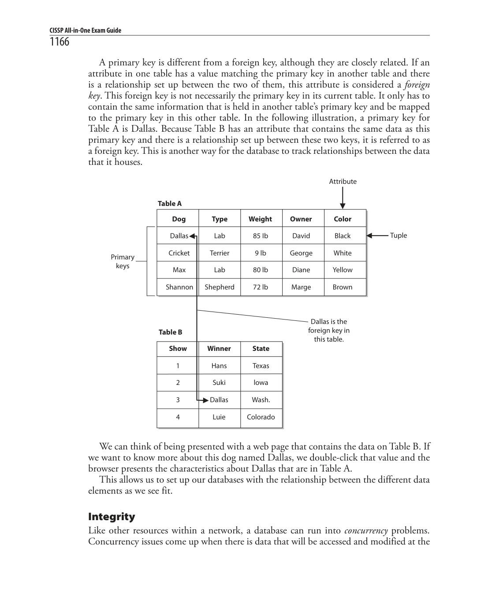
Diagram (p. 1200)
same time by different users and/or applications. As an example of a concurrency problem, suppose that two groups use one price sheet to know how much stock to order for the next week and also to calculate the expected profit. If Dan and Elizabeth copy this price sheet from the file server to their workstations, they each have a copy of the original file. Suppose that Dan changes the stock level of computer books from 120 to 5 because his group sold 115 book in the last three days. He also uses the current prices listed in the price sheet to estimate his group’s expected profits for the next week. Elizabeth reduces the price on several computer books on her copy of the price sheet and sees that the stock level of computer books is still over 100, so she chooses not to order any more for next week for her group. Dan and Elizabeth do not communicate this different information to each other, but instead upload their copies of the price sheet to the server for everyone to view and use. Dan copies his changes back to the file server, and then 30 seconds later Elizabeth copies her changes over Dan’s changes. So, the file only reflects Elizabeth’s changes. Because they did not synchronize their changes, they are both now using incorrect data. Dan’s profit estimates are off because he does not know that Elizabeth reduced the prices, and next week Elizabeth will have no computer books because she did not know that the stock level had dropped to five. The same thing happens in databases. If controls are not in place, two users can access and modify the same data at the same time, which can be detrimental to a dynamic environment. To ensure that concurrency issues do not cause problems, processes can locktables within a database, make changes, and then release the software lock. The next process that accesses the table will then have the updated information. Locking ensures that two processes do not access the same table at the same time. Pages, tables, rows, and fields can be locked to ensure that updates to data happen one at a time, which enables each process and subject to work with correct and accurate information. Database software performs three main types of integrity services:
Asemantic integritymechanism makes sure structural and semantic rules are
- enforced. These rules pertain to data types, logical values, uniqueness constraints, and operations that could adversely affect the structure of the database.
A database hasreferential integrityif all foreign keys reference existing primary
- keys. There should be a mechanism in place that ensures no foreign key contains a reference to a primary key of a nonexistent record, or a null value.
Entity integrityguarantees that the tuples are uniquely identified by primary key
- values. In the previous illustration, the primary keys are the names of the dogs, in which case, no two dogs could have the same name. For the sake of entity integrity, every tuple must contain one primary key. If it does not have a primary key, it cannot be referenced by the database.
The database must not contain unmatched foreign key values. Every foreign key refers to an existing primary key. In the example presented in the previous section, if the foreign key in Table B is Dallas, then Table A must contain a record for a dog named Dallas.
If these values do not match, then their relationship is broken, and again the database cannot reference the information properly. Other configurable operations are available to help protect the integrity of the data within a database. These operations are rollbacks, commits, savepoints, checkpoints, and two-phase commits. Therollbackis an operation that ends a current transaction and cancels the current changes to the database. These changes could have taken place to the data held within the database or a change to the schema. When a rollback operation is executed, the changes are cancelled and the database returns to its previous state. A rollback can take place if the database has some type of unexpected glitch or if outside entities disrupt its processing sequence. Instead of transmitting and posting partial or corrupt information, the database will roll back to its original state and log these errors and actions so they can be reviewed later. Thecommitoperation completes a transaction and executes all changes just made by the user. As its name indicates, once the commit command is executed, the changes are committed and reflected in the database. These changes can be made to data or schema information. Because these changes are committed, they are then available to all other applications and users. If a user attempts to commit a change and it cannot complete correctly, a rollback is performed. This ensures that partial changes do not take place and that data is not corrupted. Savepointsare used to make sure that if a system failure occurs, or if an error is detected, the database can attempt to return to a point before the system crashed or hiccupped. For a conceptual example, say Dave typed, “Jeremiah was a bullfrog. He was <savepoint> a good friend of mine.” (The system inserted a savepoint.) Then a freak storm came through and rebooted the system. When Dave got back into the database client application, he might see “Jeremiah was a bullfrog. He was,” but the rest was lost. Therefore, the savepoint saved some of his work. Databases and other applications will use this technique to attempt to restore the user’s work and the state of the database after a glitch, but some glitches are just too large and invasive to overcome. Savepoints are easy to implement within databases and applications, but a balance must be struck between too many and not enough savepoints. Having too many savepoints can degrade the performance, whereas not having enough savepoints runs the risk of losing data and decreasing user productivity because the lost data would have to be reentered. Savepoints can be initiated by a time interval, a specific action by the user, or the number of transactions or changes made to the database. For example, a database can set a savepoint for every 15 minutes, every 20 transactions completed, each time a user gets to the end of a record, or every 12 changes made to the databases. So a savepoint restores data by enabling the user to go back in time before the system crashed or hiccupped. This can reduce frustration and help us all live in harmony. Checkpointsare very similar to savepoints. When the database software fills up a certain amount of memory, a checkpoint is initiated, which saves the data from the memory segment to a temporary file. If a glitch is experienced, the software will try to use this information to restore the user’s working environment to its previous state.
Atwo-phase commitmechanism is yet another control that is used in databases to ensure the integrity of the data held within the database. Databases commonly carry out transaction processes, which means the user and the database interact at the same time. The opposite isbatch processing, which means that requests for database changes are put into a queue and activated all at once—not at the exact time the user makes the request. In transactional processes, many times a transaction will require that more than one database be updated during the process. The databases need to make sure each database is properly modified, or no modification takes place at all. When a database change is submitted by the user, the different databases initially store these changes temporarily. A transaction monitor will then send out a “pre-commit” command to each database. If all the right databases respond with an acknowledgment, then the monitor sends out a “commit” command to each database. This ensures that all of the necessary information is stored in all the right places at the right time.
Database Security Issues
The two main database security issues this section addresses are aggregation and inference.Aggregationhappens when a user does not have the clearance or permission to access specific information, but she does have the permission to access components of this information. She can then figure out the rest and obtain restricted information. She can learn of information from different sources and combine it to learn something she does not have the clearance to know.
Aggregation is the act of combining information from separate sources. The combination of the data forms new information, which the subject does not have the necessary rights to access. The combined information has a sensitivity that is greater than that of the individual parts. The following is a silly conceptual example. Let’s say a database administrator does not want anyone in the Users group to be able to figure out a specific sentence, so he segregates the sentence into components and restricts the Users group from accessing it, as represented in Figure 8-38. Emily, through each of three different roles she has, can access components A, C, and F. Because she is particularly bright (aWheel of Fortune whiz), she figures out the sentence and now knows the restricted secret. To prevent aggregation, the subject, and any application or process acting on the subject’s behalf, needs to be prevented from gaining access to the whole collection, including the independent components. The objects can be placed into containers, which are classified at a higher level to prevent access from subjects with lower-level permissions or clearances. A subject’s queries can also be tracked, and context-dependent access control can be enforced. This would keep a history of the objects that a subject has accessed and restrict an access attempt if there is an indication that an aggregation attack is under way. The other security issue isinference, which is the intended result of aggregation. The inference problem happens when a subject deduces the full story from the pieces
Thechickenworefunny
redculottes
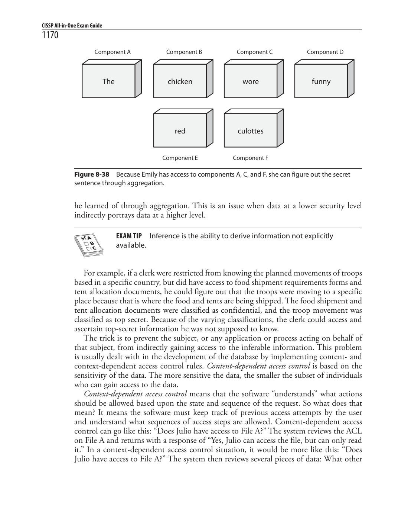
Figure 8-38Because Emily has access to components A, C, and F, she can figure out the secret
he learned of through aggregation. This is an issue when data at a lower security level indirectly portrays data at a higher level.
Inference is the ability to derive information not explicitly available.
For example, if a clerk were restricted from knowing the planned movements of troops based in a specific country, but did have access to food shipment requirements forms and tent allocation documents, he could figure out that the troops were moving to a specific place because that is where the food and tents are being shipped. The food shipment and tent allocation documents were classified as confidential, and the troop movement was classified as top secret. Because of the varying classifications, the clerk could access and ascertain top-secret information he was not supposed to know. The trick is to prevent the subject, or any application or process acting on behalf of that subject, from indirectly gaining access to the inferable information. This problem is usually dealt with in the development of the database by implementing contentand context-dependent access control rules.Content-dependent access controlis based on the sensitivity of the data. The more sensitive the data, the smaller the subset of individuals who can gain access to the data. Context-dependent access controlmeans that the software “understands” what actions should be allowed based upon the state and sequence of the request. So what does that mean? It means the software must keep track of previous access attempts by the user and understand what sequences of access steps are allowed. Content-dependent access control can go like this: “Does Julio have access to File A?” The system reviews the ACL on File A and returns with a response of “Yes, Julio can access the file, but can only read it.” In a context-dependent access control situation, it would be more like this: “Does Julio have access to File A?” The system then reviews several pieces of data: What other
access attempts has Julio made? Is this request out of sequence of how a safe series of requests takes place? Does this request fall within the allowed time period of system access (8a.m. to 5p.m.)? If the answers to all of these questions are within a set of preconfigured parameters, Julio can access the file. If not, he is denied access. If context-dependent access control is being used to protect against inference attacks, the database software would need to keep track of what the user is requesting. So Julio makes a request to see field 1, then field 5, then field 20, which the system allows, but once he asks to see field 15, the database does not allow this access attempt. The software must be preprogrammed (usually through a rule-based engine) as to what sequence and how much data Julio is allowed to view. If he is allowed to view more information, he may have enough data to infer something we don’t want him to know. Obviously, content-dependent access control is not as complex as context-dependent access control because of the amount of items that needs to be processed by the system. Some other common attempts to prevent inference attacks are cell suppression, partitioning the database, and noise and perturbation.Cell suppressionis a technique used to hide specific cells that contain information that could be used in inference attacks. Partitioninga database involves dividing the database into different parts, which makes it much harder for an unauthorized individual to find connecting pieces of data that can be brought together and other information that can be deduced or uncovered.Noise and perturbationis a technique of inserting bogus information in the hopes of misdirecting an attacker or confusing the matter enough that the actual attack will not be fruitful. Often, security is not integrated into the planning and development of a database. Security is an afterthought, and a trusted front end is developed to be used with the database instead. This approach is limited in the granularity of security and in the types of security functions that can take place. As previously mentioned in this chapter, a common theme in security is a balance between effective security and functionality. In many cases, the more you secure something, the less functionality you have. Although this could be the desired result, it is important not to impede user productivity when security is being introduced.
Database Views
Databases can permit one group, or a specific user, to see certain information while restricting another group from viewing it altogether. This functionality happens through the use ofdatabase views, illustrated in Figure 8-39. If a database administrator wants to allow middle management members to see their departments’ profits and expenses but not show them the whole company’s profits, the DBA can implement views. Senior management would be given all views, which contain all the departments’ and the company’s profit and expense values, whereas each individual manager would only be able to view his or her department values. Like operating systems, databases can employ discretionary access control (DAC) and mandatory access control (MAC), which are explained in Chapter 5. Views can be displayed according to group membership, user rights, or security labels. If a DAC system is employed, then groups and users can be granted access through views based on their identity, authentication, and authorization. If a MAC system in place, then
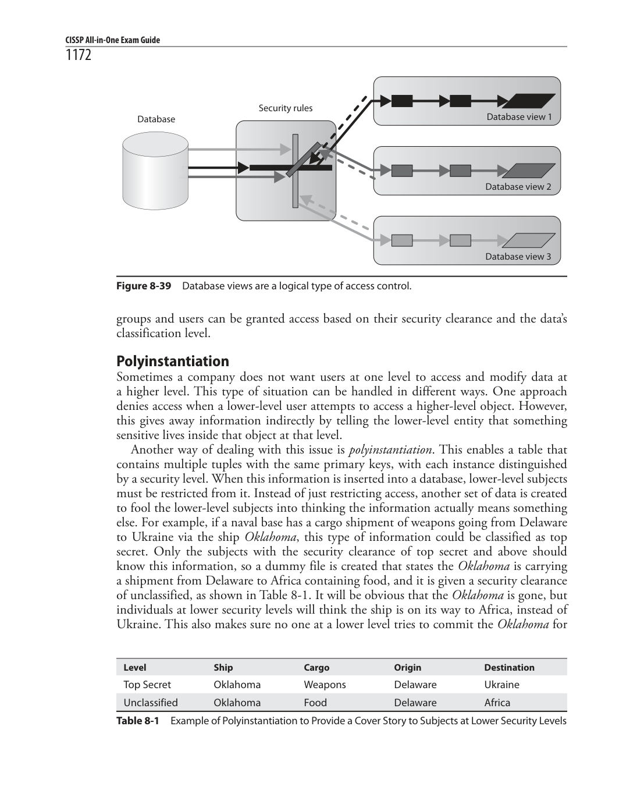
Figure 8-39Database views are a logical type of access control.
groups and users can be granted access based on their security clearance and the data’s classification level.
Polyinstantiation
Sometimes a company does not want users at one level to access and modify data at a higher level. This type of situation can be handled in different ways. One approach denies access when a lower-level user attempts to access a higher-level object. However, this gives away information indirectly by telling the lower-level entity that something sensitive lives inside that object at that level. Another way of dealing with this issue ispolyinstantiation. This enables a table that contains multiple tuples with the same primary keys, with each instance distinguished by a security level. When this information is inserted into a database, lower-level subjects must be restricted from it. Instead of just restricting access, another set of data is created to fool the lower-level subjects into thinking the information actually means something else. For example, if a naval base has a cargo shipment of weapons going from Delaware to Ukraine via the shipOklahoma, this type of information could be classified as top secret. Only the subjects with the security clearance of top secret and above should know this information, so a dummy file is created that states theOklahomais carrying a shipment from Delaware to Africa containing food, and it is given a security clearance of unclassified, as shown in Table 8-1. It will be obvious that theOklahomais gone, but individuals at lower security levels will think the ship is on its way to Africa, instead of Ukraine. This also makes sure no one at a lower level tries to commit theOklahomafor
any other missions. The lower-level subjects know that theOklahomais not available, and they will assign other ships for cargo shipments.
Polyinstantiation is a process of interactively producing more detailed versions of objects by populating variables with different values or other variables. It is often used to prevent inference attacks. In this example, polyinstantiation is used to create two versions of the same object so that lower-level subjects do not know the true information, thus stopping them from attempting to use or change that data in any way. It is a way of providing a cover story for the entities that do not have the necessary security level to know the truth. This is just one example of how polyinstantiation can be used. It is not strictly related to security, however, even though that is a common use. Whenever a copy of an object is created and populated with different data, meaning two instances of the same object have different attributes, polyinstantiation is in place.
Online Transaction Processing
Online transaction processing (OLTP)is generally used when databases are clustered to provide fault tolerance and higher performance. OLTP provides mechanisms that watch for problems and deal with them appropriately when they do occur. For example, if a process stops functioning, the monitor mechanisms within OLTP can detect this and attempt to restart the process. If the process cannot be restarted, then the transaction taking place will be rolled back to ensure no data is corrupted or that only part of atransaction happens. Any erroneous or invalid transactions detected should be written to a transaction log. The transaction log also collects the activities of successful transactions. Data is written to the log before and after a transaction is carried out so a record of events exists. The main goal of OLTP is to ensure that transactions either happen properly or don’t happen at all. Transaction processing usually means that individual indivisible operations are taking place independently. If one of the operations fails, the rest of the operations needs to be rolled back to ensure that only accurate data is entered into the database. The set of systems involved in carrying out transactions is managed and monitored with a software OLTP product to make sure everything takes place smoothly and correctly. OLTP can load-balance incoming requests if necessary. This means that if requests to update databases increase and the performance of one system decreases because of the large volume, OLTP can move some of these requests to other systems. This makes sure all requests are handled and that the user, or whoever is making the requests, does not have to wait a long time for the transaction to complete. When there is more than one database, it is important they all contain the same information. Consider this scenario: Katie goes to the bank and withdraws $6,500 from her $10,000 checking account. Database A receives the request and records a new checking account balance of $3,500, but database B does not get updated. It still shows a balance of $10,000. Then, Katie makes a request to check the balance on her checking account, but that request gets sent to database B, which returns inaccurate information
because the withdrawal transaction was never carried over to this database. OLTP makes sure a transaction is not complete until all databases receive and reflect this change. OLTP records transactions as they occur (in real time), which usually updates more than one database in a distributed environment. This type of complexity can introduce many integrity threats, so the database software should implement the characteristics of what’s known as the ACID test:
AtomicityDivides transactions into units of work and ensures that all
- modifications take effect or none takes effect. Either the changes are committed or the database is rolled back.
ConsistencyA transaction must follow the integrity policy developed for that
- particular database and ensure all data is consistent in the different databases.
IsolationTransactions execute in isolation until completed, without interacting
- with other transactions. The results of the modification are not available until the transaction is completed.
DurabilityOnce the transaction is verified as accurate on all systems, it is
- committed and the databases cannot be rolled back.
Data Warehousing and Data Mining
Data warehousingcombines data from multiple databases or data sources into a large database for the purpose of providing more extensive information retrieval and data analysis. Data from different databases is extracted and transferred to a central data storage device called a warehouse. The data is normalized, which means redundant information is stripped out and data is formatted in the way the data warehouse expects it. This enables users to query one entity rather than accessing and querying different databases. The data sources the warehouse is built from are used for operational purposes. A data warehouse is developed to carry out analysis. The analysis can be carried out to make business forecasting decisions and identify marketing effectiveness, business trends, and even fraudulent activities. Data warehousing is not simply a process of mirroring data from different databases and presenting the data in one place. It provides a base of data that is then processed and presented in a more useful and understandable way. Related pieces of data are summarized and correlated before being presented to the user. Instead of having every piece of data presented, the user is given data in a more abridged form that best fits her needs. Although this provides easier access and control, because the data warehouse is in one place, it also requires more stringent security. If an intruder were able to get into the data warehouse, he could access all of the company’s information at once. Data miningis the process of massaging the data held in the data warehouse into more useful information. Data-mining tools are used to find an association and correlation in data to producemetadata. Metadata can show previously unseen relationships between individual subsets of information. Metadata can reveal abnormal patterns not previously apparent. A simplistic example in which data mining could be useful is in detecting insurance fraud. Suppose the information, claims, and specific habits of millions of customers are kept in a database warehouse, and a mining tool is used to look for certain
patterns in claims. It might find that each time John Smith moved, he had an insurance claim two to three months following the move. He moved in 2006 and two months later had a suspicious fire, then moved in 2010 and had a motorcycle stolen three months after that, and then moved again in 2013 and had a burglar break in two months afterward. This pattern might be hard for people to manually catch because he had different insurance agents over the years, the files were just updated and not reviewed, or the files were not kept in a centralized place for agents to review. Data mining can look at complex data and simplify it by using fuzzy logic (a set theory) and expert systems (that is, systems that use artificial intelligence) to perform the mathematical functions and look for patterns in data that are not so apparent. In many ways, the metadata is more valuable than the data it is derived from; thus, metadata must be highly protected. The goal of data warehouses and data mining is to be able to extract information to gain knowledge about the activities and trends within the organization, as shown in Figure 8-40. With this knowledge, people can detect deficiencies or ways to optimize operations. For example, if we operate a retail store company, we want consumers to spend gobs of money at the stores. We can more successfully get their business if we understand customers’ purchasing habits. For example, if our data mining reveals that placing candy and other small items at the checkout stand increases purchases of those items 65 percent compared to placing them somewhere else in the store, we will place them at the checkout stand. If one store is in a more affluent neighborhood and we see a constant (or increasing) pattern of customers purchasing expensive wines there, that is
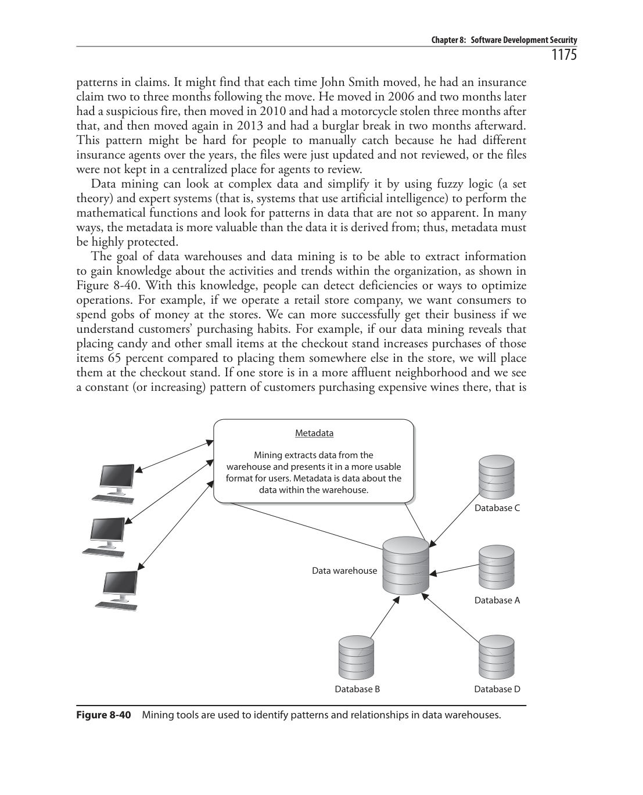
Figure 8-40Mining tools are used to identify patterns and relationships in data warehouses.
where we would also sell our expensive cheeses and gourmet items. We would not place our gourmet items at another store that hardly ever sells expensive wines, and in fact we would probably stop selling expensive wines at that store.
Data mining is the process of analyzing a data warehouse using tools that look for trends, correlations, relationships, and anomalies without knowing the meaning of the data. Metadata is the result of storing data within a data warehouse and mining the data with tools. Data goes into a data warehouse and metadata comes out of that data warehouse. So we would carry out these activities if we wanted to harness organization-wide data for comparative decision making, workflow automation, and/or competitive advantage. It is not just information aggregation; management’s goals in understanding different aspects of the company are to enhance business value and help employees work more productively.
Data mining is also known asknowledge discovery in database (KDD), and is a combination of techniques to identify valid and useful patterns. Different types of data can have various interrelationships, and the method used depends on the type of data and the patterns sought. The following are three approaches used in KDD systems to uncover these patterns:
ClassificationGroups together data according to shared similarities
- ProbabilisticIdentifies data interdependencies and applies probabilities to
- their relationships
StatisticalIdentifies relationships between data elements and uses rule discovery
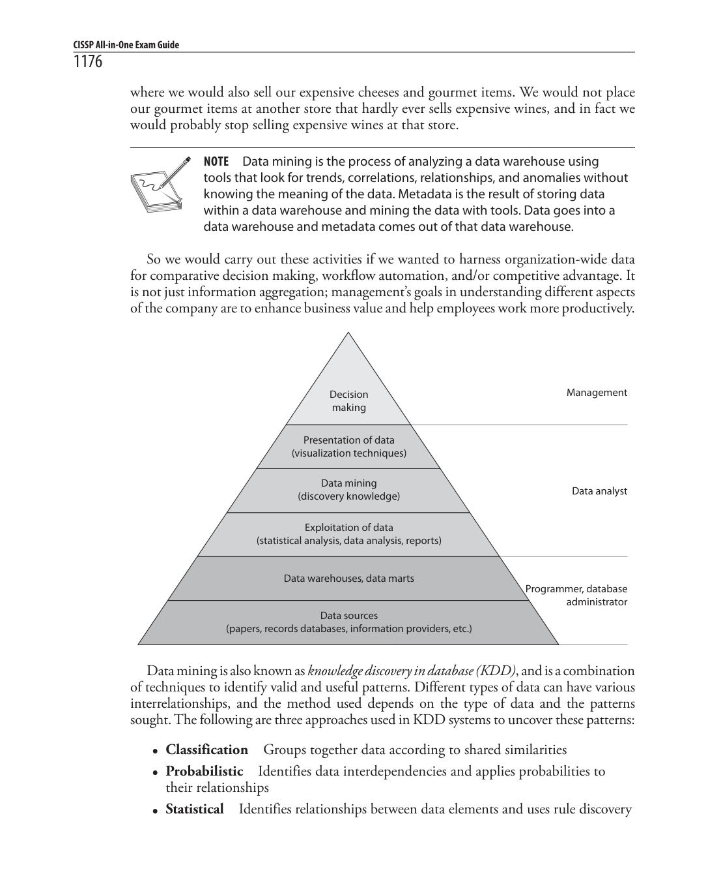
Diagram (p. 1210)
It is important to keep an eye on the output from the KDD and look for anything suspicious that would indicate some type of internal logic problem. For example, if you wanted a report that outlines the net and gross revenues for each retail store, and instead get a report that states “Bob,” there may be an issue you need to look into. Table 8-2 outlines the different types of systems used, depending on the requirements of the resulting data. Big data is a term that is related to, but distinct from, data warehousing and data mining.Big datais broadly defined as very large data sets with characteristics that make them unsuitable for traditional analysis techniques. These traits are widely agreed to include heterogeneity, complexity, variability, lack of reliability, and sheer volume. Heterogeneity speaks to the diversity of both sources and structure of the data, which means that some data could be images while other data could be free text. Big data is also complex, particularly in terms of interrelationships such as the one between images that are trending on social media and news articles describing current events. By variability, we mean that some sources produce nearly constant data while other sources produce data much more sporadically or rarely. Related to this challenge is the fact that some sources of big data may be unreliable or of unknown reliability. Finally, and as if these were not enough challenges, the basic characteristic of big data is its sheer volume: enough to overwhelm most if not all of the traditional DBMSs.
Big datais stored in specialized systems likedata warehousesand is exploited using approaches such asdata mining. These three terms are related but distinct.
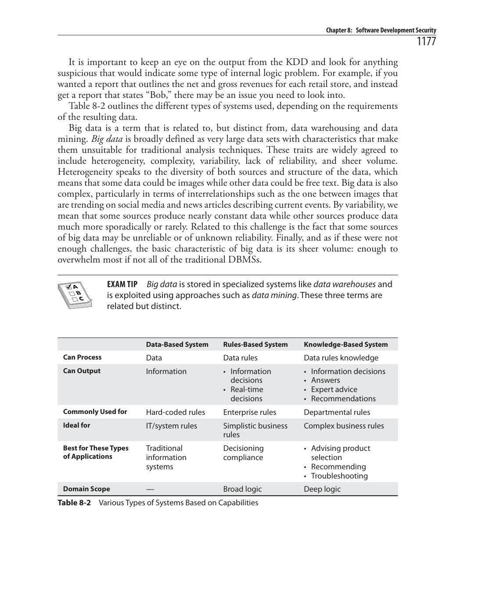
DataData rulesData rules knowledge
Malicious Software (Malware)
Several types of malicious code, or malware, exist, such as viruses, worms, Trojan horses, and logic bombs. They usually are dormant until activated by an event the user or system initiates. They can be spread by e-mail, sharing media, sharing documents and programs, or downloading things from the Internet, or they can be purposely inserted by an attacker. Adhering to the usual rules of not opening an e-mail attachment or clicking on a link that comes from an unknown source is one of the best ways to combat malicious code. However, recent viruses and worms have infected personal e-mail address books, so this precaution is not a sure thing to protect systems from malicious code. If an address book is infected and used during an attack, the victim gets an e-mail message that seems to have come from a person he knows. Because he knows this person, he will proceed to open the e-mail message and double-click the attachment or click on the link. And Bam! His computer is now infected and uses the e-mail client’s address book to spread the virus to all his friends and acquaintances. There are many infection channels other than through e-mail, but it is a common one since so many people use and trust these types of messages coming into and out of their systems on a daily basis. In fact, by many estimates, upward of 95 percent of all compromises use e-mail as the principal attack vector. Manual attacks on systems do not happen as much as they did in the past. Today hackers automate their attacks by creating a piece of malicious software (malware) that can compromise thousands of systems at one time with more precision. While malware can be designed to carry out a wide range of malicious activities, most malware is created to obtain sensitive information (credit card data, Social Security numbers, credentials, etc.), gain unauthorized access to systems, and/or carry out a profit-oriented scheme. The proliferation of malware has a direct relationship to the large amount of profit individuals can make without much threat of being caught. The most commonly used schemes for making money through malware are as follows:
Systems are compromised with bots and are later used in distributed denial-of-
- service (DDoS) attacks, spam distribution, or as part of a botnet’s command and control system.
Ransomware encrypts some or all of the users’ files with keys that are only given
- to the users after they pay a ransom, typically using cryptocurrencies.
Spyware collects personal data for the malware developer to resell to others.
- Malware redirects web traffic so that people are pointed toward a specific product
- for purchase.
Malware installs key loggers, which collect sensitive financial information for the
- malware author to use.
Malware is used to carry out phishing attacks, fraudulent activities, identity theft
- steps, and information warfare activities.
The sophistication level of malware continues to increase at a rapid pace. Years ago you just needed an antimalware product that looked for obvious signs of an infection (new files, configuration changes, system file changes, etc.), but today’s malware can bypass these simplistic detection methods. Some malware is stored in RAM and not saved to a hard drive, which makes it harder to detect. The RAM is flushed when the system reboots, so there is hardly any evidence that it was there in the first place. Malware can be installed in a “drive-by-download” process, which means that the victim is tricked into clicking something malicious (web link, system message, pop-up window), which in turn infects his computer. As discussed earlier, there are many web browser and web server vulnerabilities that are available through exploitation. Many websites are infected with malware, and the website owners do not know this because the malware encrypts itself, encodes itself, and carries out activities in a random fashion so that its malicious activities are not easily replicated and studied. We will cover the main categories of malware in the following sections, but the main reasons that they are all increasing in numbers and potency are as follows:
Many environments are homogeneous, meaning that one piece of malware will
- work on many or most devices.
Everything is becoming a computer (phones, TVs, game consoles, power grids,
- medical devices, etc.), and thus all are capable of being compromised.
More people and companies are storing all of their data in some digital format.
- More people and devices are connecting through various interfaces (phone apps,
- Facebook, websites, e-mail, texting, e-commerce, etc.).
Many accounts are configured with too much privilege (administrative or root
- access).
More people who do not understand technology are using it for sensitive
- purposes (online banking, e-commerce, etc.).
The digital world has provided many ways to carry out various criminal activities with a low risk of being caught.
Viruses
Avirusis a small application, or string of code, that infects software. The main function of a virus is to reproduce and deliver its payload, and it requires a host application to do this. In other words, viruses cannot replicate on their own. A virus infects a file by inserting or attaching a copy of itself to the file. The virus is just the “delivery mechanism.” It can have any type of payload (deleting system files, displaying specific messages, reconfiguring systems, stealing sensitive data, installing a sniffer or back door). A virus is a subcategory of the overall umbrella category “malware.” What makes a software component an actual virus is the fact that it can self-replicate. There are several
other malware types that infect our systems and cause mayhem, but if they cannot selfreplicate they do not fall into the subcategory of “virus.” Several viruses have been released that achieved self-perpetuation by mailing themselves to every entry in a victim’s personal address book. The virus masqueraded as coming from a trusted source. The ILOVEYOU, Melissa, and Naked Wife viruses are older viruses that used the programs Outlook and Outlook Express as their host applications and were replicated when the victim chose to open the message. Several types of viruses have been developed and deployed, which we will cover next. Macros are programs written in Visual Basic or VBScript and are generally used with Microsoft Office products. Macros automate tasks that users would otherwise have to carry out themselves. Users can define a series of activities and common tasks for the application to perform when a button is clicked, instead of doing each of those tasks individually. Amacrovirusis a virus written in one of these macro languages and is platform independent. Macro viruses infect and replicate in templates and within documents. They are common because they are extremely easy to write and are used extensively in commonly used products (i.e., Microsoft Office). Some viruses infect the boot sector (boot sector viruses) of a computer and either move data within the boot sector or overwrite the sector with new information. Some boot sector viruses have part of their code in the boot sector, which can initiate the viruses when a system boots up, and the rest of their code in sectors on the hard drive that the virus has marked off as bad. Because the sectors are marked as bad, the operating system and applications will not attempt to use those sectors; thus, they will not get overwritten. Astealth virushides the modifications it has made to files or boot records. This can be accomplished by monitoring system functions used to read files or sectors and forging the results. This means that when an antimalware program attempts to read an infected file or sector, the original uninfected form will be presented instead of the actual infected form. The virus can hide itself by masking the size of the file it is hidden in or actually move itself temporarily to another location while an antimalware program is carrying out its scanning process. So a stealth virus is a virus that hides its tracks after infecting a system. Once the system is infected, the virus can make modifications to make the computer appear the same as before. The virus can show the original file size of a file it infected instead of the new, larger size to try to trick the antimalware software into thinking no changes have been made. Apolymorphic virusproduces varied but operational copies of itself. This is done in the hopes of outwitting a virus scanner. Even if one or two copies are found and disabled, other copies may still remain active within the system. The polymorphic virus can use different encryption schemes requiring different decryption routines. This would require an antimalware scan for several scan strings, one for each possible decryption method, in order to identify all copies of this type of virus. These viruses can also vary the sequence of their instructions by includingnoise, or bogus instructions, with other useful instructions. They can also use a mutation engine and a random-number generator to change the sequence of their instructions in the hopes of not being detected. A polymorphic virus has the capability to change its own
code, enabling the virus to have hundreds or thousands of variants. These activities can cause the virus scanner to not properly recognize the virus and to leave it alone. Amultipart virus(also called multipartite virus) has several components to it and can be distributed to different parts of the system. For example, a multipart virus might infect both the boot sector of a hard drive and executable files. By using multiple vectors it can spread more quickly than a virus using only one vector. Meme virusesare not actual computer viruses, but types of e-mail messages that are continually forwarded around the Internet. They can be chain letters, e-mail hoax virus alerts, religious messages, or pyramid selling schemes. They are replicated by humans, not software, and can waste bandwidth and spread fear. Several e-mails have been passed around describing dangerous viruses even though the viruses weren’t real. People believed the e-mails and felt as though they were doing the right thing by passing them along to tell friends about this supposedly dangerous malware, when really the people were duped and were themselves spreading a meme virus. Script viruseshave been quite popular and damaging over the last several years. Scripts are files that are executed by an interpreter—for example, Microsoft Windows Script Host, which interprets different types of scripting languages. Websites have become more dynamic and interactive through the use of script files written in Visual Basic (VBScript) and Java (JScript) as well as other scripting languages that are embedded in HTML. When a web page that has these scripts embedded is requested by a web browser, these embedded scripts are executed, and if they are malicious, then everything just blows up. Okay, this is a tad overdramatic. The virus will carry out the payload (instructions) that the virus writer has integrated into the script, whether it is sending out copies of itself to everyone in your contact list or deleting critical files. Scripts are just another infection vector used by malware writers to carry out their evil ways. Another type of virus, called thetunneling virus, attempts to install itself “under” the antimalware program. When the antimalware goes around doing its health check on critical files, file sizes, modification dates, and so on, it makes a request to the operating system to gather this information. Now, if the virus can put itself between the antimalware and the operating system, when the antimalware sends out a command (system call) for this type of information, the tunneling virus can intercept this call. Instead of the operating system responding to the request, the tunneling virus responds with information that indicates that everything is fine and healthy and that there is no indication of any type of infection. So what is the difference between a stealth virus and a tunneling virus? A stealth virus is just a general term for a virus that somehow attempts to hide its actions. A stealth virus can use tunneling tactics or other tactics to hide its footprint and activities. People in the information security industry used to know all the popular viruses and other malware types by name. For example, security professionals knew what someone was referring to when discussing the Melissa virus, ILOVEYOU virus, Code Red, SQL Slammer, Blaster, or Sasser worm. Today there are thousands of new malware variants created each day and no one can keep up. PandaLabs reported that in the third quarter of 2015, there was a daily average of 230,000 new samples of malware.
Malware Components
It is common for malware to have six main elements, although it is not necessary for themallto be in place:
InsertionInstalls itself on the victim’s system
- AvoidanceUses methods to avoid being detected
- EradicationRemoves itself after the payload has been executed
- ReplicationMakes copies of itself and spreads to other victims
- TriggerUses an event to initiate its payload execution
- PayloadCarries out its function (that is, deletes files, installs a back door,
- exploits a vulnerability, and so on)
Worms
Wormsare different from viruses in that they can reproduce on their own without a host application, and are self-contained programs. As an analogy, medical viruses (e.g., the common cold) spread through human hosts. The virus can make our noses run or cause us to sneeze, which are just the virus’s way of reproducing and spreading itself. The virus is a collection of particles (DNA, RNA, proteins, lipids) and can only replicate within living cells. A virus cannot fall on the floor and just wait for someone to pass by and infect—it requires host-to-host transmission. A computer virus also requires a host, because it is not a full and self-sufficient program. A computer virus cannot make our computer sneeze, but it could make our applications share infected files, which is similar in nature. In the nondigital world, worms are not viruses. They are invertebrate animals that can function on their own. They reproduce through some type of sexual or asexual replication process, but do not require a “host environment” of a living cell to carry out these activities. In the digital world, worms are just little programs, and like viruses they are used to transport and deliver malicious payloads. One of the most famous computer worms is Stuxnet, which targeted Siemens supervisory control and data acquisition (SCADA) software and equipment. It has a highly specialized payload that was used against Iran’s uranium enrichment infrastructures with the goal of damaging the country’s nuclear program.
Rootkit
When a system is successfully compromised, an attacker may attempt to elevate his privileges to obtain administratoror root user–level access. Once the level of access is achieved, the attacker can upload a bundle of tools, collectively called arootkit. The first thing that is usually installed is a back-door program, which allows the attacker to enter the system at any time without having to go through any authentication steps. The other common tools in a rootkit allow for credential capturing, sniffing, attacking other systems, and covering the attacker’s tracks.
The rootkit is just a set of tools that is placed on the compromised system for future use. Once the rootkit is loaded, the attacker can use these tools against the system or other systems it is connected to whenever he wants to. The attacker usually replaces default system tools with new compromised tools, which share the same name. They are referred to as “Trojaned programs” because they carry out the intended functionality but do some malicious activity in the background. This is done to help ensure that the rootkit is not detected. Most rootkits have Trojaned programs that replace these tools, because the root user could runpsortopand see there is a back-door service running, and thus detect the presence of a compromise. But when this user runs one of these Trojaned programs, the compromised tool lists all other services except the back-door process. Most rootkits also contain sniffers, so the data can be captured and reviewed by the attacker. For a sniffer to work, the system’s network interface card (NIC) must be put into promiscuous mode, which just means it can “hear” all the traffic on the network link. The default ipconfig utility allows the root user to employ a specific parameter to see whether or not the NIC is running in promiscuous mode. So, the rootkit also contains a Trojaned ipconfig program, which hides the fact that the NIC is in promiscuous mode. Rootkits commonly include “log scrubbers,” which remove traces of the attacker’s activities from the system logs. They can also contain Trojaned programs that replace findandlsUnix utilities, so that when a user does a listing of what is in a specific directory, the rootkit will not be listed. Some of the more powerful rootkits actually update the kernel of the system instead of just replacing individual utilities. Modifying the kernel’s code gives the attacker much more control over a system. It is also very difficult to detect kernel updates, compared to replaced utilities, because most host IDS (HIDS) products look at changes to file sizes and modification dates, which would apply to utilities and programs but not necessarily to the kernel of the operating system. Rootkit detection can be difficult because the rootkit may be able to subvert the software that is intended to find it. Detection methods include behavioral-based methods, signature-based scanning, and memory dump analysis. Removal can be complicated, especially in cases where the rootkit resides in the kernel; reinstallation of the operating system may be the only available solution to the problem. Rootkits and their payloads have many functions, including concealing other malware, as in password-stealing key loggers and computer viruses. A rootkit might also install software that allows the compromised system to become a zombie for specific botnets. Rootkits can reside at the user level of an operating system, at the kernel level, in a system’s firmware, or in a hypervisor of a system using virtualization. A user-level rootkit does not have as much access or privilege compared to a kernel-level rootkit, and thus cannot carry out as much damage. If a rootkit resides in the hypervisor of a system, it can exploit hardware virtualization features and target host operating systems. This allows the rootkit to intercept hardware calls made by the original operating system. This is not a very common type of rootkit that is deployed and used in the industry, but it is something that will probably become more popular because of the expansive use of virtualization.
Rootkits that reside in firmware are difficult to detect because software integrity checking does not usually extend down to the firmware level. If a rootkit is installed on a system’s firmware, that can allow it to load into memory before the full operating system and protection tools are loaded on the system.
Spyware and Adware
Spywareis a type of malware that is covertly installed on a target computer to gather sensitive information about a victim. The gathered data may be used for malicious activities, such as identity theft, spamming fraud, etc. Spyware can also gather information about a victim’s online browsing habits, which is then often used by spammers to send targeted advertisements. Spyware can also be used by an attacker to direct a victim’s computer to perform tasks such as installing software, changing system settings, transferring browsing history, logging keystrokes, taking screenshots, etc. Adwareis software that automatically generates (renders) advertisements. The ads can be provided through pop-ups, user interface components, or screens presented during the installation of updates of other products. The goal of adware is to generate sales revenue, not carry out malicious activities, but some adware uses invasive measures, which can cause security and privacy issues.
Botnets
A “bot” is short for “robot” and is a piece of code that carries out functionality for its master, who could be the author of this code. Bots allow for simple tasks to be carried out in an automated manner in a web-based environment. While bot software can be used for legitimate purposes (e.g., web crawling), we are going to focus on how it can be used in a malicious manner. Botsare a type of malware and are being installed on thousands of computers even now as you’re reading this sentence. They are installed on vulnerable victim systems through infected e-mail messages, drive-by downloads, Trojan horses, and the use of shared media. Once the bot is loaded on a victim system, it usually lies dormant (zombie code) and waits for command instructions for activation purposes. The bot can send a message to the hacker indicating that a specific system has been compromised and the system is now available to be used by the attacker as she wishes. When a hacker has a collection of these compromised systems, it is referred to as abotnet (network of bots). The hacker can use all of these systems to carry out powerful DDoS attacks or even rent these systems to spammers. The owner of this botnet (commonly referred to as thebot herder) controls the systems remotely, usually through the Internet Relay Chat (IRC) protocol. The common steps of the development and use of a botnet are listed next:
1.A hacker sends out malicious code that has the bot software as its payload. 2.Once installed, the bot logs into an IRC or web server that it is coded to contact. The server then acts as the controlling server of the botnet. 3.A spammer pays the hacker to use these systems and sends instructions to the controller server, which causes all of the infected systems to send out spam messages to mail servers.
Spammers use this method so their messages have a higher likelihood of getting through mail server spam filters since the sending IP addresses are those of the victims’ systems. Thus, the source IP addresses change constantly. This is how you are constantly updated on the new male enhancement solutions and ways to purchase Viagra. Figure 8-41 illustrates the life cycle of a botnet. The botnet herder works with, or pays, hackers to develop and spread malware to infect systems that will become part of the botnet. Whoever wants to tell you about a new product they just released, carry out identity theft, conduct attacks, and so on can pay the herder to use the botnet for their purposes. Botnets can be used for spamming, brute-force and DDoS attacks, click fraud, fast flux techniques, and the spread of illegal material. The traffic can pass over IRC or HTTP and even be tunneled through Twitter, instant messaging, and other common traffic types. The servers that send the bots instructions and manage the botnets are commonly referred to ascommand-and-control (C&C)servers, and they can maintain thousands or millions of computers at one time.
Fast fluxis an evasion technique. Botnets can use fast flux functionality to hide the phishing and malware delivery sites they are using. One common method is to rapidly update DNS information to disguise the hosting location of the malicious websites.
$
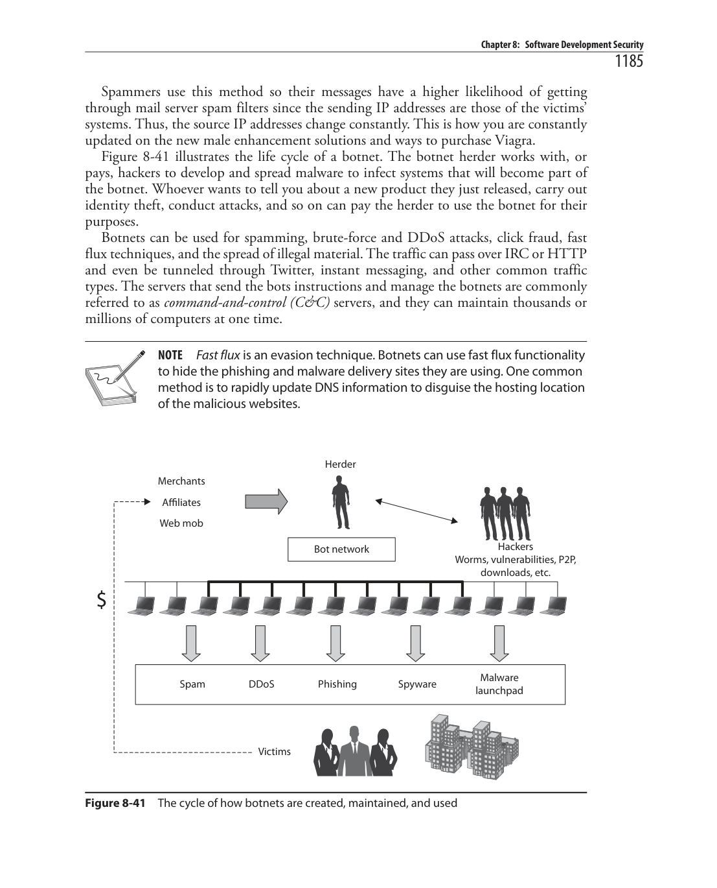
Figure 8-41The cycle of how botnets are created, maintained, and used
Logic Bombs
Alogic bombexecutes a program, or string of code, when a certain set of conditions is met. For example, a network administrator may install and configure a logic bomb that is programmed to delete the company’s whole database if he is terminated. The logic bomb software can have many types of triggers that activate its payload execution, as in time and date or after a user carries out a specific action. For example, many times compromised systems have logic bombs installed so that if forensics activities are carried out the logic bomb initiates and deletes all of the digital evidence. This thwarts the investigation team’s success and helps hide the attacker’s identity and methods.
Trojan Horses
ATrojan horseis a program that is disguised as another program. For example, a Trojan horse can be named Notepad.exe and have the same icon as the regular Notepad program. However, when a user executes Notepad.exe, the program can delete system files. Trojan horses perform a useful functionality in addition to the malicious functionality in the background. So the Trojan horse named Notepad.exe may still run the Notepad program for the user, but in the background it will manipulate files or cause other malicious acts. Trojan horses are one of the fastest growing malware types in the world. In fact, PandaLabs reported that over 69 percent of malware samples observed during 2015 were Trojans. Users are commonly tricked into downloading some type of software from a website that is actually malicious. The Trojan horse can then set up a back door, install keystroke loggers, implement rootkits, upload files from the victim’s system, install bot software, and perform many other types of malicious acts. Trojan horses are commonly used to carry out various types of online banking fraud and identity theft activities. Remote access Trojans (RATs)are malicious programs that run on systems and allow intruders to access and use a system remotely. They mimic the functionality of legitimate remote control programs used for remote administration, but are used for sinister purposes instead of helpful activities. They are developed to allow for stealth installation and operation, and are usually hidden in some type of mobile code, such as Java applets or ActiveX controls, that are downloaded from websites. Several RAT programs are available to the hacker (Sakula, KjW0rm, Havex, Dark Comet, and others). Once the RAT is loaded on the victim’s system, the attacker can download or upload files, send commands, monitor user behaviors, install zombie software, activate the webcam, take screenshots, alter files, and use the compromised system as he pleases.
Crimeware Toolkits
Creating and spreading malware used to require programming knowledge, but today people can purchase crimeware toolkits that allow them to create their own tailored malware through GUI-based tools. These toolkits provide predeveloped malicious code that can be easily customized, deployed, and automated. The kits
are sold in the online underground black market and allow people with little to no technical skill to carry out cybercrime activities. These “out-of-the-box” solutions have lowered the entry barrier for cybercriminals by making sophisticated attacks easy to carry out. The following shows the administrative interface provided by a commonly used crimeware toolkit, Spy Eye, that attackers can use to maintain and control their compromised systems.
Hack the Planet!
+
Take your money!
Antimalware Software
Traditional antimalware software uses signatures to detect malicious code. Signatures, sometimes referred to as fingerprints, are created by antimalware vendors. An individual signature is a sequence of code that an antimalware vendor has extracted from the virus itself. Just like our bodies have antibodies that identify and go after a specific type of foreign material, an antimalware software package has an engine that uses these signatures to identify malware. The antimalware software scans files, e-mail messages, and other data passing through specific protocols, and then compares them to its database of signatures. When there is a match, the antimalware software carries out whatever activities it is configured to do, which can be to quarantine the file, attempt to clean the file (remove the virus), provide a warning message dialog box to the user, and/or log the event. Signature-based detection(also calledfingerprint detection) is a reasonably effective way to detect conventional malware, but there is a delayed response time to new threats. Once a virus is detected, the antimalware vendor must study it, develop and test a new signature, release the signature, and all customers must download it. If the malicious code is just sending out silly pictures to all of your friends, this delay is not so critical. If the malicious software is similar to the Slammer worm, this amount of delay can be devastating.
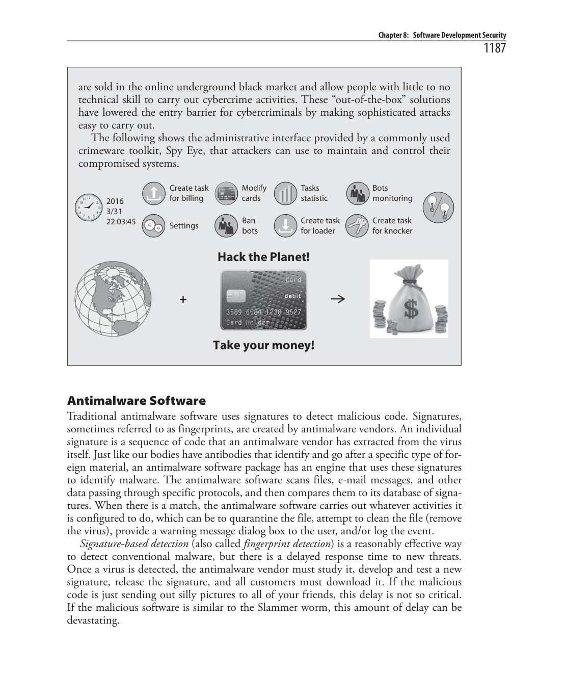
Diagram (p. 1221)
Since new malware is released daily, it is hard for antimalware software to keep up. The technique of using signatures means this software can only detect viruses that have been identified and where a signature is created. Since virus writers are prolific and busy beasts, and because viruses can morph, it is important that the antimalware software have other tricks up its sleeve to detect malicious code. Another technique that almost all antimalware software products use is referred to asheuristic detection. This approach analyzes the overall structure of the malicious code, evaluates the coded instructions and logic functions, and looks at the type of data within the virus or worm. So, it collects a bunch of information about this piece of code and assesses the likelihood of it being malicious in nature. It has a type of “suspiciousness counter,” which is incremented as the program finds more potentially malicious attributes. Once a predefined threshold is met, the code is officially considered dangerous and the antimalware software jumps into action to protect the system. This allows antimalware software to detect unknown malware, instead of just relying on signatures. As an analogy, let’s say Barney is the town cop who is employed to root out the bad guys and lock them up (quarantine). If Barney was going to use a signature method, he would compare a stack of photographs to each person he sees on the street. When he sees a match, he quickly throws the bad guy into his patrol car and drives off. If he was going to use the heuristic method, he would be watching for suspicious activity. So if someone with a ski mask was standing outside a bank, Barney would assess the likelihood of this being a bank robber against it just being a cold guy in need of some cash.
Diskless workstations are still vulnerable to viruses, even though they do not have a hard disk and a full operating system. They can still get viruses that load and reside in memory. These systems can be rebooted remotely (remote booting) to bring the memory back to a clean state, which means the virus is “flushed” out of the system. Some antimalware products create a simulated environment, called a virtual machine or sandbox, and allow some of the logic within the suspected code to execute in the protected environment. This allows the antimalware software to see the code in question in action, which gives it more information as to whether or not it is malicious.
The virtual machine or sandbox is also sometimes referred to as an emulation buffer. They are all the same thing—a piece of memory that is segmented and protected so that if the code is malicious, the system is protected. Reviewing information about a piece of code is calledstatic analysis, while allowing a portion of the code to run in a virtual machine is calleddynamic analysis. They are both considered heuristic detection methods. Now, even though all of these approaches are sophisticated and effective, they are not 100-percent effective because malware writers are crafty. It is a continual cat-and-mouse game that is carried out each and every day. The antimalware industry comes out with a
new way of detecting malware, and the very next week the malware writers have a way to get around this approach. This means that antimalware vendors have to continually increase the intelligence of their products and you have to buy a new version every year. The next phase in the antimalware software evolution is referred to as behavior blockers. Antimalware software that carries outbehavior blockingactually allows the suspicious code to execute within the operating system unprotected and watches its interactions with the operating system, looking for suspicious activities. The antimalware software would be watching for the following types of actions:
Writing to startup files or the Run keys in the Registry
- Opening, deleting, or modifying files
- Scripting e-mail messages to send executable code
- Connecting to network shares or resources
- Modifying an executable logic
- Creating or modifying macros and scripts
- Formatting a hard drive or writing to the boot sector
Immunizers
Another approach some antimalware software uses is calledimmunization. Products with this type of functionality would make it look as though a file, program, or disk was already infected. Animmunizerattaches code to the file or application, which would fool a virus into “thinking” it was already infected. This would cause the virus to not infect this file (or application) and move onto the next file. Immunizers are usually virus specific, since a specific virus is going to make a distinct call to a file to uncover if it has been infected. The challenge is that as the number of viruses (and other malware types) increases so do the number of files that need to be immunized. Because of this challenge, immunizers are not normally part of common antimalware solutions. They are still, however, a topic of research and show promise as we look at intelligent, adaptive systems that can respond to attacks at machine speed.
If the antimalware program detects some of these potentially malicious activities, it can terminate the software and provide a message to the user. The newer generation behavior blockers actually analyze sequences of these types of operations before determining the system is infected. (The first-generation behavior blockers only looked for individual actions, which resulted in a large number of false positives.) The newer generation software can intercept a dangerous piece of code and not allow it to interact with other running processes. They can also detect rootkits. In addition, some of these antimalware programs can allow the system to roll back to a state before an infection took place so the damages inflicted can be “erased.”
While it sounds like behavior blockers might bring us our well-deserved bliss and utopia, one drawback is that the malicious code must actually execute in real time; otherwise, our systems can be damaged. This type of constant monitoring also requires a high level of system resources. We just can’t seem to win.
Heuristic detection and behavior blocking is considered proactive and can detect new malware, sometimes called “zero day” attacks. Signature-based detection cannot detect new malware. Most antimalware vendors use a blend of all of these technologies to provide as much protection as possible. The individual antimalware attack solutions are shown in Figure 8-42.
Another antimalware technique is referred to as “reputation-based protection.” An antimalware vendor collects data from many (or all) of its customers’ systems and mines that data to search for patterns to help identify good and bad files. Each file type is assigned a reputation metric value, indicating the probability of it being “good” or “bad.”These values are used by the antimalware software to help it identify “bad” (suspicious) files.
Spam Detection
We are all pretty tired of receiving e-mails that try to sell us things we don’t need. A great job working from home, a master’s degree that requires no studying, and a great sex life are all just a click away (and only $19.99!)—as promised by this continual stream of messages. These e-mails have been given the labelspam, which is unsolicited junk e-mail. Along with being a nuisance, spam eats up a lot of network bandwidth and can be the source of spreading malware. Many organizations have spam filters on their mail servers, and users can configure spam rules within their e-mail clients, but just as virus writers always come up with ways to circumvent antimalware software, spammers come up with clever ways of getting around spam filters. Detecting spam properly has become a science in itself. One technique used is called Bayesian filtering. Many moons ago, a gentleman named Thomas Bayes (a mathematician) developed a way to actually guess the probability of something being true by using math. Now what is fascinating about this is that in mathematics things are either true or they are not. This is the same in software. Software deals with 1’s and 0’s, on and off, true and false. Software does not deal with the grays (probabilities) of life too well. Bayesian logic reviews prior events to predict future events, which is basically quantifying uncertainty. Conceptually, this is not too hard to understand. If you run into a brick wall three times and fall down, you should conclude that your future attempts will result in the same painful outcomes. What is more interesting is when this logic is performed on activities that contain many more variables. For example, how does a spam filter ensure you do not receive e-mails trying to sell you Viagra, but does
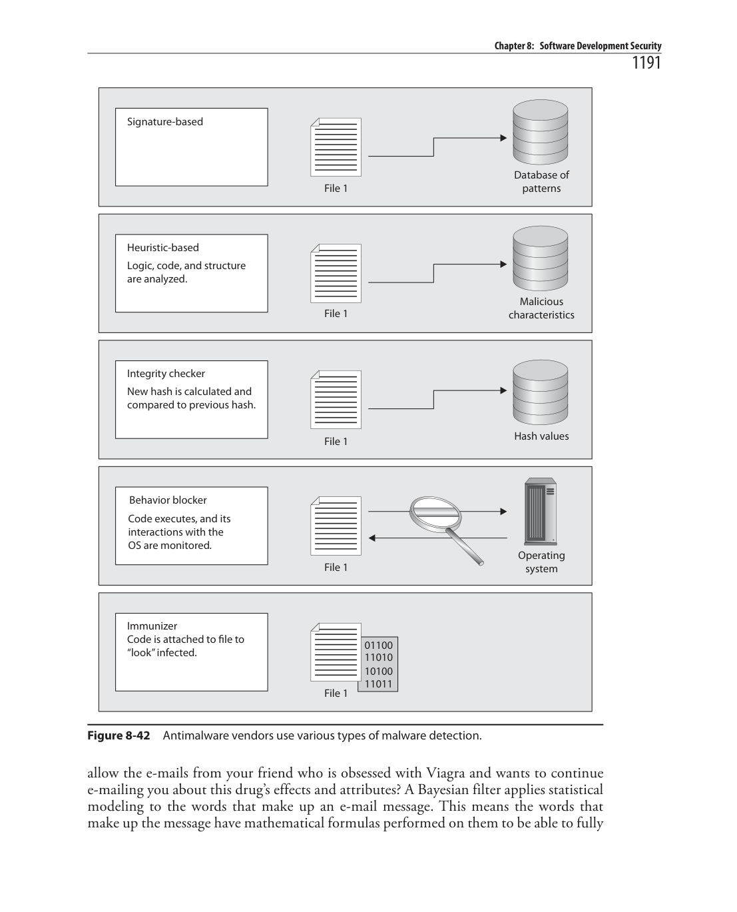
Figure 8-42Antimalware vendors use various types of malware detection.
allow the e-mails from your friend who is obsessed with Viagra and wants to continue e-mailing you about this drug’s effects and attributes? A Bayesian filter applies statistical modeling to the words that make up an e-mail message. This means the words that make up the message have mathematical formulas performed on them to be able to fully
understand their relationship to one another. The Bayesian filter carries out a frequency analysis on each word and then evaluates the message as a whole to determine whether or not it is spam. So this filter is not just looking for “Viagra,” “manhood,” “sex,” and other words that cannot be printed in a wholesome book like this one. It is looking at how often these words are used, and in what order, to make a determination as to whether or not this message is spam. Unfortunately, spammers know how these filters work and manipulate the words in the subject line and message to try and fool the spam filter. This is why you can receive messages with misspelled words or words that use symbols instead of characters. The spammers are very dedicated to getting messages promising utopia to your e-mail box because there is big money to be made that way.
Antimalware Programs
Detecting and protecting an enterprise from the long list of malware requires more than just rolling out antimalware software. Just as with other pieces of a security program, certain administrative, physical, and technical controls must be deployed and maintained. The organization should either have a stand-alone antimalware policy or have one incorporated into an existing security policy. It should include standards outlining what type of antimalware software and antispyware software should be installed and how they should be configured. Antimalware information and expected user behaviors should be integrated into the security-awareness program, along with who a user should contact if she discovers a virus. A standard should cover the do’s and don’ts when it comes to malware, which are listed next:
Every workstation, server, and mobile device should have antimalware
- softwareinstalled.
An automated way of updating malware signatures should be deployed on
- eachdevice.
Users should not be able to disable antimalware software.
- A preplanned malware eradication process should be developed and a contact
- person designated in case of an infection.
All external disks (USB drives and so on) should be scanned automatically.
- Backup files should be scanned.
- Antimalware policies and procedures should be reviewed annually.
- Antimalware software should provide boot malware protection.
- Antimalware scanning should happen at a gateway and on each device.
- Virus scans should be automated and scheduled. Do not rely on manual scans.
- Critical systems should be physically protected so malicious software cannot be
- installed locally.
Antimalware files that contain updates (new signatures) are called DAT files. It is just a data file with the file extension of .dat.
Since malware has cost organizations millions of dollars in operational costs and productivity hits, many have implemented antimalware solutions at network entry points. The scanning software can be integrated into a mail server, proxy server, or firewall. (They solutions are sometimes referred to asvirus walls.) This software scans incoming traffic, looking for malware so it can be detected and stopped before entering the network. These products can scan Simple Mail Transport Protocol (SMTP), HTTP, FTP, and possibly other protocol types, but what is important to realize is that the product is only looking at one or two protocols and notallof the incoming traffic. This is the reason each server and workstation should also have antimalware software installed.
Assessing the Security of Acquired Software
Most organizations do not have the in-house capability to develop their own software systems. Their only feasible options are either to acquire standard software or to have a vendor customize a standard software system to their particular environment. In either case, software from an external source will be allowed to execute in a trusted environment. Depending on how trustworthy the source and the code are, this could have some profound implications to the security posture of the organization’s systems. As always, we need to ground our response on our risk management process. In terms of managing the risk associated with acquired software, the essential question to ask is: How is the organization affected if this software behaves improperly? Improper behavior could be the consequence of either defects or misconfiguration. The defects can manifest themselves as computing errors (e.g., wrong results) or vulnerability to intentional attack. A related question is: What is it that we are protecting and this software could compromise? Is it PII, intellectual property, or national security information? The answers to these and other questions will dictate the required thoroughness of ourapproach. In many cases, our approach to mitigating the risks of acquired software will begin with an assessment of the vendor. Characteristics that correlate to a lower risk from a given vendor’s software include the reputation of the vendor and the regularity of its patch pushes. Conversely, vendors may be riskier if they are small or new companies, if they have immature or undocumented development processes, or if their products have broad marketplace presence (meaning they are more lucrative targets to exploit developers). A key element in assessing the security of acquired software is, rather obviously, its performance on an internal assessment. Ideally, we are able to obtain the source code from the vendor so that we can do our own code reviews, vulnerability assessments, and penetration tests. In many cases, however, this will not be possible. Our only possible assessment may be a penetration test. The catch is that we may not have the in-house
capability to perform such a test. In such cases, and depending on the potential risk posed by this software, we may be well advised to hire an external party to perform an independent penetration test for us. This is likely a costly affair that would only be justifiable in cases where a successful attack against the software system would likely lead to significant losses for the organization. Even in the most constrained case, we are still able to mitigate the risk of acquisition. If we don’t have the means to do code reviews, vulnerability assessments, or penetration tests, we can still mitigate the risk by deploying the software only in specific subnetworks, with hardened configurations, and with restrictive IDS/IPS rules monitoring its behavior. Though this approach may initially lead to constrained functionality and excessive false positives on our intrusion detection/prevention systems, we can always gradually loosen the controls as we gain assurances that the software is trustworthy. That is, after all, the bottom line for this entire chapter.
Summary
Although functionality is the first concern when developing software, adding security into the mix before the project starts and then integrating it into every step of the development process is highly beneficial. Although many companies do not view this as the most beneficial approach to software development, they are becoming convinced of it over time as more security patches and fixes must be developed and released, and as their customers continually demand more secure products. Software development is a complex task, especially as technology changes at the speed of light, environments evolve, and more expectations are placed upon vendors who wish to be the “king of the mountain” within the software market. This complexity also makes implementing effective security more challenging. Years ago, programmers and developers did not need to consider security issues within their code, but this has not been true for a very long time. Education, experience, awareness, enforcement, and the demands of the consumers are all necessary pieces to bring more secure practices and technologies to the program code we all use.
Quick Tips
Security should be addressed in each phase of system development. It should not
- be addressed only at the end of development because of the added cost, time, and effort and the lack of functionality.
The attack surface is the collection of possible entry points for an attacker. The
- reduction of this surface reduces the possible ways that an attacker can exploit asystem.
Threat modeling is a systematic approach used to understand how different
- threats could be realized and how a successful compromise could take place.
Computer-aided software engineering refers to any type of software that allows
- for the automated development of software, which can come in the form of program editors, debuggers, code analyzers, version-control mechanisms, and more. The goals are to increase development speed and productivity and reduceerrors.
Various levels of testing should be carried out during development: unit
- (testing individual components), integration (verifying components work together in the production environment), acceptance (ensuring code meets customer requirements), regression (testing after changes take place), static analysis (reviewing programming code), and dynamic analysis (reviewing code duringexecution).
Fuzzing is the act of sending random data to the target program in order to
- trigger failures.
Zero-day vulnerabilities are vulnerabilities that do not currently have a resolution
- or solution.
The ISO/IEC 27034 standard covers the following items: application security
- overview and concepts, organization normative framework, application security management process, protocols and application security control data structure, case studies, and application security assurance prediction.
The Open Web Application Security Project (OWASP) is an organization
- dedicated to helping the industry develop more secure software.
An integrated product team (IPT) is a multidisciplinary development team with
- representatives from many or all the stakeholder populations.
The CMMI model uses five maturity levels designated by the numbers 1
- through 5. Each level represents the maturity level of the process quality and optimization. The levels are organized as follows: 1 = Initial, 2 = Repeatable, 3 = Defined, 4 = Managed, 5 = Optimizing.
CMMI (Capability Maturity Model Integration) is a process improvement
- approach that provides organizations with the essential elements of effective processes, which will improve their performance.
Change control needs to be put in place at the beginning of a project and must
- be enforced through each phase. Changes must be authorized, tested, and recorded. The changes must not affect the security level of the system or its capability to enforce the security policy.
There are several SDLC models: Waterfall (sequential approach that requires
- each phase to complete before the next one can begin), V-model (emphasizes verification and validation at each phase), Prototyping (creating a sample of the code for proof-of-concept purposes), Incremental (multiple development cycles are carried out on a piece of software throughout its development stages), Spiral (iterative approach that emphases risk analysis per iteration), Rapid Application Development (combines prototyping and iterative development procedures with
the goal of accelerating the software development process), and Agile (iterative and incremental development processes that encourage team-based collaboration, and flexibility and adaptability are used instead of a strict process structure). Software configuration management (SCM) is the task of tracking and
- controlling changes in the software through the use of authentication, revision control, the establishment of baselines, and auditing. It has the purpose of maintaining software integrity and traceability throughout the software development life cycle.
Programming languages have gone through evolutionary processes. Generation
- one is machine language (binary format). Generation two is assembly language (which is translated by an assembler into machine code). Generation three is highlevel language (which provides a level of abstraction). Generation four is a very high-level language (which provides more programming abstraction). Generation five is natural language (which is used for artificial intelligence purposes).
Data modeling is a process used to define and analyze data requirements needed
- to support the business processes within the scope of corresponding systems and software applications.
Object-oriented programming provides modularity, reusability, and more
- granular control within the programs themselves compared to classical programming languages.
Objects are members, or instances, of classes. The classes dictate the objects’ data
- types, structure, and acceptable actions.
In OOP, objects communicate with each other through messages, and a method
- is functionality that an object can carry out. Objects can communicate properly because they use standard interfaces.
Polymorphism is when different objects are given the same input and
- reactdifferently.
Data and operations internal to objects are hidden from other objects, which is
- referred to as data hiding. Each object encapsulates its data and processes.
Object-oriented design represents a real-world problem and modularizes the
- problem into cooperating objects that work together to solve the problem.
If an object does not require much interaction with other modules, it has
- lowcoupling.
The best programming design enables objects to be as independent and as
- modular as possible; therefore, the higher the cohesion and the lower the coupling, the better.
An object request broker (ORB) manages communications between objects and
- enables them to interact in a heterogeneous and distributed environment.
Common Object Request Broker Architecture (CORBA) provides a standardized
- way for objects within different applications, platforms, and environments to communicate. It accomplishes this by providing standards for interfaces betweenobjects.
Component Object Model (COM) provides an architecture for components to
- interact on a local system. Distributed COM (DCOM) uses the same interfaces as COM, but enables components to interact over a distributed, or networked, environment.
Open Database Connectivity (ODBC) enables several different applications to
- communicate with several different types of databases by calling the required driver and passing data through that driver.
Object linking and embedding (OLE) enables a program to call another program
- (linking) and permits a piece of data to be inserted inside another program or document (embedding).
Service-oriented architecture (SOA) provides standardized access to the most
- needed services to many different applications at one time. Service interactions are self-contained and loosely coupled so that each interaction is independent of any other interaction.
Java security employs a sandbox so the applet is restricted from accessing the
- user’s hard drive or system resources. Programmers have figured out how to write applets that escape the sandbox.
SOAP allows programs created with different programming languages and
- running on different operating systems to interact without compatibility issues.
There are three main types of cross-site scripting (XSS) attacks: nonpersistent
- XSS (exploiting the lack of proper input or output validation on dynamic websites), persistent XSS (attacker loads malicious code on a server that attacks visiting browsers), and DOM (attacker uses the DOM environment to modify the original client-side JavaScript).
A database management system (DBMS) is the software that controls the access
- restrictions, data integrity, redundancy, and the different types of manipulation available for a database.
A database primary key is how a specific row is located from other parts of the
- database in a relational database.
A view is an access control mechanism used in databases to ensure that only
- authorized subjects can access sensitive information.
A relational database uses two-dimensional tables with rows (tuples) and
- columns(attributes).
A hierarchical database uses a tree-like structure to define relationships between
- data elements, using a parent/child relationship.
Most databases have a data definition language (DDL), a data manipulation
- language (DML), a query language (QL), and a report generator.
A data dictionary is a central repository that describes the data elements within a
- database and their relationships.
Database integrity is provided by concurrency mechanisms. One concurrency
- control is locking, which prevents users from accessing and modifying data being used by someone else.
Entity integrity makes sure that a row, or tuple, is uniquely identified by a
- primary key, and referential integrity ensures that every foreign key refers to an existing primary key.
A rollback cancels changes and returns the database to its previous state. This
- takes place if there is a problem during a transaction.
A commit statement saves all changes to the database.
- A checkpoint is used if there is a system failure or problem during a transaction.
- The user is then returned to the state of the last checkpoint.
Aggregation can happen if a user does not have access to a group of elements,
- but has access to some of the individual elements within the group. Aggregation happens if the user combines the information of these individual elements and figures out the information of the group of data elements, which is at a higher sensitivity level.
Inference is the capability to derive information that is not explicitly available.
- Common attempts to prevent inference attacks are partitioning the database, cell
- suppression, and adding noise to the database.
Polyinstantiation is the process of allowing a table to have multiple rows with the
- same primary key. The different instances can be distinguished by their security levels or classifications.
Data warehousing combines data from multiple databases and data sources.
- Data mining is the process of searching, filtering, and associating data held
- within a data warehouse to provide more useful information to users.
Data-mining tools produce metadata, which can contain previously unseen
- relationships and patterns.
A virus is an application that requires a host application for replication.
- Macro viruses are common because the languages used to develop macros are easy
- to use and they infect Microsoft Office products, which are everywhere.
A polymorphic virus tries to escape detection by making copies of itself and
- modifying the code and attributes of those copies.
A worm does not require a host application to replicate.
- A logic bomb executes a program when a predefined event takes place, or a date
- and time are met.
A Trojan horse is a program that performs useful functionality apparent to the
- user and malicious functionally without the user knowing it.
Botnets are networks of bots that are controlled by C&C servers and bot herders.
- Antimalware software is most effective when it is installed in every entry and
- end point and covered by a policy that delineates user training as well as software configuration and updating.
Assessing the security of acquired software, in addition to internal or third-party
- tests, requires that we assess the reliability and maturity of the vendor.
Questions
Please remember that these questions are formatted and asked in a certain way for a reason. Keep in mind that the CISSP exam is asking questions at a conceptual level. Questions may not always have the perfect answer, and the candidate is advised against always looking for the perfect answer. Instead, the candidate should look for the best answer in the list.
1.An application is downloaded from the Internet to perform disk cleanup and to delete unnecessary temporary files. The application is also recording network login data and sending it to another party. This application is best described as which of the following? A.A virus B.A Trojan horse C.A worm D.A logic bomb 2.Which of the following best describes the term DevOps? A.The practice of incorporating development, IT, and quality assurance (QA) staff into software development projects. B.A multidisciplinary development team with representatives from many or all the stakeholder populations. C.The operationalization of software development activities to support just-intime delivery. D.A software development methodology that relies more on the use of operational prototypes than on extensive upfront planning. 3.A system has been patched many times and has recently become infected with a dangerous virus. If antimalware software indicates that disinfecting a file may damage it, what is the correct action? A.Disinfect the file and contact the vendor B.Back up the data and disinfect the file C.Replace the file with the file saved the day before D.Restore an uninfected version of the patched file from backup media
4.What is the purpose of polyinstantiation? A.To restrict lower-level subjects from accessing low-level information B.To make a copy of an object and modify the attributes of the second copy C.To create different objects that will react in different ways to the same input D.To create different objects that will take on inheritance attributes from their class 5.Database views provide what type of security control? A.Detective B.Corrective C.Preventive D.Administrative 6.Which of the following techniques or set of techniques is used to deter database inference attacks? A.Partitioning, cell suppression, and noise and perturbation B.Controlling access to the data dictionary C.Partitioning, cell suppression, and small query sets D.Partitioning, noise and perturbation, and small query sets 7.When should security first be addressed in a project? A.During requirements development B.During integration testing C.During design specifications D.During implementation 8.An online transaction processing (OLTP) system that detects an invalid transaction should do which of the following? A.Roll back and rewrite over original data B.Terminate all transactions until properly addressed C.Write a report to be reviewed D.Checkpoint each data entry
9.Which of the following are rows and columns within relational databases? A.Rows and tuples B.Attributes and rows C.Keys and views D.Tuples and attributes 10.Databases can record transactions in real time, which usually updates more than one database in a distributed environment. This type of complexity can introduce many integrity threats, so the database software should implement the characteristics of what’s known as the ACID test. Which of the following are incorrect characteristics of the ACID test? i.AtomicityDivides transactions into units of work and ensures that all modifications take effect or none takes effect. ii.ConsistencyA transaction must follow the integrity policy developed for that particular database and ensure all data is consistent in the differentdatabases. iii.IsolationTransactions execute in isolation until completed, without interacting with other transactions. iv.DurabilityOnce the transaction is verified as inaccurate on all systems, it is committed and the databases cannot be rolled back. A.i, ii B.ii. iii C.ii, iv D.iv 11.The software development life cycle has several phases. Which of the following lists these phases in the correct order? A.Requirements gathering, design, development, maintenance, testing, release B.Requirements gathering, design, development, testing, release C.Prototyping, build and fix, increment, test, maintenance D.Prototyping, testing, requirements gathering, integration, testing
12.John is a manager of the application development department within his company. He needs to make sure his team is carrying out all of the correct testing types and at the right times of the development stages. Which of the following accurately describe types of software testing that should be carried out? i.Unit testingTesting individual components in a controlled environment where programmers validate data structure, logic, and boundary conditions. ii.Integration testingVerifying that components work together as outlined in design specifications. iii.Acceptance testingEnsuring that the code meets customer requirements. iv.Regression testingAfter a change to a system takes place, retesting to ensure functionality, performance, and protection. A.i, ii B.ii, iii C.i, ii, iv D.i, ii, iii, iv 13.Tim is a software developer for a financial institution. He develops middleware software code that carries out his company’s business logic functions. One of the applications he works with is written in the C programming language and seems to be taking up too much memory as it runs over time. Which of the followingbest describes what Tim should implement to rid this software of this type of problem? A.Bounds checking B.Garbage collector C.Parameter checking D.Compiling 14.Marge has to choose a software development model that her team should follow. The application that her team is responsible for developing is a critical application that can have few to no errors. Which of the following best describes the type of model her team should follow? A.Cleanroom B.Joint Analysis Development (JAD) C.Rapid Application Development (RAD) D.Reuse model 15.__________ is a software testing technique that provides invalid, unexpected, or random data to the input interfaces of a program. A.Agile testing B.Structured testing C.Fuzzing D.EICAR
16.Which of the following is the second level of the Capability Maturity Model Integration? A.Repeatable B.Defined C.Managed D.Optimizing 17.One of the characteristics of object-oriented programming is deferred commitment. Which of the following is the best description for this characteristic? A.The building blocks of software are autonomous objects, cooperating through the exchange of messages. B.The internal components of an object can be redefined without changing other parts of the system. C.Classes are reused by other programs, though they may be refined through inheritance. D.Object-oriented analysis, design, and modeling map to business needs and solutions. 18.Which of the following attack types best describes what commonly takes place when you insert specially crafted and excessively long data into an input field? A.Traversal attack B.Unicode encoding attack C.URL encoding attack D.Buffer overflow attack 19.Which of the following has an incorrect attack to definition mapping? A.EBJ XSS attackContent processing stages performed by the client, typically in client-side Java. B.Nonpersistent XSS attackImproper sanitation of response from a webclient. C.Persistent XSS attackData provided by attackers is saved on the server. D.DOM-based XSS attackContent processing stages performed by the client, typically in client-side JavaScript. 20.John is reviewing database products. He needs a product that can manipulate a standard set of data for his company’s business logic needs. Which of the following should the necessary product implement? A.Relational database B.Object-relational database C.Network database D.Dynamic-static
21.ActiveX Data Objects (ADO) is an API that allows applications to access backend database systems. It is a set of ODBC interfaces that exposes the functionality of data sources through accessible objects. Which of the following are incorrect characteristics of ADO? i.It’s a low-level data access programming interface to an underlying data access technology (such as OLE DB). ii.It’s a set of COM objects for accessing data sources, not just database access. iii.It allows a developer to write programs that access data without knowing how the database is implemented. iv.SQL commands are required to access a database when using ADO. A.i, iv B.ii, iii C.i, ii, iii D.i, ii, iii, iv 22.Database software performs three main types of integrity services: semantic, referential, and entity. Which of the following correctly describes one of these services? i.A semantic integrity mechanism makes sure structural and semantic rules are enforced. ii.A database has referential integrity if all foreign keys reference existing primary keys. iii.Entity integrity guarantees that the tuples are uniquely identified by primary key values. A.ii B.ii, iii C.i, ii, iii D.i, ii 23.Which of the following is not very useful in assessing the security of acquired software? A.The reliability and maturity of the vendor B.The NIST’s National Software Reference Library C.Third-party vulnerability assessments D.In-house code reviews
Use the following scenario to answer Questions 24–26.Sandy has just started as the manager of software development at a new company. As she interviews her new team members, she is finding out a few things that may need to be approached differently. Programmers currently develop software code and upload it to a centralized server for backup purposes. The server software does not have versioning control capability, so sometimes the end software product contains outdated code elements. She has also discovered that many in-house business software packages follow the Common Object Request Broker Architecture, which does not necessarily allow for easy reuse of distributed web services available throughout the network. One of the team members has combined several open API functionalities within a business-oriented software package.
24.Which of the following is the best technology for Sandy’s team to implement as it pertains to the previous scenario? A.Computer-aided software engineering tools B.Software configuration management C.Software development life-cycle management D.Software engineering best practices 25.Which is the best software architecture that Sandy should introduce her team to for effective business application use? A.Distributed component object architecture B.Simple Object Access Protocol architecture C.Enterprise JavaBeans architecture D.Service-oriented architecture 26.Which best describes the approach Sandy’s team member took when creating the business-oriented software package mentioned within the scenario? A.Software as a Service B.Cloud computing C.Web services D.Mashup
27.Karen wants her team to develop software that allows her company to take advantage of and use many of the web services currently available by other companies. Which of the following best describes the components that need to be in place and what their roles are? A.Web service provides the application functionality. Universal Description, Discovery, and Integration describes the web service’s specifications. The Web Services Description Language provides the mechanisms for web services to be posted and discovered. The Simple Object Access Protocol allows for the exchange of messages between a requester and provider of a web service. B.Web service provides the application functionality. The Web Services Description Language describes the web service’s specifications. Universal Description, Discovery, and Integration provides the mechanisms for web services to be posted and discovered. The Simple Object Access Protocol allows for the exchange of messages between a requester and provider of a web service. C.Web service provides the application functionality. The Web Services Description Language describes the web service’s specifications. The Simple Object Access Protocol provides the mechanisms for web services to be posted and discovered. Universal Description, Discovery, and Integration allows for the exchange of messages between a requester and provider of a web service. D.Web service provides the application functionality. The Simple Object Access Protocol describes the web service’s specifications. Universal Description, Discovery, and Integration provides the mechanisms for web services to be posted and discovered. The Web Services Description Language allows for the exchange of messages between a requester and provider of a web service.
Use the following scenario to answer Questions 28–30.Brad is a new security administrator within a retail company. He is discovering several issues that his security team needs to address to better secure their organization overall. When reviewing different web server logs, he finds several HTTP server requests with the following characters “%20” and “../”. The web server software ensures that users input the correct information within the forms that are presented to them via their web browsers. Brad identifies that the organization has a two-tier network architecture in place, which allows the web servers to directly interact with the back-end database. 28.Which of the following best describes attacks that could be taking place against this organization? A.Cross-site scripting and certification stealing B.URL encoding and directory traversal attacks C.Parameter validation manipulation and session management attacks D.Replay and password brute-force attacks
29.Which of the following functions is the web server software currently carrying out, and what is an associated security concern Brad should address? A.Client-side validationThe web server should carry out a secondary set of input validation rules on the presented data before processing it. B.Server-side includes validationThe web server should carry out a secondary set of input validation rules on the presented data before processing it. C.Data Source Name logical naming accessThe web server should be carrying out a second set of reference integrity rules. D.Data Source Name logical naming accessThe web server should carry out a secondary set of input validation rules on the presented data before processing it. 30.Pertaining to the network architecture described in the previous scenario, which of the following attack types should Brad be concerned with? A.Parameter validation attack B.Injection attack C.Cross-site scripting D.Database connector attack
Answers
1.B.A Trojan horse looks like an innocent and helpful program, but in the background it is carrying out some type of malicious activity unknown to the user. The Trojan horse could be corrupting files, sending the user’s password to an attacker, or attacking another computer. 2.A.DevOps is a type of integrated product team (IPT) that focuses on three communities: software development, IT operations, and quality assurance. The idea is to reduce the friction that oftentimes exists between the developers and IT staff in order to improve quality and velocity. 3.D.Some files cannot be properly sanitized by the antivirus software without destroying them or affecting their functionality. So, the administrator must replace such a file with a known uninfected file. Plus, the administrator needs to make sure he has the patched version of the file, or else he could be introducing other problems. Answer C is not thebestanswer because the administrator may not know the file was clean yesterday, so just restoring yesterday’s file may put him right back in the same boat. 4.B.Instantiation is what happens when an object is created from a class. Polyinstantiation is when more than one object is made and the other copy is modified to have different attributes. This can be done for several reasons. The example given in the chapter was a way to use polyinstantiation for security purposes to ensure that a lower-level subject could not access an object at a higher level.
5.C.A database view is put into place to prevent certain users from viewing specific data. This is a preventive measure, because the administrator is preventing the users from seeing data not meant for them. This is one control to prevent inference attacks. 6.A.Partitioning means to logically split the database into parts. Views then dictate which users can view specific parts. Cell suppression means that specific cells are not viewable by certain users. And noise and perturbation is when bogus information is inserted into the database to try to give potential attackers incorrect information. 7.A.The trick to this question, and any one like it, is that security should be implemented at the first possible phase of a project. Requirements are gathered and developed at the beginning of a project, which is project initiation. The other answers are steps that follow this phase, and security should be integrated right from the beginning instead of in the middle or at the end. 8.C.This can seem like a tricky question. It states that the system has detected an invalid transaction, which is most likely a user error. This error should be logged so it can be reviewed. After the review, the supervisor, or whoever makes this type of decision, will decide whether or not it was a mistake and, if so, investigate it as needed. If the system had a glitch, power fluctuation, hang-up, or any other softwareor hardware-related error, it would not be an invalid transaction, and in that case the system would carry out a rollback function. 9.D.In a relational database, a row is referred to as a tuple, whereas a column is referred to as an attribute. 10.D.The following are correct characteristics of the ACID test: AtomicityDivides transactions into units of work and ensures that all
- modifications take effect or none take effect. Either the changes are committed or the database is rolled back.
ConsistencyA transaction must follow the integrity policy developed
- for that particular database and ensure all data is consistent in the different databases.
IsolationTransactions execute in isolation until completed, without
- interacting with other transactions. The results of the modification are not available until the transaction is completed.
DurabilityOnce the transaction is verified asaccurateon all systems, it is
- committed and the databases cannot be rolled back.
11.B.The following outlines the common phases of the software development lifecycle: i.Requirements gathering ii.Design iii.Development
iv.Testing/Validation v.Release/Maintenance 12.D.There are different types of tests the software should go through because there are different potential flaws we will be looking for. The following are some of the most common testing approaches: Unit testingTesting individual components in a controlled environment
- where programmers validate data structure, logic, and boundary conditions.
Integration testingVerifying that components work together as outlined in
- design specifications.
Acceptance testingEnsuring that the code meets customer requirements.
- Regression testingAfter a change to a system takes place, retesting to ensure
- functionality, performance, and protection.
13.B.Garbage collection is an automated way for software to carry out part of its memory management tasks. A garbage collector identifies blocks of memory that were once allocated but are no longer in use and deallocates the blocks and marks them as free. It also gathers scattered blocks of free memory and combines them into larger blocks. It helps provide a more stable environment and does not waste precious memory. Some programming languages, such as Java, perform automatic garbage collection; others, such as C, require the developer to perform it manually, thus leaving opportunity for error. 14.A.The listed software development models and their definitions are as follows: Joint Analysis Development (JAD)A method that uses a team approach in
- application development in a workshop-oriented environment.
Rapid Application Development (RAD)A method that combines the
- use of prototyping and iterative development procedures with the goal of accelerating the software development process.
Reuse modelA model that approaches software development by using
- progressively developed models. Reusable programs are evolved by gradually modifying pre-existing prototypes to customer specifications. Since the reuse model does not require programs to be built from scratch, it drastically reduces both development cost and time.
CleanroomAn approach that attempts to prevent errors or mistakes by
- following structured and formal methods of developing and testing. This approach is used for high-quality and critical applications that will be put through a strict certification process.
15.C.Fuzz testing or fuzzing is a software testing technique that provides invalid, unexpected, or random data to the input interfaces of a program. If the program fails (for example, by crashing or failing built-in code assertions), the defects can be noted.
16.A.The five levels of the Capability Maturity Integration Model are InitialDevelopment process is ad hoc or even chaotic. The company does
- not use effective management procedures and plans. There is no assurance of consistency, and quality is unpredictable. Success is usually the result of individual heroics.
RepeatableA formal management structure, change control, and quality
- assurance are in place. The company can properly repeat processes throughout each project. The company does not have formal process models defined.
DefinedFormal procedures are in place that outline and define processes
- carried out in each project. The organization has a way to allow for quantitative process improvement.
ManagedThe company has formal processes in place to collect and
- analyze quantitative data, and metrics are defined and fed into the processimprovement program.
OptimizingThe company has budgeted and integrated plans for
- continuous process improvement.
17.B.The characteristics and their associated definitions are listed as follows: ModularityAutonomous objects, cooperation through exchanges of
- messages.
Deferred commitmentThe internal components of an object can be
- redefined without changing other parts of the system.
ReusabilityRefining classes through inheritance. Other programs using the
- same objects.
NaturalnessObject-oriented analysis, design, and modeling map to business
- needs and solutions.
18.D.The buffer overflow is probably the most notorious of input validation mistakes. A buffer is an area reserved by an application to store something in it, such as some user input. After the application receives the input, an instruction pointer points the application to do something with the input that’s been put in the buffer. A buffer overflow occurs when an application erroneously allows an invalid amount of input to be written into the buffer area, overwriting the instruction pointer in the code that tells the program what to do with the input. Once the instruction pointer is overwritten, whatever code has been placed in the buffer can then be executed, all under the security context of the application. 19.A.The nonpersistent cross-site scripting vulnerability is when the data provided by a web client, most commonly in HTTP query parameters or in HTML form submissions, is used immediately by server-side scripts to generate a page of results for that user without properly sanitizing the response. The persistent XSS vulnerability occurs when the data provided by the attacker is saved by the server and then permanently displayed on “normal” pages returned to other users in
the course of regular browsing without proper HTML escaping. DOM-based vulnerabilities occur in the content processing stages performed by the client, typically in client-side JavaScript. 20.B.An object-relational database (ORD) or object-relational database management system (ORDBMS) is a relational database with a software front end that is written in an object-oriented programming language. Different companies will have different business logic that needs to be carried out on the stored data. Allowing programmers to develop this front-end software piece allows the business logic procedures to be used by requesting applications and the data within the database. 21.A.The following are correct characteristics of ADO: It’s a high-level data access programming interface to an underlying data access
- technology (such as OLE DB).
It’s a set of COM objects for accessing data sources, not just database access.
- It allows a developer to write programs that access data without knowing how
- the database is implemented.
SQL commands are not required to access a database when using ADO.
- 22.C.Asemantic integritymechanism makes sure structural and semantic rules are enforced. These rules pertain to data types, logical values, uniqueness constraints, and operations that could adversely affect the structure of the database. A database hasreferential integrityif all foreign keys reference existing primary keys. There should be a mechanism in place that ensures no foreign key contains a reference to a primary key of a nonexistent record, or a null value.Entity integrity guarantees that the tuples are uniquely identified by primary key values. For the sake of entity integrity, every tuple must contain one primary key. If it does not have a primary key, it cannot be referenced by the database.
23.B.The National Software Reference Library (NSRL) is the only term that was not addressed in this chapter. It comprises a collection of digital signatures of known, traceable software applications intended to assist in the investigation of crimes involving computers. All other three answers are part of a rigorous assessment of the security of acquired software. 24.B.Software configuration management (SCM) identifies the attributes of software at various points in time, and performs a methodical control of changes for the purpose of maintaining software integrity and traceability throughout the software development life cycle. It defines the need to track changes and provides the ability to verify that the final delivered software has all of the approved changes that are supposed to be included in the release. 25.D.A service-oriented architecture (SOA) provides standardized access to the most needed services to many different applications at one time. This approach allows for different business applications to access the current web services available within the environment.
26.D.A mashup is the combination of functionality, data, and presentation capabilities of two or more sources to provide some type of new service or functionality. Open APIs and data sources are commonly aggregated and combined to provide a more useful and powerful resource. 27.B.Web service provides the application functionality. WSDL describes the web service’s specifications. UDDI provides the mechanisms for web services to be posted and discovered. SOAP allows for the exchange of messages between a requester and provider of a web service. 28.B.The characters “%20” are encoding values that attackers commonly use in URL encoding attacks. These encoding values can be used to bypass web server filtering rules and can result in the attacker being able to gain unauthorized access to components of the web server. The characters “../” can be used by attackers in similar web server requests, which instruct the web server software to traverse directories that should be inaccessible. This is commonly referred to as a path or directory traversal attack. 29.A.Client-side validation is being carried out. This procedure ensures that the data that is inserted into the form contains valid values before being sent to the web server for processing. The web server should not just rely upon client-side validation, but should also carry out a second set of procedures to ensure that the input values are not illegal and potentially malicious. 30.B.The current architecture allows for web server software to directly communicate with a back-end database. Brad should ensure that proper database access authentication is taking place so that SQL injection attacks cannot be carried out. In a SQL injection attack the attacker sends over input values that the database carries out as commands and can allow authentication to be successfully bypassed.